G6 · Limit Theorems & Bayesian Inference
§0 Orientation: from a model to a conclusion
Sources: L19 slides 1, 5–8 · L20 slide 1 · L21 slides 1–5 · L22 slide 1 · rec20 P1 · rec22 P1 · Bertsekas–Tsitsiklis (cited throughout as B&T) Chapter 5 preamble and §5.1–5.4, Chapter 8 preamble and §8.1 · numbers from computes/g6_s0.py. A bare "§N.k" always means this note's own subsection; every reference to the textbook carries the "B&T" prefix.
Notes G1–G5 all played the same game. Somebody handed you a fully specified probabilistic model — a sample space and probability law (G1), a PMF or a PDF (G2, G3), a Bernoulli or Poisson process (G4), a transition matrix (G5) — and you computed. B&T describe that game exactly: "In probabilistic reasoning, we assume a fully specified probabilistic model that obeys these axioms. We then use mathematical methods to quantify the consequences of this model… every unambiguous question has a unique correct answer" (B&T Chapter 8 preamble). Note G6 is where the game changes, and it changes in two independent ways, each of which gets its own half of the note.
Arc A — the model stays, but $n$ grows. Take $X_1,X_2,\ldots$ independent and identically distributed (i.i.d.) with common mean $\mu=\mathbb{E}[X_i]$ and common variance $\sigma^2=\operatorname{var}(X_i)$, both assumed finite, and form the sum $S_n=X_1+\cdots+X_n$ and the sample mean $M_n=S_n/n$. L19 slide 1 opens with a single question: what happens as $n\to\infty$? The answers — the weak law of large numbers (§1) and the central limit theorem (§2) — are the two theorems that let you convert "I flipped the coin 10,000 times and got 5,113 heads" into a defensible statement about the coin. They are the bridge from probability to statistics.
Arc B — the model itself is uncertain. L21 slide 1 opens the second half of the course with the picture of Reality and a Model jointly producing Data, and asks you to run the arrows backwards: given the data, what was the model? The move that makes this a probability problem again is startling in its simplicity — declare the unknown to be a random variable $\Theta$, give it a prior distribution, and turn the crank of Bayes' rule from G1 §2. That is the Bayesian turn (§3), and squeezing a single number out of the resulting posterior is estimation (§4).
The two arcs meet in §5: the limit theorems of Arc A are what tell you whether the estimate of Arc B can be trusted, and they are also what make the rival classical philosophy — previewed below — work at all.
0.1 Arc A: what happens to the sample mean
Everything in §1 and §2 is a statement about the same three objects, and L19 slide 7 puts them side by side. Let $X_1,\ldots,X_n$ be i.i.d. with finite mean $\mu$ and finite variance $\sigma^2$. Because expectation is linear (G2 §2) and because independence makes variances add (G2 §4, G3 §4), $$\mathbb{E}[S_n]=\mathbb{E}[X_1]+\cdots+\mathbb{E}[X_n]=n\mu,\qquad \operatorname{var}(S_n)=\operatorname{var}(X_1)+\cdots+\operatorname{var}(X_n)=n\sigma^2 .$$ Here $S_n=X_1+\cdots+X_n$ is the sum of the first $n$ observations; there are $n$ identical terms in each sum, which is where the factor $n$ comes from. Now scale. For any constant $a$, $\mathbb{E}[aY]=a\mathbb{E}[Y]$ and $\operatorname{var}(aY)=a^2\operatorname{var}(Y)$ (G2 §3), so with $a=1/n$,
$$\mathbb{E}[M_n]=\frac{1}{n}\mathbb{E}[S_n]=\frac{n\mu}{n}=\mu, \qquad \operatorname{var}(M_n)=\frac{1}{n^{2}}\operatorname{var}(S_n)=\frac{n\sigma^{2}}{n^{2}}=\frac{\sigma^{2}}{n},$$which fills in the two blanks left on L19 slide 5. And with $a=1/\sqrt{n}$ applied to the centered sum, $$\operatorname{var}\!\left(\frac{S_n-n\mu}{\sqrt{n}}\right)=\frac{1}{n}\operatorname{var}(S_n)=\frac{n\sigma^2}{n}=\sigma^2,$$ a variance that does not move with $n$ at all. Three scalings, three completely different fates:
- $S_n$ — spreads out. Standard deviation $\sigma\sqrt{n}\to\infty$. B&T say it plainly: "the distribution of $S_n$ spreads out as $n$ increases, and cannot have a meaningful limit" (B&T Chapter 5 preamble).
- $M_n=S_n/n$ — collapses. Standard deviation $\sigma/\sqrt{n}\to0$, so the whole distribution piles up on the single number $\mu$. Quantifying that collapse is the weak law of large numbers (§1).
- $(S_n-n\mu)/\sqrt{n}$ — stabilizes. Constant standard deviation $\sigma$: divide by too little and it explodes, by too much and it collapses; $\sqrt{n}$ is the unique exponent in between. What is left over is a shape, and the central limit theorem (§2) says the shape is always the normal bell, whatever the $X_i$ were.
For a concrete case take $X_i$ uniform on $[0,1]$, so $\mu=1/2$ and $\sigma^2=1/12$, i.e. $\sigma=0.288675$. Then $\operatorname{sd}(S_n)$ runs $0.288675,\ 0.577350,\ 1.154701,\ 2.309401,\ 4.618802$ at $n=1,4,16,64,256$ while $\operatorname{sd}(M_n)$ runs $0.288675,\ 0.144338,\ 0.072169,\ 0.036084,\ 0.018042$ over the same $n$, and $\operatorname{sd}\!\big((S_n-n\mu)/\sqrt n\big)=0.288675$ throughout (all from computes/g6_s0.py). The densities themselves are drawn below.
![Three side-by-side density plots for sums of independent uniform random variables on the unit interval, with curves for n equal to 1, 4, 16 and 64. Left panel, titled S_n equals X_1 plus dots plus X_n, spreads out: four bell-shaped densities sitting at successively larger locations and becoming successively wider and lower, from a narrow peak of height 0.66 near 2 for n=4 to a broad peak of height 0.17 near 32 for n=64; an annotation reads standard deviation equals sigma root n tends to infinity. Middle panel, titled M_n equals S_n over n, concentrates at mu: four densities all centered at 0.5 on a horizontal axis running from 0 to 1, growing from the flat uniform density of height 1 at n=1 to a narrow spike of height 11 at n=64; a dotted vertical line marks mu equals one half. Right panel, titled S_n minus n mu over root n, settles into a shape: the flat uniform density for n=1 and three bell curves for n=4, 16, 64 that lie almost exactly on top of a dashed normal density with variance sigma squared, peak height about 1.38.](img/g6_s0_scalings.png)
computes/g6_s0_fig.py). Left: divide by nothing and the distribution runs away. Middle: divide by $n$ and it collapses onto $\mu=1/2$ — that is §1. Right: divide by $\sqrt n$ and neither happens; a fixed bell emerges — that is §2."Why bother?" (L19 slide 1). The pollster's problem of L19 slide 6 answers it. Let $f$ be the unknown fraction of a population that answers yes, let $X_i=1$ if the $i$th randomly polled person says yes and $X_i=0$ otherwise, so $\mathbb{E}[X_i]=f$ and $\operatorname{var}(X_i)=f(1-f)\le 1/4$, the bound because $\max_{0\le f\le1}f(1-f)=0.25$ at $f=1/2$. The sample fraction is $M_n$, and the specification "95% confidence of at most 1% error" is $\mathbf{P}(|M_n-f|\ge0.01)\le0.05$. §1 turns Chebyshev's inequality on this and gets $n=50{,}000$, at which $1/(4n(0.01)^2)=0.05$ exactly. §2 turns the central limit theorem on the same specification and gets $n=9604$, since $(1.959964\times0.5/0.01)^2=9603.6471$ rounds up to $9604$ — a factor of $5.2062$ fewer people for the same guarantee. Two theorems, one question, one of them five times cheaper: that is the whole argument for reading §2 after §1.
0.2 Arc B: the inference turn
The second half of the note reverses the arrow. B&T open Chapter 8 with the definition — "Statistical inference is the process of extracting information about an unknown variable or an unknown model from available data" — and immediately warn that unlike probability, "it involves an element of art. For any particular problem, there may be several reasonable methods, yielding different answers."
L21 slide 2 sorts the whole field along two independent axes, and it is worth fixing them before any formula appears.
- What kind of unknown? If the unknown takes one of a few possible values, you are doing hypothesis testing and you aim at a small probability of an incorrect decision. If it ranges over a continuum, you are doing estimation and you aim at a small estimation error. The distinction matters because it decides what "good" means, and therefore which estimator is optimal — §3 covers the first, §4 the second.
- What is the unknown, philosophically? In the classical view, the unknown $\theta$ is a fixed constant that merely happens to be unknown — "$\theta$: unknown parameter (not a r.v.)", L21 slide 2, whose example is the mass of the electron. You then face not one model but a whole family $p_X(x;\theta)$, one per value of $\theta$; the semicolon is doing real work, marking $\theta$ as a label on the model rather than something conditioned upon. In the Bayesian view, the unknown is a random variable $\Theta$ carrying a prior $p_\Theta(\theta)$ or $f_\Theta(\theta)$ that encodes what you believed before seeing data, and there is exactly one model — a joint distribution of $(\Theta,X)$ — so that ordinary conditioning applies and the vertical bar in $f_{X\mid\Theta}(x\mid\theta)$ is a genuine conditioning bar.
![Two block diagrams stacked vertically and separated by a horizontal rule. The top row, labelled CLASSICAL, cited to L21 slide 2 and the B and T chapter 8 preamble: a red arrow labelled theta, annotated a constant not a random variable, enters a red box labelled p sub X of x semicolon theta; a downward arrow labelled N enters the top of that box; an arrow labelled X leaves it and enters a grey box labelled Estimator; an arrow labelled Theta-hat leaves to the right, annotated one model per theta, no prior is written down. The bottom row, labelled BAYESIAN, cited to L21 slide 2 and to sections 3 and 4 of this note: a green arrow labelled capital Theta, annotated prior f sub Theta of theta, enters a green box labelled f sub X given Theta of x given theta; a downward arrow labelled N enters its top; an arrow labelled X leaves it into a grey Estimator box; an arrow labelled Theta-hat leaves to the right, annotated one joint model, Bayes rule gives f sub Theta given X.](img/g6_s0_twoviews.png)
Concretely, the machinery of §3 is one line of G1 §2 with new letters on it: posterior $\propto$ prior $\times$ likelihood, normalized. L21 slide 3 writes the four cases (discrete or continuous unknown, discrete or continuous data) and they differ only in whether each factor is a $p$ or an $f$. As a preview of what comes out, take the coin of L21 slide 4: an unknown bias $\Theta$ with a uniform prior on $[0,1]$, and $x=7$ heads observed in $n=10$ tosses. §3 shows that the posterior is a Beta density with parameters $(8,4)$, that the normalizing constant is $p_X(7)=1/(n+1)=0.0909090909$, and that the two standard "single answers" of L21 slide 5 disagree: the MAP estimate (the value maximizing the posterior) is $x/n=0.700000$, while the LMS estimate (the posterior mean $\mathbb{E}[\Theta\mid X=7]$, §4) is $8/12=0.666667$. The posterior standard deviation is $0.130744$, down from the prior's $\sqrt{1/12}=0.288675$ — a variance reduction of $4.8750\times$ from ten tosses. All values from computes/g6_s0.py; §3 and §4 derive them.
- Is there an unknown constant to be learned from data, with a prior supplied or assumed? If yes, you are in Arc B: write the prior and the likelihood, form the posterior by Bayes' rule (§3), and only then ask for a point estimate (§3 for MAP, §4 for LMS and linear LMS).
- Is the model fully specified, with the question being about a sum or an average of many i.i.d. terms? If yes, you are in Arc A. Then ask what the question demands: a guarantee (an inequality valid for every $n$ and every distribution with the given moments) sends you to §1; a number (an approximate probability, a sample size, a tail) sends you to §2.
- Both at once? Common in practice and on exams: estimate first, then use a limit theorem to say how far off the estimate can be. rec20 P1 is exactly this shape — pick an estimator for a Bernoulli parameter, then bound its error and solve for the sample size.
0.3 The map, and the roadmap
![Concept map of note G6, titled from computing probabilities to drawing conclusions. A grey box at the top reads: the setup you already own, X_1 through X_n i.i.d. with mean mu and variance sigma squared, S_n equals the sum, M_n equals S_n over n. Two arrows leave it. The left arrow is labelled ARC A, what happens as n tends to infinity, and leads to a blue box, section 1, inequalities and weak law of large numbers, L19 and rec20: Markov, Chebyshev, variance of M_n equals sigma squared over n, M_n tends to mu in probability, bounds that need only mean and variance. Below it an orange box, section 2, central limit theorem, L20 and rec21: Z_n equals S_n minus n mu over sigma root n tends to Phi, the shape not just the spread, sharp approximation where section 1 only bounds; the connecting arrow is labelled same M_n, finer question. The right arrow is labelled ARC B, the unknown becomes random, and leads to a green box, section 3, prior to posterior to MAP, L21 and rec22: posterior proportional to prior times likelihood, Bayes as in G1 section 2, the posterior is the whole answer, MAP is the most probable value. Below it a gold box, section 4, LMS and linear LMS, L22 and rec22: the conditional expectation of Theta given X minimizes the expected squared error over all estimators, the linear LMS formula, one number out of the posterior; the connecting arrow is labelled which single number. A double-headed arrow between the section 2 and section 4 boxes is labelled how good is it. Both arcs feed a purple box at the bottom, section 5, synthesis and bridge: which bound, which approximation, which estimator; limit theorems are what make an estimate trustworthy; the classical view keeps the unknown deterministic.](img/g6_s0_conceptmap.png)
- §1 — Inequalities and the weak law of large numbers (L19 slides 2–6, rec20, B&T §5.1–5.3). Markov's inequality, Chebyshev's inequality and its $k\sigma$ form, the meaning of convergence in probability and how it differs from the deterministic limit of L19 slide 3, the WLLN proved by applying Chebyshev to $M_n$, convergence in mean square, and the pollster's $n=50{,}000$. Hook: these bounds ask for nothing but a mean and a variance, which is precisely why they are so weak and so widely applicable.
- §2 — The central limit theorem (L20, rec21, B&T §5.4). The standardized sum $Z_n=(S_n-n\mu)/(\sigma\sqrt n)$, the theorem $\mathbf{P}(Z_n\le c)\to\Phi(c)$, how to run a normal approximation in practice, the $1/2$ continuity correction for integer-valued sums, the de Moivre–Laplace form for binomials, and the same pollster's $n=9604$. Hook: the limiting shape does not remember the distribution you started from — only $\mu$ and $\sigma^2$ survive.
- §3 — The Bayesian framework: prior, posterior, MAP (L21 slides 1–5, rec22 posterior and MAP parts, B&T §8.1–8.2). All four versions of the Bayes formula, the coin with a uniform prior worked in full, the Romeo-and-Juliet posterior of rec22 P1, hypothesis testing and the MAP rule, and why MAP minimizes the probability of error. Hook: nothing here is new probability; what is new is deciding to call the unknown a random variable.
- §4 — LMS and linear LMS estimation (L22, rec22 estimation parts, B&T §8.3–8.4). The proof that $\mathbb{E}[\Theta\mid X]$ minimizes the mean squared error over all estimators, the conditional mean squared error, why the optimal estimator can be intractable, and the linear estimator $\hat\Theta=\mathbb{E}[\Theta]+\frac{\operatorname{cov}(\Theta,X)}{\operatorname{var}(X)}(X-\mathbb{E}[X])$ that needs only means, variances and one covariance. Hook: linear LMS is the estimation counterpart of Chebyshev — deliberately ignore most of the model in exchange for a formula you can actually evaluate.
- §5 — Synthesis and bridge (all four lectures, rec20–rec22). Choosing among Markov, Chebyshev, and the CLT; choosing among MAP, LMS, and linear LMS; the standard failure modes of each; and the bridge to the classical inference of the remaining lectures, where the prior is dropped and the limit theorems of §1–§2 must do all the work alone. Hook: by the end, "which tool" is the only question left, because each individual computation is short.
Behind you: G1 §2 (Bayes' rule and the total probability theorem — §3 is literally these with new notation), G2 §2–§4 (expectation, variance, and the variance of a sum of independent variables), G3 §2–§3 (conditional densities and the continuous Bayes variations), G3 §4 (covariance and correlation, which reappear as the only inputs to linear LMS), and G4 §1 (iterated expectations, the engine of the LMS optimality proof). Ahead: classical statistical inference, which keeps the estimation questions of §3–§4 but refuses the prior of Fig. 0.2.
§1 Markov, Chebyshev, and the weak law of large numbers
Sources: L19 slides 1–8 (raster p01–p02) · rec20 problems 1–3 (with official solutions) · Bertsekas–Tsitsiklis §5.1 (Markov and Chebyshev, Examples 5.1–5.3, its Figure 5.1), §5.2 (the weak law, Examples 5.4–5.5), §5.3 (convergence in probability, Examples 5.6–5.8), B&T Problems 5.4, 5.5. Every number on this page is recomputed in computes/g6_s1.py; every figure is generated by computes/g6_s1_figs.py.
Through G1–G5 the questions were always "given the model, compute the answer exactly." We built PMFs, PDFs, joint laws, transforms, and Markov chains, and in every case the target was a number obtained by summing or integrating something we knew completely. This section changes the question in two ways at once.
First, we ask what can be said when the distribution is not known — when all we have is a mean, or a mean and a variance. The answers are the Markov and Chebyshev inequalities: crude, always-valid bounds that trade accuracy for the ability to say anything at all. Second, we ask what happens to the sample mean $M_n=(X_1+\cdots+X_n)/n$ of many i.i.d. terms as $n\to\infty$ (L19 slide 1). The answer is the weak law of large numbers, and the proof is one line of Chebyshev applied to a variance we compute in three steps. Making "$M_n\to\mu$" precise forces a new notion of limit for random variables — convergence in probability — whose definition is deceptively easy and whose content is easy to overstate.
The plan: §1.1 derives Markov, §1.2 derives Chebyshev from it (and independently, the way L19 slide 2 does it) and confronts how loose these bounds really are, §1.3 computes $\mathbb{E}[M_n]$ and $\operatorname{var}(M_n)$ and proves the weak law, §1.4 turns the weak law into a usable sample size through the pollster's problem of L19 slide 6, §1.5 makes convergence in probability precise and marks off exactly what it does not claim, and §1.6 works recitation 20 in full. The next section (§2) picks up the question L19 slide 7 leaves hanging — the shape of the limit.
1.1 The Markov inequality
Suppose the only thing you know about a random variable is that it is nonnegative and that its average is small. Intuition says it cannot often be huge: a variable that took a huge value with substantial probability would drag the average up. The Markov inequality is that sentence made exact.
Derivation 1 — the truncation picture (B&T §5.1, its Figure 5.1). Fix $a>0$ and build a brand-new random variable $Y_a$ out of $X$ by flattening it: $$Y_a=\begin{cases}0,&\text{if }X<a,\\[2pt] a,&\text{if }X\ge a.\end{cases}$$ In words: every outcome for which $X$ lands below $a$ is pushed down to $0$; every outcome for which $X$ reaches $a$ or beyond is pushed down to exactly $a$. Each step of the argument now goes as follows.
- $Y_a\le X$ always. Check the two cases separately. If $X<a$ then $Y_a=0\le X$, using $X\ge 0$ — this is the only place nonnegativity is used, and it is essential. If $X\ge a$ then $Y_a=a\le X$ by the very definition of the case. So the inequality $Y_a\le X$ holds outcome by outcome, for every point of the sample space.
- Therefore $\mathbb{E}[Y_a]\le \mathbb{E}[X]$. Expectation is monotone: if one random variable is never larger than another, its average cannot be larger either (G2 §2). Equivalently, $X-Y_a\ge 0$ pointwise, so $\mathbb{E}[X-Y_a]\ge 0$, and linearity turns this into $\mathbb{E}[X]-\mathbb{E}[Y_a]\ge 0$.
- Compute $\mathbb{E}[Y_a]$ exactly. $Y_a$ is a discrete random variable with exactly two possible values, $0$ and $a$, and $\mathbf{P}(Y_a=a)=\mathbf{P}(X\ge a)$ by construction. Hence $$\mathbb{E}[Y_a]\;=\;0\cdot\mathbf{P}(Y_a=0)\;+\;a\cdot\mathbf{P}(Y_a=a)\;=\;a\,\mathbf{P}(X\ge a).$$
- Combine. Steps 2 and 3 give $a\,\mathbf{P}(X\ge a)\le\mathbb{E}[X]$. Divide both sides by the strictly positive number $a$ (dividing by a positive number preserves the inequality) to get $\mathbf{P}(X\ge a)\le\mathbb{E}[X]/a$. $\blacksquare$
Derivation 2 — the indicator trick, in one line. The same argument written with an indicator random variable, which is the form worth memorizing. Let $\mathbf{1}_{\{X\ge a\}}$ be the indicator of the event $\{X\ge a\}$: it equals $1$ on outcomes where $X\ge a$ and $0$ elsewhere. Then
$$X\;\ge\;a\,\mathbf{1}_{\{X\ge a\}}\qquad\text{pointwise},$$because on $\{X\ge a\}$ the right side is $a$ and the left side is at least $a$, while off $\{X\ge a\}$ the right side is $0$ and the left side is $\ge 0$ (nonnegativity again). Taking expectations of both sides and using monotonicity, then linearity, then the fundamental fact $\mathbb{E}[\mathbf{1}_A]=\mathbf{P}(A)$ (G2 §2):
$$\mathbb{E}[X]\;\ge\;\mathbb{E}\!\left[a\,\mathbf{1}_{\{X\ge a\}}\right]\;=\;a\,\mathbb{E}\!\left[\mathbf{1}_{\{X\ge a\}}\right]\;=\;a\,\mathbf{P}(X\ge a),$$and dividing by $a>0$ finishes it. The two derivations are the same argument; $Y_a$ is literally $a\,\mathbf{1}_{\{X\ge a\}}$.
![Two panels. Left: the decreasing exponential density of a nonnegative random variable X on the interval zero to five, with a dashed vertical line at a equals 1.5 and the region to its right shaded, annotated as probability X at least a equals 0.223, with E of X equal to 1 noted at top left. Right: a two-point stem plot for Y sub a, with a stem of height 0.777 at y equals zero and a stem of height 0.223 at y equals a; a boxed annotation states that the expectation of Y sub a equals a times the probability that X is at least a, which is 0.335, and that this is at most E of X which is 1.](img/g6_s1_markov.png)
Solution. First the mean, from the uniform-density formula of G3 §1: for $X\sim\text{uniform}[\alpha,\beta]$, $\mathbb{E}[X]=(\alpha+\beta)/2$, so here
$$\mathbb{E}[X]=\frac{0+4}{2}=2 .$$
$X$ is nonnegative (its density is supported on $[0,4]$), so Markov applies. Its bound is $\mathbb{E}[X]/a=2/a$:
$$\mathbf{P}(X\ge 2)\le \tfrac{2}{2}=1,\qquad \mathbf{P}(X\ge 3)\le \tfrac{2}{3}=0.6667,\qquad \mathbf{P}(X\ge 4)\le \tfrac{2}{4}=0.5 .$$
The exact values come from the uniform CDF, $\mathbf{P}(X\ge a)=(4-a)/4$ for $0\le a\le 4$:
$$\mathbf{P}(X\ge 2)=\tfrac{2}{4}=0.5,\qquad \mathbf{P}(X\ge 3)=\tfrac{1}{4}=0.25,\qquad \mathbf{P}(X\ge 4)=0 .$$
So the bounds are off by factors of $2$, $2.667$, and infinitely much: the bound at $a=2$ is the completely vacuous statement "a probability is at most $1$", and at $a=4$ the bound $0.5$ misses a true value of $0$ entirely. Values recomputed as A_markov_a2/3/4 and A_exact_a2/3/4.
A second data point. For $X\sim\text{exponential}(1)$, $\mathbb{E}[X]=1$, so Markov gives $\mathbf{P}(X\ge 4)\le 1/4=0.25$, whereas the true value is $e^{-4}=0.01832$ (A_exp_markov_c4, A_exp_exact_c4) — a factor of $13.7$.
- Nonnegativity is not optional. Let $X$ be $+1$ or $-1$ with probability $1/2$ each. Then $\mathbb{E}[X]=0$ and "Markov" would claim $\mathbf{P}(X\ge 1)\le 0/1=0$, while the truth is $\mathbf{P}(X\ge 1)=0.5$. Step 1 of the derivation breaks: on the outcome $X=-1$ we have $Y_1=0>-1=X$. If $X$ can be negative, apply Markov to $|X|$ or to $(X-\mu)^2$ instead — never to $X$ itself.
- The bound is useless whenever $a\le\mathbb{E}[X]$, since then $\mathbb{E}[X]/a\ge 1$ and the statement is "a probability is at most something $\ge 1$." Markov only says something when you ask about a level well above the mean.
- It bounds the upper tail only. $\mathbf{P}(X\ge a)$, not $\mathbf{P}(X\le a)$ and not $\mathbf{P}(|X-\mu|\ge a)$. For two-sided statements you need Chebyshev.
Solution
(a) $X\ge 0$ and $a=12>0$, so Markov applies: $\mathbf{P}(X\ge 12)\le \mathbb{E}[X]/12=3/12=0.25$ (I_markov_mean3_a12).
(b) Take $\mathbf{P}(X=12)=1/4$ and $\mathbf{P}(X=0)=3/4$. Then $\mathbb{E}[X]=12\cdot\tfrac14+0\cdot\tfrac34=3$ ✓ and $\mathbf{P}(X\ge 12)=1/4=0.25$, matching the bound with equality.
(c) No. Part (b) exhibits a nonnegative random variable with mean $3$ whose tail probability equals exactly $0.25$, so no valid bound depending only on $\mathbb{E}[X]$ and $a$ can be smaller than $0.25$. Any strictly better bound must use more information about $X$ — which is exactly what Chebyshev does with the variance.
Solution
Markov gives $\mathbf{P}(X\ge 200)\le 50/200=0.25$, i.e. at most 25%. The manager's 10% claim is not justified by the mean alone: the two-point variable with $\mathbf{P}(X=200)=0.25$, $\mathbf{P}(X=0)=0.75$ has mean $50$ and a 25% chance of a day at $200$. To certify 10% you would need extra information — for instance a variance. If additionally $\sigma=30$, Chebyshev (§1.2) gives $\mathbf{P}(|X-50|\ge 150)\le 30^2/150^2=900/22500=0.04$, so $\mathbf{P}(X\ge 200)\le 0.04$, and now the 10% claim is safe.
1.2 The Chebyshev inequality
Chebyshev upgrades Markov by using a second number, the variance. Because the variance measures spread about the mean, the resulting bound is two-sided and much more useful in practice.
Derivation 1 — from Markov, in three lines (B&T §5.1). Consider the random variable $W=(X-\mu)^2$. It is nonnegative by construction (a square), so Markov applies to it. Apply Markov at level $a=c^2>0$:
$$\mathbf{P}\big((X-\mu)^2\ge c^2\big)\;\le\;\frac{\mathbb{E}\big[(X-\mu)^2\big]}{c^2}\;=\;\frac{\sigma^2}{c^2},$$where the last equality is just the definition of variance. Now identify the event on the left. Since $t\mapsto t^2$ is increasing on $[0,\infty)$ and both $|X-\mu|$ and $c$ are nonnegative,
$$(X-\mu)^2\ge c^2\iff |X-\mu|\ge c ,$$so the two events are literally the same event, and their probabilities are equal. Substituting gives $\mathbf{P}(|X-\mu|\ge c)\le\sigma^2/c^2$. Finally, put $c=k\sigma$: the right side becomes $\sigma^2/(k\sigma)^2=\sigma^2/(k^2\sigma^2)=1/k^2$, which is the second form. $\blacksquare$
Derivation 2 — the integral argument of L19 slide 2, with its gaps filled. The lecture slide argues directly, assuming $X$ continuous with density $f_X$. Slide 2 writes the limits as $\int_{-\infty}^{-c}$ and $\int_c^{\infty}$, which is shorthand valid when $\mu=0$; the correct general limits are $\mu-c$ and $\mu+c$. Written out:
$$ \begin{aligned} \sigma^2 \;&=\; \int_{-\infty}^{\infty}(x-\mu)^2 f_X(x)\,dx &&\text{definition of variance for a continuous r.v.}\\[4pt] &=\; \int_{-\infty}^{\mu-c}(x-\mu)^2 f_X(x)\,dx \;+\; \int_{\mu-c}^{\mu+c}(\cdots)\,dx \;+\; \int_{\mu+c}^{\infty}(x-\mu)^2 f_X(x)\,dx &&\text{split the line into three pieces}\\[4pt] &\ge\; \int_{-\infty}^{\mu-c}(x-\mu)^2 f_X(x)\,dx \;+\; \int_{\mu+c}^{\infty}(x-\mu)^2 f_X(x)\,dx &&\text{the dropped middle integrand }(x-\mu)^2f_X(x)\ge 0\\[4pt] &\ge\; \int_{-\infty}^{\mu-c} c^2 f_X(x)\,dx \;+\; \int_{\mu+c}^{\infty} c^2 f_X(x)\,dx &&\text{on both retained regions }|x-\mu|\ge c\text{, so }(x-\mu)^2\ge c^2\\[4pt] &=\; c^2\left[\int_{-\infty}^{\mu-c} f_X(x)\,dx + \int_{\mu+c}^{\infty} f_X(x)\,dx\right] &&\text{pull out the constant }c^2\\[4pt] &=\; c^2\,\mathbf{P}\big(|X-\mu|\ge c\big) &&\text{the bracket is the probability of }\{x:|x-\mu|\ge c\}. \end{aligned} $$Dividing the resulting $\sigma^2\ge c^2\,\mathbf{P}(|X-\mu|\ge c)$ by $c^2>0$ gives the inequality. The slide's compressed version is exactly this with the three justifications suppressed. Equivalently and without any continuity assumption, define the step function $$g(x)=\begin{cases}0,&|x-\mu|<c,\\ c^2,&|x-\mu|\ge c,\end{cases}$$ note $g(x)\le (x-\mu)^2$ for every $x$ (if $|x-\mu|<c$ then $g=0\le(x-\mu)^2$; if $|x-\mu|\ge c$ then $g=c^2\le(x-\mu)^2$), and take expectations: $\sigma^2=\mathbb{E}[(X-\mu)^2]\ge\mathbb{E}[g(X)]=c^2\mathbf{P}(|X-\mu|\ge c)$. This is panel (b) of the figure below.
![Two panels. Left: a bell-shaped density with the mean marked by a dashed vertical line and the two symmetric tails beyond mu minus c and mu plus c shaded, annotated total shaded area equals the probability that the absolute deviation is at least c, equal to 0.1096. Right: the upward parabola of (x minus mu) squared plotted together with a step function g of x that is zero between mu minus c and mu plus c and equal to c squared outside; the step function lies entirely below the parabola, and a boxed formula states sigma squared equals the expectation of (X minus mu) squared, which is at least the expectation of g(X), which equals c squared times the tail probability.](img/g6_s1_chebyshev.png)
Solution (a). For $X\sim\text{uniform}[\alpha,\beta]$ we have $\operatorname{var}(X)=(\beta-\alpha)^2/12$ (G3 §1), so
$$\mu=2,\qquad \sigma^2=\frac{(4-0)^2}{12}=\frac{16}{12}=\frac{4}{3}=1.3333 .$$
Chebyshev with $c=1$:
$$\mathbf{P}(|X-2|\ge 1)\;\le\;\frac{\sigma^2}{c^2}=\frac{4/3}{1^2}=\frac{4}{3}=1.3333 .$$
This is uninformative — it is larger than $1$, so it says nothing at all. The exact value is easy here: $\{|X-2|\ge 1\}=[0,1]\cup[3,4]$, total length $2$ out of $4$, so $\mathbf{P}=0.5$ (B_cheb_c1, B_exact_c1). Chebyshev needs $c$ to be a decent multiple of $\sigma=\sqrt{4/3}=1.155$ before it says anything; $c=1$ is less than one standard deviation.
Solution (b). For $X\sim\text{exponential}(\lambda=1)$, $\mathbb{E}[X]=1/\lambda=1$ and $\operatorname{var}(X)=1/\lambda^2=1$ (G3 §1), so $\mu=\sigma^2=1$. For $c>1$, first rewrite the one-sided event as a piece of a two-sided one:
$$\{X\ge c\}=\{X-1\ge c-1\}\subseteq\{|X-1|\ge c-1\},$$
so by monotonicity of probability and then Chebyshev with tolerance $c-1>0$,
$$\mathbf{P}(X\ge c)\;\le\;\mathbf{P}\big(|X-1|\ge c-1\big)\;\le\;\frac{\sigma^2}{(c-1)^2}=\frac{1}{(c-1)^2}.$$
The exact value is $\mathbf{P}(X\ge c)=e^{-c}$. Recomputed side by side (B_exp_table):
| $c$ | Chebyshev $1/(c-1)^2$ | exact $e^{-c}$ | ratio |
|---|---|---|---|
| 2 | 1.0 | 0.13534 | 7.4 |
| 3 | 0.25 | 0.049787 | 5.0 |
| 4 | 0.11111 | 0.018316 | 6.1 |
| 5 | 0.0625 | 0.0067379 | 9.3 |
| 10 | 0.012346 | 0.0000454 | 272 |
The bound decays like $1/c^2$ while the truth decays like $e^{-c}$: for far tails Chebyshev is not merely loose, it is loose by a growing factor. This is the structural reason the central limit theorem of §2 (and, beyond this course, the Chernoff bound) is worth having.
Solution. Step 1: the variance is the smallest mean squared deviation. For any constant $\gamma$, $$\mathbb{E}\big[(X-\gamma)^2\big]=\mathbb{E}[X^2]-2\gamma\,\mathbb{E}[X]+\gamma^2,$$ by expanding the square and using linearity. As a function of $\gamma$ this is an upward parabola; setting its derivative $-2\mathbb{E}[X]+2\gamma$ to zero gives the minimizer $\gamma=\mathbb{E}[X]=\mu$, whose value is $\mathbb{E}[(X-\mu)^2]=\sigma^2$. Hence $$\sigma^2\;\le\;\mathbb{E}\big[(X-\gamma)^2\big]\qquad\text{for every constant }\gamma .$$ Step 2: choose the midpoint $\gamma=(a+b)/2$. Then a direct expansion gives the identity $$\left(x-\frac{a+b}{2}\right)^2=(x-a)(x-b)+\frac{(b-a)^2}{4},$$ which you can verify by multiplying out both sides: the left is $x^2-(a+b)x+\frac{(a+b)^2}{4}$, the right is $x^2-(a+b)x+ab+\frac{(b-a)^2}{4}$, and $ab+\frac{(b-a)^2}{4}=\frac{4ab+b^2-2ab+a^2}{4}=\frac{(a+b)^2}{4}$ ✓. Taking expectations, $$\sigma^2\;\le\;\mathbb{E}\left[\left(X-\frac{a+b}{2}\right)^2\right]=\mathbb{E}\big[(X-a)(X-b)\big]+\frac{(b-a)^2}{4}\;\le\;\frac{(b-a)^2}{4},$$ because for every $x\in[a,b]$ we have $x-a\ge 0$ and $x-b\le 0$, so $(x-a)(x-b)\le 0$ pointwise and its expectation is $\le 0$.
Tightness. Equality holds when $X$ is $a$ or $b$ with probability $1/2$ each: then $\mu=(a+b)/2$ and $\sigma^2=\big(\frac{b-a}{2}\big)^2=\frac{(b-a)^2}{4}$. So the bound cannot be improved without more information.
How loose in practice. For $X\sim\text{uniform}[0,4]$ the range bound gives $\sigma^2\le 16/4=4$ against a true $4/3$, a factor of $3$ (B_rangebound_unif, B_rangebound_ratio). For a Bernoulli variable, which lives in $[0,1]$, the bound reads $\operatorname{var}\le 1/4$ — and this one is exactly the maximum of $p(1-p)$, attained at $p=1/2$. That special case is the workhorse of §1.4.
C_gap_k2_normal, C_gap_k3_normal, C_gap_k4_normal.- $k\le 1$ gives nothing. $1/k^2\ge 1$ then, so the bound is vacuous. Any conclusion you "derive" at $k=1$ is empty.
- It bounds $\ge$, not $>$, and it is two-sided. If you want a one-sided statement $\mathbf{P}(X-\mu\ge c)$, Chebyshev only gives you the two-sided bound, which is generally twice as much as you need for a symmetric distribution and is simply the best available in general.
- Do not read the bound as an estimate. "Chebyshev says the probability is $0.25$" is wrong; it says at most $0.25$, and the truth may be $0$ (uniform at $k=2$, see the widget) or $0.0455$ (normal) or exactly $0.25$ (the two-point variable below).
- Chebyshev needs a finite variance. For heavy-tailed variables with $\sigma^2=\infty$ the bound is the trivial $\mathbf{P}\le\infty$. (The weak law itself survives without finite variance — B&T remark in §5.2 — but its Chebyshev proof does not.)
C_tight_p, C_tight_check_var). So the $1/k^2$ curve is not slack, it is the exact envelope over all distributions; it is loose only for the nice ones.- Is the distribution known and the sum/integral tractable? Then do not bound at all — compute exactly. Bounds are for ignorance, not for laziness.
- Is the quantity a sample mean $M_n$ with $n$ large, and do you want a number rather than a guarantee? Use the central limit theorem (§2). It is an approximation, not a bound, but it is usually accurate to a few percent where Chebyshev is off by an order of magnitude.
- Do you know $\mu$ and $\sigma^2$ (or an upper bound on $\sigma^2$)? Use Chebyshev, $\mathbf{P}(|X-\mu|\ge c)\le\sigma^2/c^2$. If $\sigma^2$ is unknown but $X\in[a,b]$, substitute $\sigma^2\le(b-a)^2/4$ (Example 1.3). If $X=M_n$, substitute $\sigma^2_{M_n}=\sigma^2/n$ (§1.3).
- Do you know only $\mathbb{E}[X]$, with $X\ge 0$? Markov, $\mathbf{P}(X\ge a)\le\mathbb{E}[X]/a$ — and check that $a>\mathbb{E}[X]$ or the answer is vacuous.
- Sanity check. Any bound $\ge 1$ is worthless; say so rather than reporting it. Any "bound" below the exact value you can verify means an algebra error.
![A top-down decision flowchart. The start box asks whether you want the probability that X is at least a, or the probability that the deviation of X from mu is at least c. It flows into a first decision: is the full distribution known and the sum or integral doable; yes branches left to compute it exactly. No flows down to: is X a sample mean of many i.i.d. terms and do you want a number; yes branches right to the central limit theorem in section 2. No flows down to: do you know sigma squared or a bound on it; no branches left to Markov's inequality for nonnegative X. Yes flows down to a box giving the Chebyshev inequality in both its c form and its k sigma form, which flows into a final note that if only the range a to b is known use sigma squared at most (b minus a) squared over four, and if X is a sample mean use sigma squared over n.](img/g6_s1_bounds.png)
The gap between Chebyshev's promise and the truth depends strongly on the shape of the distribution — and that dependence is the point of the widget below.
Solution
(a) Lifetimes are nonnegative, so Markov at $a=1250$: $\mathbf{P}(X\ge 1250)\le 1000/1250=0.8$ (I_bulb_markov).
(b) Chebyshev with $c=250$: $\mathbf{P}(|X-1000|\ge 250)\le \sigma^2/c^2=100^2/250^2=10000/62500=0.16$ (I_bulb_cheb). Since $\{X\ge 1250\}\subseteq\{|X-1000|\ge 250\}$, monotonicity gives $\mathbf{P}(X\ge 1250)\le 0.16$.
(c) Chebyshev is five times better ($0.16$ vs $0.8$) because it uses the variance, which is the information that says the lifetime rarely strays far from $1000$. Note the deviation is $c/\sigma=250/100=2.5$ standard deviations, and indeed $1/2.5^2=0.16$ — the same number from the $k$-sigma form.
Solution
The bound $1/k^2$ is below $1$ exactly when $k>1$; at $k=1$ it equals $1$ and is vacuous. So Chebyshev only ever says something beyond one standard deviation.
For $X$ uniform on any interval $[\alpha,\beta]$, write $h=(\beta-\alpha)/2$ for the half-width, so $\mu$ is the midpoint and $\sigma=h/\sqrt{3}$. Then $|X-\mu|\ge k\sigma$ requires $|X-\mu|\ge kh/\sqrt3$, which is impossible once $kh/\sqrt3>h$, i.e. once $k>\sqrt3=1.7321$ (C_sqrt3). So for every $k>1.7321$ the exact probability is $0$ while Chebyshev still promises $1/k^2>0$: the bound guards against an event that cannot occur. Confirm this by dragging the widget's slider past $1.73$ with "uniform" selected — the blue curve is pinned at $0$ while the red one is still at $0.33$ and falling.
Solution
By the range bound of Example 1.3, $\sigma^2\le (b-a)^2/4=(2.0-1.4)^2/4=0.36/4=0.09$ (I_p1c_sigma2). Chebyshev with $c=0.3$ then gives
$$\mathbf{P}(|X-\mu|\ge 0.3)\le \frac{0.09}{0.3^2}=\frac{0.09}{0.09}=1 .$$
Vacuous — and necessarily so: $c=0.3$ is exactly $(b-a)/2$, and the two-point worst case ($X=1.4$ or $2.0$ with probability $1/2$ each) has $\mu=1.7$ and $|X-\mu|=0.3$ with probability $1$. So no better bound is possible from the range alone. This is a healthy reminder that a vacuous bound is sometimes the correct answer, not a mistake.
1.3 The sample mean $M_n$ and the weak law of large numbers
Now the object of the whole chapter. Let $X_1,X_2,\dots$ be independent and identically distributed (i.i.d.) random variables with common finite mean $\mu=\mathbb{E}[X_i]$ and common finite variance $\sigma^2=\operatorname{var}(X_i)$, and define the sample mean (L19 slide 1)
$$S_n=X_1+\cdots+X_n,\qquad M_n=\frac{S_n}{n}=\frac{X_1+\cdots+X_n}{n}.$$Here $n$ is the sample size, $S_n$ is the running sum, and $M_n$ is a random variable, not a number: run the experiment again and you get a different $M_n$. L19 slide 5 leaves its mean and variance blank for the lecture to fill in; here they are, with every step.
Proof, every step.
- $M_n$ has finite mean $\mu$ and finite variance $\sigma^2/n$ by the Property above, so the Chebyshev inequality of §1.2 applies to it.
- Apply Chebyshev to the random variable $M_n$, with its mean $\mu$ and its variance $\sigma^2/n$, at tolerance $c=\epsilon$: $$\mathbf{P}\big(|M_n-\mu|\ge\epsilon\big)\;\le\;\frac{\operatorname{var}(M_n)}{\epsilon^2}\;=\;\frac{\sigma^2/n}{\epsilon^2}\;=\;\frac{\sigma^2}{n\epsilon^2}.$$ This is exactly the display on L19 slide 5.
- Fix $\epsilon>0$ and let $n\to\infty$. In the expression $\sigma^2/(n\epsilon^2)$ the numerator $\sigma^2$ and the factor $\epsilon^2$ are constants; only $n$ grows. So $\sigma^2/(n\epsilon^2)\to 0$ — this is an ordinary limit of a sequence of numbers, of the form $\text{constant}/n$.
- Squeeze. For every $n$, $0\le \mathbf{P}(|M_n-\mu|\ge\epsilon)\le \sigma^2/(n\epsilon^2)$; the left bound is $0$ and the right bound tends to $0$, so the middle sequence tends to $0$: $$\lim_{n\to\infty}\mathbf{P}\big(|M_n-\mu|\ge\epsilon\big)=0 .$$
- Since $\epsilon>0$ was arbitrary, this holds for every $\epsilon>0$, which is precisely the definition of "$M_n$ converges to $\mu$ in probability" given in §1.5. $\blacksquare$
(The theorem is in fact true assuming only that $\mathbb{E}[X_i]$ exists, with no finite-variance assumption, but the proof then requires machinery outside 6.041; B&T §5.2 states this and omits it.)
![Four side-by-side stem plots of the PMF of the sample mean M sub n of i.i.d. Bernoulli one-half variables, for n equal to 4, 16, 64 and 256. Each panel spans the horizontal range zero to one, has a light green vertical band from 0.4 to 0.6 and a dashed line at 0.5, and a small white box giving the exact probability of landing outside the band and the Chebyshev bound: 0.625 versus 1 for n equals 4, 0.454 versus 1 for n equals 16, 0.103 versus 0.391 for n equals 64, and 0.00139 versus 0.0977 for n equals 256. The distributions visibly narrow around 0.5 as n grows.](img/g6_s1_concentration.png)
D_table.- Statistical. Averaging $n$ independent measurements of the same quantity divides the standard deviation of the error by $\sqrt n$. That is the entire reason experiments are repeated.
- Geometric. The PMF/PDF of $M_n$ is a fixed-shape cloud that concentrates around $\mu$: fix any window $[\mu-\epsilon,\mu+\epsilon]$, however narrow, and eventually essentially all of the mass is inside it (Fig. 1.4).
- Foundational (B&T Example 5.4). Let $A$ be an event of probability $p$ in some experiment, repeat the experiment independently $n$ times, and let $X_i=1$ if $A$ occurs on trial $i$ and $0$ otherwise, so $\mathbb{E}[X_i]=p$. Then $M_n$ is the empirical frequency of $A$, and the weak law says the empirical frequency converges in probability to $p$. This is the bridge between probability as an axiomatic calculus (G1 §1) and probability as "long-run fraction of the time" — the interpretation we have been using informally since day one is a theorem, not a definition.
- It does not say $M_n$ eventually stays within $\epsilon$ of $\mu$ on a given run. It says the probability of being outside goes to zero, one $n$ at a time. The statement about a single infinite run — that with probability $1$ only finitely many $M_n$ escape the window — is the strong law, a genuinely different and stronger theorem. See the Gotcha in §1.5.
- Small $\epsilon$ costs a lot of $n$. The bound is $\sigma^2/(n\epsilon^2)$; halving $\epsilon$ multiplies the required $n$ by $4$. "$M_n\to\mu$" hides a very concrete price list, made explicit in §1.4.
- Independence is doing real work, in exactly one place. Step (3) of the variance derivation. Without it $\operatorname{var}(S_n)$ picks up $n(n-1)$ covariance terms and can be as large as $n^2\sigma^2$, in which case $\operatorname{var}(M_n)=\sigma^2$ and nothing concentrates.
- $M_n$ is not "getting closer to $\mu$ monotonically." Nothing in the theorem says $\mathbf{P}(|M_{n+1}-\mu|\ge\epsilon)\le\mathbf{P}(|M_n-\mu|\ge\epsilon)$ for every $n$ — only that the sequence tends to $0$.
Solution. Compute mean and variance of each, using $\mathbb{E}[aY]=a\mathbb{E}[Y]$ and $\operatorname{var}(aY)=a^2\operatorname{var}(Y)$ together with $\mathbb{E}[S_n]=n\mu$, $\operatorname{var}(S_n)=n\sigma^2$ (independence).
| quantity | mean | variance | standard deviation | behavior as $n\to\infty$ |
|---|---|---|---|---|
| $S_n$ | $n\mu$ | $n\sigma^2$ | $\sigma\sqrt n$ | spreads out without limit |
| $M_n=S_n/n$ | $\mu$ | $\sigma^2/n$ | $\sigma/\sqrt n$ | collapses to the single point $\mu$ (WLLN) |
| $S_n/\sqrt n$ | $\sqrt n\,\mu$ | $\sigma^2$ | $\sigma$ | width stays fixed, but the center drifts off unless $\mu=0$ |
So dividing by $n$ over-corrects (everything is crushed to a point and all shape information is destroyed), while not dividing at all under-corrects (the cloud blows up). Dividing by $\sqrt n$ is the Goldilocks scaling: the width is exactly stabilized at $\sigma$. The slide's own display is slightly incomplete, and this is the fix: $S_n/\sqrt n$ still has mean $\sqrt n\,\mu\to\pm\infty$, so one must also subtract the mean. Doing both gives the standardized variable of L19 slide 8, $$Z_n=\frac{S_n-\mathbb{E}[S_n]}{\sigma_{S_n}}=\frac{S_n-n\mu}{\sigma\sqrt n},\qquad \mathbb{E}[Z_n]=0,\quad\operatorname{var}(Z_n)=1\ \text{for every }n .$$ Verify those two claims: $\mathbb{E}[Z_n]=\frac{\mathbb{E}[S_n]-n\mu}{\sigma\sqrt n}=\frac{n\mu-n\mu}{\sigma\sqrt n}=0$, and $\operatorname{var}(Z_n)=\frac{\operatorname{var}(S_n)}{(\sigma\sqrt n)^2}=\frac{n\sigma^2}{n\sigma^2}=1$ (subtracting the constant $n\mu$ does not change a variance). The answer to "asymptotic shape?" is: the standard normal. That statement is the central limit theorem, and §2 states it precisely, proves what can be proved at this level, and puts it to work.
Solution
The single-roll mean is $\mu=(1+2+3+4+5+6)/6=21/6=3.5$ ✓. The single-roll variance is
$$\sigma^2=\frac{1}{6}\sum_{j=1}^{6}(j-3.5)^2=\frac{(2.5)^2+(1.5)^2+(0.5)^2+(0.5)^2+(1.5)^2+(2.5)^2}{6}=\frac{6.25+2.25+0.25+0.25+2.25+6.25}{6}=\frac{17.5}{6}=\frac{35}{12}=2.9167$$
(I_die_mu, I_die_var). The WLLN bound requires
$$\frac{\sigma^2}{n\epsilon^2}\le 0.05\iff n\ge\frac{\sigma^2}{\epsilon^2\cdot 0.05}=\frac{2.91667}{0.01\times 0.05}=\frac{2.91667}{0.0005}=5833.3,$$
so $n\ge 5834$ (I_die_n); at $n=5834$ the bound is $2.91667/(5834\times 0.01)=0.049994\le 0.05$ ✓ (I_die_bound_check). As always this is conservative — the true probability at $n=5834$ is far smaller — but it is a guarantee that holds no matter what.
Solution
Since $\mathbb{E}[M_n]=\mu$, the quantity $\mathbb{E}[(M_n-\mu)^2]$ is by definition $\operatorname{var}(M_n)=\sigma^2/n$, which tends to $0$ as $n\to\infty$ for fixed $\sigma^2$. So $M_n\to\mu$ in mean square (I_ms_Mn).
By the general implication proved in rec20 P2(e) (§1.6 below) — mean-square convergence implies convergence in probability, via Markov applied to $(M_n-\mu)^2$ — this re-proves the WLLN. Indeed it is the same proof: Markov on $(M_n-\mu)^2$ at level $\epsilon^2$ is exactly Chebyshev on $M_n$ at tolerance $\epsilon$.
1.4 The pollster's problem: turning the weak law into a sample size
The weak law is an asymptotic statement, but the Chebyshev bound behind it is a finite-$n$ statement, and that is what makes it useful. L19 slide 6 (= B&T Example 5.5) is the canonical application.
Solution, filling in the three steps the slide skips.
(i) The $X_i$ are i.i.d. Bernoulli$(f)$, so $\mathbb{E}[X_i]=f$ and hence $\mathbb{E}[M_n]=f$. "Chosen independently and uniformly" is what makes them independent and identically distributed; $\mathbb{E}[X_i]=1\cdot f+0\cdot(1-f)=f$. By the mean derivation of §1.3, $\mathbb{E}[M_n]=f$. This matters because Chebyshev must be centered at the true mean, and here the true mean is exactly the unknown $f$ we are estimating — which is what makes the deviation $|M_n-f|$ the estimation error.
(ii) The variance. $\operatorname{var}(X_i)=\mathbb{E}[X_i^2]-(\mathbb{E}[X_i])^2 = f-f^2=f(1-f)$, using $X_i^2=X_i$ because $X_i\in\{0,1\}$. Write $\sigma_x^2=f(1-f)$ for this per-person variance (the slide's notation). Then by §1.3, $$\sigma^2_{M_n}=\operatorname{var}(M_n)=\frac{\sigma_x^2}{n}=\frac{f(1-f)}{n}.$$
(iii) Chebyshev, then the worst-case variance. Chebyshev on $M_n$ at tolerance $\epsilon=0.01$: $$\mathbf{P}\big(|M_n-f|\ge 0.01\big)\;\le\;\frac{\sigma^2_{M_n}}{(0.01)^2}\;=\;\frac{f(1-f)}{n(0.01)^2}.$$ We cannot evaluate this, because $f$ is precisely what we do not know. So bound the variance: the parabola $g(f)=f(1-f)=f-f^2$ has $g'(f)=1-2f$, zero at $f=1/2$, with $g''=-2<0$, so $f=1/2$ is the maximum and $$\max_{0\le f\le 1} f(1-f)=\tfrac12\cdot\tfrac12=\tfrac14 .$$ (Equivalently, $f(1-f)=\frac14-\big(f-\frac12\big)^2\le\frac14$.) This is the range bound of Example 1.3 for a variable confined to $[0,1]$. Hence, for every possible value of $f\text{,}$ $$\mathbf{P}\big(|M_n-f|\ge 0.01\big)\;\le\;\frac{1}{4n(0.01)^2}=\frac{1}{4n\times 10^{-4}}=\frac{2500}{n}.$$
(iv) Solve for $n$. Demand $\dfrac{1}{4n(0.01)^2}\le 0.05$:
$$4n(0.01)^2\ge\frac{1}{0.05}=20\;\Longrightarrow\; n\ge\frac{20}{4\times 10^{-4}}=\frac{20}{0.0004}=50{,}000 .$$
Check at $n=50{,}000$: $\dfrac{1}{4\times 50000\times 0.0001}=\dfrac{1}{20}=0.05$ ✓ (E_check_50000, E_n_required), matching the slide's number exactly. In general the formula is
$$\boxed{\,n\;\ge\;\frac{\sigma^2}{\epsilon^2\delta}\,}\qquad\text{and with the Bernoulli worst case }\sigma^2=\tfrac14:\qquad n\ge\frac{1}{4\epsilon^2\delta},$$
where $\epsilon$ is the accuracy and $\delta$ the allowed failure probability ($\delta=1-\text{confidence}$).
(v) How conservative is "conservative"? The slide labels $50{,}000$ conservative and leaves it there. Three comparisons make it concrete.
- The bound $1/(4n\epsilon^2)$ at $n=50{,}000$ equals $0.05$, but the true probability (at the worst-case $f=1/2$, computed exactly from the binomial) is $7.90\times 10^{-6}$ — smaller by a factor of about $6300$ (
E_exact_50000). - The normal approximation of §2 needs only $n=(z_{0.975}/(2\epsilon))^2=(1.95996/0.02)^2=9604$ people for the same specification (
E_z975,E_n_clt) — a factor $5.21$ fewer (E_ratio_cheb_clt). Chebyshev makes you pay for about $40{,}000$ extra interviews. - If you happened to know $f\approx 0.1$, then $\sigma_x^2=0.1\times 0.9=0.09$ and $n\ge 0.09/(0.01^2\times 0.05)=18{,}000$ suffices (
E_var_f01,E_n_required_f01) — the $1/4$ is worst-case insurance you can drop if you have information.
The smaller specification of B&T Example 5.5 works the same way: at $\epsilon=0.1$ and $n=100$, $\mathbf{P}(|M_{100}-f|\ge 0.1)\le 1/(4\times 100\times 0.01)=0.25$ (E_n100_eps01).
![A log-log plot of the failure probability against sample size n from one thousand to one million, for a one-percent accuracy target. A straight red line falling with slope minus one is the Chebyshev bound one over four n epsilon squared; a thick green curve, with a blue dashed curve lying exactly on top of it, falls far more steeply and is the exact binomial value together with the normal approximation. A dotted horizontal line marks the target 0.05. The blue curve crosses the target at n equal to 9,604 and the red line crosses it at n equal to 50,000, both marked with dots and labelled; a further annotation notes that the true value at n equal to 50,000 is 7.9 times ten to the minus six.](img/g6_s1_pollster.png)
computes/g6_s1.py section E.- Name the estimator. Write the quantity you will report as a sample mean $M_n=(X_1+\cdots+X_n)/n$ of i.i.d. terms, and identify $\mu=\mathbb{E}[X_i]$ as the quantity you are estimating. Check $\mathbb{E}[M_n]=\mu$ (unbiasedness).
- Name the specification. Accuracy $\epsilon$ (how close) and confidence $1-\delta$ (how often), turned into the single requirement $\mathbf{P}(|M_n-\mu|\ge\epsilon)\le\delta$.
- Get a variance you can actually use. $\operatorname{var}(M_n)=\sigma^2/n$. If $\sigma^2$ is unknown, replace it by an upper bound: $1/4$ for a $\{0,1\}$ variable, $(b-a)^2/4$ for a variable confined to $[a,b]$.
- Solve $\sigma^2/(n\epsilon^2)\le\delta$ for $n$: $\;n\ge \sigma^2/(\epsilon^2\delta)$, and round up to an integer.
- Report it as a guarantee, not an estimate, and say which worst case you insured against. If the number is impractical, either accept an approximation (CLT, §2) or improve your knowledge of $\sigma^2$.
Solution
Chebyshev gives $\mathbf{P}(|M_n-f|\ge\epsilon)\le \dfrac{f(1-f)}{n\epsilon^2}$, so the smallest recommended sample size is $$n=\frac{f(1-f)}{\epsilon^2\delta}.$$
(a) Replacing $f$ by $f/2$ replaces $f(1-f)$ by $\frac f2\big(1-\frac f2\big)$, so the recommended $n$ is multiplied by
$$\frac{\frac f2(1-\frac f2)}{f(1-f)}=\frac{1-\frac f2}{2(1-f)} .$$
This is not a clean factor of one half; it depends on $f$. For small $f$ it tends to $1/2$ (halving a small $f$ roughly halves the required $n$), while for $f$ near $1$ it grows without bound, since the variance $f(1-f)$ is maximal at $f=1/2$. Numerically at $f=0.4$: $f(1-f)=0.24$ becomes $0.2\times 0.8=0.16$, a factor $0.16/0.24=0.6667$ (I_p4_f40, I_p4_f20, I_p4_ratio_f04_02). At $f=0.2\to 0.1$: $0.16\to 0.09$, factor $0.5625$ (I_p4_f10). Caution: if $f<1/2$ then halving it decreases the variance and hence $n$; if $f>1/2$ halving it may move $f$ toward $1/2$ and increase $n$.
(b) $n$ is proportional to $1/\delta$, so halving $\delta$ exactly doubles the recommended $n$, regardless of $f$ and $\epsilon$.
Solution
(a) $\sigma_{M_n}=\sigma/\sqrt n=1/\sqrt n\le 0.01\iff \sqrt n\ge 100\iff n\ge 10{,}000$ (I_p1a_n).
(b) $n\ge \sigma^2/(\epsilon^2\delta)=1/(0.05^2\times 0.01)=1/(0.0025\times 0.01)=1/0.000025=40{,}000$ (I_p1b_n).
(c) The range bound of Example 1.3 gives $\sigma^2\le (2.0-1.4)^2/4=0.09$ (I_p1c_sigma2), i.e. $\sigma\le 0.3$. Then (a) becomes $0.3/\sqrt n\le 0.01\iff\sqrt n\ge 30\iff n\ge 900$; and (b) becomes $n\ge 0.09/(0.0025\times 0.01)=0.09/0.000025=3600$. Both divisions come out exact, so $n=900$ and $n=3600$ (I_p1c_a, I_p1c_b, computed in exact rational arithmetic to avoid a floating-point ceiling artifact). The assumption $\sigma=1$ metre was absurdly pessimistic for human heights, and correcting it cuts the sample size by a factor of about $11$. Moral: most of the pain in a Chebyshev sample size comes from a bad variance bound, not from Chebyshev itself.
1.5 Convergence in probability
"$M_n$ converges to $\mu$" cannot mean what it means for numbers, because $M_1,M_2,\dots$ is a sequence of random variables, not of numbers. L19 slides 3–4 introduce the right notion by placing the two definitions side by side.
Solution. First, the candidate limit must be $0$, since that is where the mass is piling up. Fix any $\epsilon>0$ and compute the required probability exactly from the PMF (no inequality needed). The random variable $Y_n$ takes only the values $0$ and $n$, so
$$|Y_n-0|\ge\epsilon\iff Y_n\ge\epsilon\iff Y_n=n\quad\text{(provided }n\ge\epsilon\text{, i.e. for all large enough }n\text{)},$$
because the value $0$ fails $|0|\ge\epsilon$ for $\epsilon>0$. Hence, for every $n\ge\epsilon$,
$$\mathbf{P}\big(|Y_n-0|\ge\epsilon\big)=\mathbf{P}(Y_n=n)=\frac1n .$$
Since $1/n\to 0$ as $n\to\infty$, and this holds for every $\epsilon>0$, the definition is satisfied:
$$\boxed{Y_n\ \text{converges to }0\ \text{in probability.}}$$
But look at what does not converge.
$$\mathbb{E}[Y_n]=0\cdot\Big(1-\frac1n\Big)+n\cdot\frac1n=1\quad\text{for every }n,$$
so $\mathbb{E}[Y_n]=1\not\to 0$ (section G of the computes; $\operatorname{var}(Y_n)=n-1$ is verified symbolically there as G_varY_check_n2/5/37). And
$$\mathbb{E}[Y_n^2]=0^2\cdot\Big(1-\frac1n\Big)+n^2\cdot\frac1n=n\to\infty,$$
so $Y_n$ does not converge to $0$ in mean square either. The single rare value $n$ is negligible for probabilities but dominant for averages: its probability $1/n$ shrinks exactly as fast as its size $n$ grows, so their product stays at $1$. This one example is the counterexample to almost every plausible-but-false statement about convergence in probability, and it reappears as rec20 P2 in §1.6.
![Two panels. Left: stem plots of the PMF of Y sub n for n equal to 4, 10 and 25, with tall stems near y equals zero of heights 0.75, 0.90 and 0.96 and short stems at y equal to 4, 10 and 25 of heights 0.25, 0.10 and 0.04; the stems at zero are drawn slightly apart so all three are visible. Right: a log-log plot against n from 2 to 200 of three quantities: the tail probability one over n falling toward zero, the expectation of Y sub n which is constantly one, and the expectation of Y sub n squared which equals n and rises to infinity.](img/g6_s1_convergence.png)
- It says nothing about any single realized sequence. The definition is a statement about the sequence of numbers $\mathbf{P}(|Y_n-a|\ge\epsilon)$, one probability per $n$; it never quantifies over infinite runs. Concretely, let $Y_2,Y_3,\dots$ be independent with $\mathbf{P}(Y_n=1)=1/n$ and $\mathbf{P}(Y_n=0)=1-1/n$. Then $\mathbf{P}(|Y_n|\ge\tfrac12)=1/n\to 0$, so $Y_n\to 0$ in probability. Yet the probability that the whole run $n=2,\dots,N$ never produces a $1$ is
$$\prod_{n=2}^{N}\Big(1-\frac1n\Big)=\prod_{n=2}^{N}\frac{n-1}{n}=\frac{1}{2}\cdot\frac{2}{3}\cdots\frac{N-1}{N}=\frac1N\ \xrightarrow[N\to\infty]{}\ 0$$
(a telescoping product; verified numerically at $N=12$ in
J_telescope_check_N12, and equal to $10^{-6}$ at $N=10^{6}$). So with probability $1$ the realized sequence keeps jumping back to $1$ forever, infinitely often, even though it converges in probability to $0$. The statement that a run must settle down is convergence "with probability 1" (the strong law of large numbers), which is strictly stronger and is not proved in 6.041. - It does not imply $\mathbb{E}[Y_n]\to a$. Example 1.6: $\mathbb{E}[Y_n]=1$ for all $n$ while $Y_n\to 0$. (rec20 P2(d).)
- It does not imply convergence in mean square. Example 1.6 again: $\mathbb{E}[Y_n^2]=n\to\infty$. (rec20 P2(f).) The implication runs one way only — mean square $\Rightarrow$ probability, proved in rec20 P2(e).
- A vacuous Chebyshev bound proves nothing either way. If $\operatorname{var}(Y_n)\to\infty$, Chebyshev is silent; that is not evidence against convergence. In Example 1.6, $\operatorname{var}(Y_n)=n-1\to\infty$, Chebyshev tells you nothing, and yet $Y_n\to 0$ in probability. Always try the exact PMF/CDF calculation before concluding.
Solution. $Y_n\ge 0$ always, so $|Y_n-0|\ge\epsilon$ is the event $\{Y_n\ge\epsilon\}$. The minimum of a list is $\ge\epsilon$ exactly when every entry is $\ge\epsilon$, so
$$\mathbf{P}(Y_n\ge\epsilon)=\mathbf{P}(X_1\ge\epsilon,\dots,X_n\ge\epsilon)=\mathbf{P}(X_1\ge\epsilon)\cdots\mathbf{P}(X_n\ge\epsilon)=(1-\epsilon)^n$$
for $0<\epsilon<1$, where the middle equality is independence and $\mathbf{P}(X_i\ge\epsilon)=1-\epsilon$ from the uniform CDF. Since $0<1-\epsilon<1$, the geometric sequence $(1-\epsilon)^n\to 0$. For $\epsilon\ge 1$ the probability is $0$ outright. So $Y_n\to 0$ in probability. Numerically at $\epsilon=0.1$: $0.9^1=0.9$, $0.9^5=0.5905$, $0.9^{20}=0.1216$, $0.9^{100}=2.656\times 10^{-5}$ (H_min_tail_n1/5/20/100).
Solution
We need $0.9^n\le 0.01$. Taking natural logarithms (both sides positive, $\ln$ increasing) and remembering $\ln 0.9<0$ so the inequality flips on division:
$$n\ln 0.9\le\ln 0.01\iff n\ge\frac{\ln 0.01}{\ln 0.9}=\frac{-4.60517}{-0.105361}=43.71 ,$$
so $n\ge 44$ (L_min_n_for_001). Check: $0.9^{44}=0.009698\le 0.01$ ✓ (L_min_check).
Solution
The example must keep a non-vanishing chance of a non-vanishing value (so that convergence in probability fails) while still driving the mean to zero, which forces the values to cancel — hence a negative part. Take $$\mathbf{P}(Y_n=1)=\tfrac12,\qquad \mathbf{P}(Y_n=-1+\tfrac1n)=\tfrac12 .$$ Then $\mathbb{E}[Y_n]=\tfrac12\big(1-1+\tfrac1n\big)=\frac{1}{2n}\to 0$, yet $\mathbf{P}(|Y_n|\ge\tfrac12)=1$ for every $n\ge 2$, so $Y_n$ does not converge to $0$ in probability. Conclusion: convergence of means and convergence in probability are logically independent — neither implies the other. (What is true: convergence in mean square implies both.)
1.6 Recitation 20, worked in full
(a) If you test $n$ randomly picked bulbs, what is a good estimate $M_n$ of $p$, one that converges to $p$ in probability?
(b) If you test 50 bulbs, what is the probability that your estimate is in the range $p\pm 0.1$?
(c) Management wants the estimate within $p\pm 0.1$ with probability $0.95$. How many bulbs must you test?
Solution
(a) The estimator and why it works. Let $X_i=1$ if the $i$th bulb tested is good and $X_i=0$ if it is defective. By the problem's assumptions the $X_i$ are i.i.d. Bernoulli$(p)$. Take the sample mean $$M_n=\frac{X_1+X_2+\cdots+X_n}{n},$$ the observed fraction of good bulbs. [Notation: the recitation writes $Z_n$ for this estimator. We call it $M_n$ throughout, because $Z_n$ is reserved in these notes for the standardized variable $(S_n-n\mu)/(\sigma\sqrt n)$ of §1.3 and §2 — a different object with mean $0$ and variance $1$.] By §1.3, $$\mathbb{E}[M_n]=p,\qquad \operatorname{var}(M_n)=\frac{n\operatorname{var}(X_i)}{n^2}=\frac{\sigma^2}{n},\qquad \sigma^2=\operatorname{var}(X_i)=p(1-p).$$ Chebyshev applied to $M_n$ at tolerance $\epsilon>0$ gives $$\mathbf{P}\big(|M_n-p|\ge\epsilon\big)\le\frac{\sigma^2}{n\epsilon^2}.$$ For fixed $\epsilon$, the right-hand side is $\text{constant}/n\to 0$, so by the squeeze $\mathbf{P}(|M_n-p|\ge\epsilon)\to 0$ for every $\epsilon>0$; that is the definition of convergence in probability. Hence $M_n\to p$ in probability. (Note the estimator is also unbiased, $\mathbb{E}[M_n]=p$ for every $n$, which is a separate and stronger-looking property.)
(b) $n=50$, $\epsilon=0.1$. Chebyshev gives
$$\mathbf{P}\big(|M_{50}-p|\ge 0.1\big)\;\le\;\frac{\sigma^2}{50\,(0.1)^2}=\frac{\sigma^2}{0.5}.$$
We do not know $\sigma^2=p(1-p)$ because we do not know $p$ — that is the whole point of the exercise — so use the worst case. [Gap filled: the official solution asserts $p(1-p)\le 1/4$ without proof.] Since
$$p(1-p)=\frac14-\Big(p-\frac12\Big)^2\le\frac14\qquad\text{for all }p\in[0,1],$$
with equality only at $p=1/2$, we get
$$\mathbf{P}\big(|M_{50}-p|\ge 0.1\big)\;\le\;\frac{1/4}{50\,(0.1)^2}=\frac{0.25}{0.5}=0.5 .$$
[Gap filled: the question asked for the probability of being in the range, which the official solution never states.] Taking complements, and noting $\{|M_{50}-p|<0.1\}$ is exactly the event that the estimate lies in $(p-0.1,\,p+0.1)$,
$$\mathbf{P}\big(|M_{50}-p|<0.1\big)=1-\mathbf{P}\big(|M_{50}-p|\ge 0.1\big)\;\ge\;1-0.5=0.5 .$$
So all we can guarantee with 50 bulbs is "at least a 50% chance" — a weak statement (F_b_bound, F_b_conclusion). For perspective, the exact probability of missing by $0.1$ or more is $0.2026$ if the true $p$ is $0.5$ and only $0.0297$ if $p=0.9$ (F_exact_n50_p50, F_exact_n50_p90) — the guarantee is 2.5 to 17 times too pessimistic, but it is the only thing valid for all $p$.
(c) Sample size for 95% confidence. The specification $\mathbf{P}(|M_n-p|<0.1)\ge 0.95$ is the same as $\mathbf{P}(|M_n-p|\ge 0.1)\le 0.05$. Chebyshev with the worst-case variance gives
$$\mathbf{P}\big(|M_n-p|\ge 0.1\big)\;\le\;\frac{1/4}{n\,(0.1)^2}=\frac{0.25}{0.01\,n}=\frac{25}{n},$$
so it suffices that
$$\frac{25}{n}\le 0.05\iff n\ge\frac{25}{0.05}=500 .$$
[Gap filled: the official solution omits this algebra.] At $n=500$ the bound is exactly $0.25/(500\times 0.01)=0.05$ ✓ (F_c_n, F_c_bound_at_500), so $n=500$ meets the specification with equality and is the smallest such integer.
[SOURCE TYPO — resolved.] The official solution writes the requirement with a strict inequality, $\frac{1/4}{n(0.1)^2}<0.05$, which would force $n>500$, and then concludes $n\ge 500$. The two are inconsistent by one boundary point. The correct reading is the non-strict one: the specification is $\mathbf{P}(\cdot)\le 0.05$, which the bound meets with equality at $n=500$, so $n\ge 500$ is right and the printed "$<$" is a slip.
The smaller-variance remark. If instead you knew $\sigma^2=1/16$ (which corresponds to $p(1-p)=1/16$, i.e. $p\approx 0.0670$ or $p\approx 0.933$), the requirement becomes
$$\frac{1/16}{n(0.1)^2}\le 0.05\iff \frac{0.0625}{0.01n}\le 0.05\iff \frac{6.25}{n}\le 0.05\iff n\ge 125,$$
and at $n=125$ the bound is exactly $0.0625/(125\times 0.01)=0.05$ ✓ (F_c_n_var16, F_c_bound_at_125). [Gap filled: this check is asserted without arithmetic in the source.] The required sample size is directly proportional to the variance, so a factor-of-4 reduction in $\sigma^2$ buys a factor-of-4 reduction in $n$.
How conservative? At $n=500$ the true probability of missing by $0.1$ is $8.94\times 10^{-6}$ when $p=0.5$ and $1.8\times 10^{-11}$ when $p=0.9$ (F_exact_n500_p50, F_exact_n500_p90) — thousands of times below the $0.05$ we guaranteed. §2 will show how to spend that slack.
Solution
(a) Means and variances. Both variables take exactly two values, so every expectation is a two-term sum.
$$\mathbb{E}[X_n]=0\cdot\Big(1-\frac1n\Big)+1\cdot\frac1n=\frac1n .$$For the variance use the definition $\operatorname{var}=\mathbb{E}[(X-\mathbb{E}[X])^2]$, i.e. sum $(\text{value}-\text{mean})^2\times\text{probability}$. [Gap filled: the official solution skips the algebra to $(n-1)/n^2$.]
$$\operatorname{var}(X_n)=\Big(0-\frac1n\Big)^2\Big(1-\frac1n\Big)+\Big(1-\frac1n\Big)^2\frac1n
=\frac{1}{n^2}\cdot\frac{n-1}{n}+\frac{(n-1)^2}{n^2}\cdot\frac1n
=\frac{n-1}{n^3}+\frac{(n-1)^2}{n^3}=\frac{(n-1)\big[1+(n-1)\big]}{n^3}=\frac{(n-1)n}{n^3}=\frac{n-1}{n^2}.$$
(Cross-check with $\operatorname{var}=\mathbb{E}[X_n^2]-(\mathbb{E}[X_n])^2$: since $X_n^2=X_n$, this is $\frac1n-\frac1{n^2}=\frac{n-1}{n^2}$ ✓. Verified symbolically for $n=2,5,37$ in G_varX_check_n*.)
$$\mathbb{E}[Y_n]=0\cdot\Big(1-\frac1n\Big)+n\cdot\frac1n=1\qquad\text{for every }n .$$
$$\operatorname{var}(Y_n)=(0-1)^2\Big(1-\frac1n\Big)+(n-1)^2\cdot\frac1n=1-\frac1n+\frac{n^2-2n+1}{n}=1-\frac1n+n-2+\frac1n=n-1 .$$
[Gap filled: same omission in the source.] (Cross-check with $\operatorname{var}=\mathbb{E}[Y_n^2]-(\mathbb{E}[Y_n])^2$: since $\mathbb{E}[Y_n^2]=n^2\cdot\frac1n=n$ and $\mathbb{E}[Y_n]=1$, this is $n-(1)^2=n-1$ ✓; verified in G_varY_check_n*.) Sample values: $\operatorname{var}(X_{100})=99/10000=0.0099$, $\operatorname{var}(Y_{100})=99$.
(b) What Chebyshev says. For $X_n$, centered at its own mean $1/n$:
$$\mathbf{P}\Big(\Big|X_n-\frac1n\Big|\ge\epsilon\Big)\le\frac{\operatorname{var}(X_n)}{\epsilon^2}=\frac{n-1}{n^2\epsilon^2}\xrightarrow[n\to\infty]{}0,$$
since $(n-1)/n^2\approx 1/n\to 0$. Numerically at $\epsilon=0.1$ the bound is $9.0$ (vacuous) at $n=10$, $0.99$ at $n=100$, $0.0999$ at $n=1000$ (K_Xn_bound_*). So $X_n-\frac1n\to 0$ in probability. [Gap filled: the official solution then jumps to "$X_n\to 0$ in probability" without argument.] Here is the argument, an instance of the Property in §1.5 with $\mu_n=1/n\to 0$. Fix $\epsilon>0$. If $|X_n|\ge\epsilon$ then, by the triangle inequality $|X_n|\le|X_n-\frac1n|+\frac1n$, we must have $|X_n-\frac1n|\ge\epsilon-\frac1n$. For $n>2/\epsilon$ we have $\epsilon-\frac1n>\epsilon/2$, so
$$\mathbf{P}(|X_n|\ge\epsilon)\le\mathbf{P}\Big(\Big|X_n-\frac1n\Big|\ge\frac\epsilon2\Big)\le\frac{4(n-1)}{n^2\epsilon^2}\to 0 .$$
Hence $X_n\to 0$ in probability. (Directly from the PMF this is obvious: $\mathbf{P}(|X_n|\ge\epsilon)=\mathbf{P}(X_n=1)=1/n$ for $0<\epsilon\le 1$.)
For $Y_n$, Chebyshev gives $$\mathbf{P}\big(|Y_n-1|\ge\epsilon\big)\le\frac{\operatorname{var}(Y_n)}{\epsilon^2}=\frac{n-1}{\epsilon^2}\xrightarrow[n\to\infty]{}\infty .$$ The bound blows up: at $n=100$, $\epsilon=1$ it is $99$. A bound of $99$ on a probability is worthless. Conclusion: Chebyshev tells us nothing at all about $Y_n$. Not "$Y_n$ diverges" — merely that this particular tool is silent.
(c) Does $Y_n$ converge in probability? Yes, to $0$ — and we find out by abandoning Chebyshev and reading the PMF. [Gap filled: the official solution asserts $\mathbf{P}(|Y_n|\ge\epsilon)\le 1/n$ without saying where it comes from.] Fix $\epsilon>0$. $Y_n$ takes only the two values $0$ and $n$. The value $0$ satisfies $|0|<\epsilon$, so it never contributes; the value $n$ satisfies $|n|\ge\epsilon$ as soon as $n\ge\epsilon$. Therefore, for every $n\ge\epsilon$, $$\mathbf{P}\big(|Y_n-0|\ge\epsilon\big)=\mathbf{P}(Y_n=n)=\frac1n\ \longrightarrow\ 0 .$$ Since this holds for every $\epsilon>0$, $Y_n\to 0$ in probability. Note the contrast with (b): the exact calculation succeeds precisely where the variance-based bound fails, because the variance is inflated by a value that is enormous but almost never taken.
(d) Does convergence in probability force $\mathbb{E}[Y_n]\to a$? No — and $Y_n$ itself is the counterexample. It converges in probability to $a=0$ by part (c), yet $\mathbb{E}[Y_n]=1$ for every $n$ by part (a), so $\mathbb{E}[Y_n]\to 1\ne 0$. The reason, again: the escaping value $n$ has probability $1/n$, so its contribution to the mean is $n\times\frac1n=1$, a constant, even as its probability vanishes.
(e) Mean square $\Rightarrow$ probability. Suppose $\mathbb{E}[(X_n-c)^2]\to 0$. Fix $\epsilon>0$. The random variable $W_n=(X_n-c)^2$ is nonnegative, so Markov applies to it at level $a=\epsilon^2>0$: $$\mathbf{P}\big(|X_n-c|\ge\epsilon\big)\overset{(1)}{=}\mathbf{P}\big((X_n-c)^2\ge\epsilon^2\big)\overset{(2)}{\le}\frac{\mathbb{E}\big[(X_n-c)^2\big]}{\epsilon^2}.$$ Step (1) is the equivalence of the events, since squaring is increasing on $[0,\infty)$ and both $|X_n-c|$ and $\epsilon$ are nonnegative; step (2) is Markov. [SOURCE TYPO — corrected: the printed solution writes the denominator as $c^2$; it must be $\epsilon^2$, since Markov's level is $\epsilon^2$. With $c^2$ the statement would be false — take $c$ huge and the "bound" would be vacuous, or $c=0$ and it would be undefined.] [Gap filled: the source takes the limit without naming the hypothesis.] Now let $n\to\infty$: by hypothesis the numerator $\mathbb{E}[(X_n-c)^2]\to 0$ while $\epsilon^2$ is a fixed positive constant, so the right side tends to $0$; squeezing between $0$ and it, $$\lim_{n\to\infty}\mathbf{P}\big(|X_n-c|\ge\epsilon\big)=0 .$$ As $\epsilon>0$ was arbitrary, $X_n\to c$ in probability. $\blacksquare$ (Observe this is a strict generalization of the WLLN proof: put $X_n=M_n$, $c=\mu$, and $\mathbb{E}[(M_n-\mu)^2]=\sigma^2/n\to 0$.)
(f) Probability $\not\Rightarrow$ mean square. Use $Y_n$ once more. It converges to $0$ in probability by (c), but $$\mathbb{E}\big[(Y_n-0)^2\big]=0^2\cdot\Big(1-\frac1n\Big)+n^2\cdot\frac1n=n\ \xrightarrow[n\to\infty]{}\ \infty ,$$ which is as far from $0$ as possible. So $Y_n$ does not converge to $0$ in the mean square, and the implication in (e) cannot be reversed. The hierarchy is therefore strict: mean square $\Rightarrow$ in probability, with no arrow back.
Solution
Setup. For $X\sim\text{uniform}[-1,1]$ the density is $f_X(x)=1/2$ on $[-1,1]$, so for $0\le t\le 1$
$$\mathbf{P}(X>t)=\int_t^{1}\tfrac12\,dx=\tfrac{1-t}{2},\qquad \mathbf{P}(X<-t)=\tfrac{1-t}{2},\qquad \mathbf{P}(|X|>t)=1-t .$$
Also $\mathbb{E}[X]=0$ and $\operatorname{var}(X)=\frac{(1-(-1))^2}{12}=\frac{4}{12}=\frac13$ (H_var_unif11).
(a) $X_i$ does not converge in probability. [Gap filled: the source gives only the bare observation that the distribution does not change with $i$.] Here is the argument. Suppose, for contradiction, $X_i\to a$ in probability for some number $a$. Take $\epsilon=1/2$. Because every $X_i$ has the same distribution as $X$, the probability $\mathbf{P}(|X_i-a|\ge 1/2)=\mathbf{P}(|X-a|\ge 1/2)$ does not depend on $i$ at all; call it $q$. Convergence in probability would require this constant sequence to tend to $0$, i.e. $q=0$, i.e. $\mathbf{P}(|X-a|<1/2)=1$: all of the mass of $X$ would have to lie in an interval of length $1$. But $X$ is uniform on an interval of length $2$, so any interval of length $1$ captures probability at most $1/2<1$. Contradiction. Hence no limit exists. Concretely, $\mathbf{P}(|X_i|>0.5)=0.5$ for every $i$ (H_Xi_tail) — nothing concentrates anywhere.
(b) $Y_i=X_i/i\to 0$ in probability. Fix $\epsilon>0$. Then
$$\mathbf{P}\big(|Y_i-0|>\epsilon\big)=\mathbf{P}\Big(\Big|\frac{X_i}{i}\Big|>\epsilon\Big)=\mathbf{P}\big(|X_i|>i\epsilon\big)=\mathbf{P}(X_i>i\epsilon)+\mathbf{P}(X_i<-i\epsilon),$$
the last step because the two events are disjoint. [Gap filled: the source stops here and asserts the limit is 0.] Evaluate: for $i\epsilon\le 1$ each term is $\frac{1-i\epsilon}{2}$, so the sum is $1-i\epsilon$; for $i\epsilon>1$ the event $|X_i|>i\epsilon$ is impossible because $|X_i|\le 1$ always, so the probability is exactly $0$. Therefore
$$\mathbf{P}\big(|Y_i|>\epsilon\big)=\max\{0,\,1-i\epsilon\}=0\qquad\text{for every }i>1/\epsilon,$$
which certainly tends to $0$. At $\epsilon=0.5$: the values are $0.5$ at $i=1$ and exactly $0$ from $i=2$ onward (H_Yi_tail_i1, H_Yi_zero_from). So $Y_i\to 0$ in probability — in fact the tail probability does not merely shrink, it becomes identically zero.
(c) $Z_i=(X_i)^i\to 0$ in probability. Fix $\epsilon$ with $0<\epsilon<1$ (for $\epsilon\ge 1$ the event $|Z_i|>\epsilon$ is impossible since $|X_i|\le 1$ implies $|Z_i|\le 1$, so the probability is $0$ and there is nothing to prove). [SOURCE TYPO — corrected: the printed solution splits $\{|(X_i)^i|>\epsilon\}$ into $\{X_i>\epsilon^{1/i}\}\cup\{X_i<-\epsilon^{1/i}\}$ as though $(X_i)^i$ could always be negative, which is wrong for even $i$. The correct route uses absolute values, and the final number is unaffected.] Since $|Z_i|=|X_i|^i$ and $t\mapsto t^{1/i}$ is increasing on $[0,\infty)$,
$$|Z_i|>\epsilon\iff |X_i|^i>\epsilon\iff |X_i|>\epsilon^{1/i},$$
and $0<\epsilon^{1/i}<1$, so we may use the uniform tail formula:
$$\mathbf{P}\big(|Z_i|>\epsilon\big)=\mathbf{P}\big(|X_i|>\epsilon^{1/i}\big)=\underbrace{\tfrac12\big(1-\epsilon^{1/i}\big)}_{X_i>\epsilon^{1/i}}+\underbrace{\tfrac12\big(1-\epsilon^{1/i}\big)}_{X_i<-\epsilon^{1/i}}=1-\epsilon^{1/i}=1-\sqrt[i]{\epsilon}.$$
[Gap filled: the source uses this uniform-CDF step without deriving it, and does not justify $\epsilon^{1/i}\to 1$.] Finally, $\epsilon^{1/i}=e^{(\ln\epsilon)/i}$ and $(\ln\epsilon)/i\to 0$ as $i\to\infty$ (a fixed number over $i$), so by continuity of the exponential $\epsilon^{1/i}\to e^{0}=1$ and hence
$$\lim_{i\to\infty}\mathbf{P}\big(|Z_i|>\epsilon\big)=1-1=0 .$$
So $Z_i\to 0$ in probability. Numerically at $\epsilon=0.5$: $1-\sqrt[i]{0.5}$ equals $0.5$, $0.2929$, $0.1294$, $0.03406$, $0.006908$, $0.0006929$ at $i=1,2,5,20,100,1000$ (H_Zi_tail_i*) — the decay is like $(\ln(1/\epsilon))/i$, i.e. of order $1/i$.
The pattern. Each part is decided by an exact computation from the uniform CDF; no inequality is needed anywhere. That is the practical lesson: when the distribution of $Y_n$ is known, compute $\mathbf{P}(|Y_n-a|\ge\epsilon)$ directly, and reserve Chebyshev for when it is not.
Solution
$|W_n|=|X_1||X_2|\cdots|X_n|$ is nonnegative, and the $|X_i|$ are independent, so expectation factorizes:
$$\mathbb{E}\big[|W_n|\big]=\prod_{i=1}^{n}\mathbb{E}\big[|X_i|\big]=\Big(\mathbb{E}|X|\Big)^n .$$
For $X$ uniform on $[-1,1]$, $\mathbb{E}|X|=\int_{-1}^{1}|x|\tfrac12\,dx=2\int_0^1 x\cdot\tfrac12\,dx=\big[\tfrac{x^2}{2}\big]_0^1=\tfrac12$ (L_EabsX_unif11). Hence $\mathbb{E}|W_n|=(1/2)^n$. Now Markov, applied to the nonnegative $|W_n|$ at level $\epsilon>0$:
$$\mathbf{P}\big(|W_n-0|\ge\epsilon\big)=\mathbf{P}\big(|W_n|\ge\epsilon\big)\le\frac{\mathbb{E}|W_n|}{\epsilon}=\frac{(1/2)^n}{\epsilon}\xrightarrow[n\to\infty]{}0,$$
since $(1/2)^n\to 0$ geometrically and $\epsilon$ is fixed. Therefore $W_n\to 0$ in probability. At $\epsilon=0.1$ the bound is $5.0$ (vacuous) at $n=1$, $0.3125$ at $n=5$, $0.009766$ at $n=10$, $9.54\times 10^{-6}$ at $n=20$ (L_prod_markov_n*), first dropping below $1$ at $n=4$ (L_prod_first_useful_n).
Solution
Guess the limit $1$, the top of the range. Fix $0<\epsilon<2$. Since $V_n\le 1$ always, $|V_n-1|>\epsilon$ means $V_n<1-\epsilon$, i.e. every $X_i$ is below $1-\epsilon$. By independence and the uniform CDF $\mathbf{P}(X_i<t)=\frac{t+1}{2}$ for $t\in[-1,1]$,
$$\mathbf{P}\big(|V_n-1|>\epsilon\big)=\mathbf{P}(X_1<1-\epsilon)\cdots\mathbf{P}(X_n<1-\epsilon)=\left(\frac{(1-\epsilon)+1}{2}\right)^{\!n}=\Big(1-\frac{\epsilon}{2}\Big)^{\!n}.$$
Since $0<1-\epsilon/2<1$, this geometric sequence tends to $0$, so $V_n\to 1$ in probability. At $\epsilon=0.1$ the values $0.95^n$ are $0.95$, $0.5987$, $0.07694$, $0.005921$ at $n=1,10,50,100$ (L_max_tail_n*), and $n\ge 90$ is needed to push the probability below $0.01$ (L_max_n_for_001). Contrast this with Example 1.7: minima of uniforms slide to the bottom of the range, maxima to the top, and both do so in probability at a geometric rate.
- Markov ($X\ge 0$, $a>0$): $\ \mathbf{P}(X\ge a)\le\dfrac{\mathbb{E}[X]}{a}$. Proof: $X\ge a\mathbf{1}_{\{X\ge a\}}$, take expectations. Vacuous when $a\le\mathbb{E}[X]$. Attained by the two-point variable $\{0,a\}$.
- Chebyshev (any $X$ with mean $\mu$, variance $\sigma^2$, $c>0$): $\ \mathbf{P}(|X-\mu|\ge c)\le\dfrac{\sigma^2}{c^2}$, equivalently $\mathbf{P}(|X-\mu|\ge k\sigma)\le 1/k^2$. Proof: Markov on $(X-\mu)^2$ at level $c^2$. Vacuous for $k\le 1$. Attained by the three-point variable $\{-k,0,k\}$ with masses $\frac1{2k^2},1-\frac1{k^2},\frac1{2k^2}$.
- Unknown variance: if $X\in[a,b]$ then $\sigma^2\le\dfrac{(b-a)^2}{4}$; for $X\in\{0,1\}$ this is $\operatorname{var}=p(1-p)\le 1/4$, attained at $p=1/2$.
- Sample mean ($X_i$ i.i.d., mean $\mu$, variance $\sigma^2$): $\ \mathbb{E}[M_n]=\mu$ (linearity only), $\operatorname{var}(M_n)=\sigma^2/n$ (independence used once), $\sigma_{M_n}=\sigma/\sqrt n$.
- WLLN: $\ \mathbf{P}(|M_n-\mu|\ge\epsilon)\le\dfrac{\sigma^2}{n\epsilon^2}\to 0$ for each fixed $\epsilon>0$; hence $M_n\to\mu$ in probability. Interprets empirical frequency as an estimate of probability.
- Sample size: $\ \mathbf{P}(|M_n-\mu|\ge\epsilon)\le\delta$ is guaranteed by $n\ge\dfrac{\sigma^2}{\epsilon^2\delta}$. Bernoulli worst case: $n\ge\dfrac{1}{4\epsilon^2\delta}$. Pollster with $\epsilon=0.01,\delta=0.05$: $n=50{,}000$ (CLT would need $9{,}604$). Accuracy costs $1/\epsilon^2$; confidence costs only $1/\delta$.
- Convergence in probability: $Y_n\to a$ iff $\mathbf{P}(|Y_n-a|\ge\epsilon)\to 0$ for every $\epsilon>0$. Does not require independence; does not imply $\mathbb{E}[Y_n]\to a$; does not imply mean-square convergence; says nothing about any single realized run.
- Sufficient test: $\mathbb{E}[Y_n]\to\mu$ and $\operatorname{var}(Y_n)\to 0\ \Rightarrow\ Y_n\to\mu$ in probability. Mean square $\Rightarrow$ in probability (Markov on $(Y_n-c)^2$), never the converse.
- The canonical counterexample: $\mathbf{P}(Y_n=0)=1-\frac1n$, $\mathbf{P}(Y_n=n)=\frac1n$. Then $Y_n\to 0$ in probability, $\mathbb{E}[Y_n]=1$, $\operatorname{var}(Y_n)=n-1$, $\mathbb{E}[Y_n^2]=n\to\infty$, and Chebyshev is useless.
- Method choice: known distribution → exact; sample mean and want a number → CLT (§2); know $\mu,\sigma^2$ → Chebyshev; know only $\mathbb{E}[X]$ with $X\ge 0$ → Markov (Fig. 1.3).
§2 The Central Limit Theorem
Sources: L20 slides 1–8 (raster p01–p02) · rec21 P1, P2, P3 (with the official solutions, every [SOLUTION GAP] filled and both [UNSOLVED EXAMPLE]s solved) · Bertsekas–Tsitsiklis §5.4 "The Central Limit Theorem" (pp. 273–279, its Figure 5.3), including B&T Examples 5.9–5.12 and B&T Problem 5.10 (p. 290). Every number on this page is recomputed in computes/g6_s2.py (167 keys, JSON at computes/g6_s2.json); every figure is generated by computes/g6_s2_figs.py.
Section 1 gave you inequalities. Markov and Chebyshev are honest: they are guaranteed upper bounds, valid for every distribution with the stated moments, and the weak law of large numbers falls out of Chebyshev in three lines. The price of that honesty is that the bounds are loose — often by one or two orders of magnitude. This section buys precision by giving up the guarantee.
The trade is worth making because of a fact that has no business being true. Take any distribution with a finite variance — discrete, continuous, symmetric, skewed, it does not matter — add up $n$ independent copies, recenter and rescale, and the resulting distribution stops depending on what you started with. It converges to one universal shape, the standard normal. That is the central limit theorem (CLT), and it is why the bell curve is everywhere.
- Markov / Chebyshev bound $\mathbf{P}(|S_n-n\mathbb{E}[X]|\ge a)$ crudely, using one or two moments.
- The weak law says the deviation $S_n-n\mathbb{E}[X]$ is $o(n)$: divide by $n$ and the randomness disappears, $M_n\to\mathbb{E}[X]$.
- The CLT says the deviation is exactly of order $\sqrt{n}$: divide by $\sqrt{n}$ instead of by $n$, and the randomness does not disappear — it settles down to a fixed shape.
2.1 The statement, and why standardization is forced on us
Fix the setup for the whole section. Let $X_1,X_2,\dots$ be independent and identically distributed (i.i.d.) random variables with common mean $\mathbb{E}[X]$ and common finite variance $\sigma^2$; let
$$S_n = X_1+X_2+\cdots+X_n$$be the $n$-fold sum. Here $n$ is the number of terms, $\sigma=\sqrt{\sigma^2}$ is the common standard deviation of a single $X_i$, and nothing else about the distribution of $X_i$ will ever be used.
Why we cannot look at $S_n$ itself. Compute its two moments, using linearity of expectation and the fact that variances of independent random variables add (G2 §4):
$$\mathbb{E}[S_n] = \sum_{i=1}^{n}\mathbb{E}[X_i]=n\,\mathbb{E}[X],\qquad \operatorname{var}(S_n)=\sum_{i=1}^{n}\operatorname{var}(X_i)=n\sigma^2,\qquad \sigma_{S_n}=\sqrt{n}\,\sigma .$$Both the center and the spread run away to infinity as $n$ grows, so the distribution of $S_n$ cannot converge to anything. Two fixes suggest themselves and both fail on their own:
- Center only: $S_n-n\mathbb{E}[X]$ has mean $0$ but standard deviation $\sqrt{n}\,\sigma\to \infty$ — it spreads out without limit.
- Divide by $n$: $M_n=S_n/n$ has mean $\mathbb{E}[X]$ and standard deviation $\sigma/\sqrt{n}\to 0$ — it collapses to a point, which is exactly the weak law of §1 and carries no shape information at all.
The unique scaling that fixes both moments simultaneously is to subtract the mean and divide by the standard deviation.
Mean $0$ and variance $1$: already verified in §1. L20 slide 1 states these two facts without proof, and we do not need to redo the algebra here: $Z_n$ is the same standardized variable introduced in §1, Example 1.4, where both moments were checked — $\mathbb{E}[Z_n]=\big(\mathbb{E}[S_n]-n\mathbb{E}[X]\big)/(\sigma\sqrt n)=0$ by linearity, and $\operatorname{var}(Z_n)=\operatorname{var}(S_n)/(\sigma\sqrt n)^2=n\sigma^2/(n\sigma^2)=1$ by the rule $\operatorname{var}(aS+b)=a^2\operatorname{var}(S)$ (shifting does not change spread, scaling squares it — G2 §3). The variance step is the only place independence enters the bookkeeping: it is used once, inside $\operatorname{var}(S_n)=n\sigma^2$. Notation: §0 and §1 wrote the common mean as $\mu$; from here on we write $\mathbb{E}[X]$ for exactly the same quantity, matching L20 and B&T §5.4.
Figure 2.1 shows the two steps happening to a concrete sum: panel (a) is the raw $S_{36}$, panel (b) subtracts $n\mathbb{E}[X]$, panel (c) divides by $\sigma\sqrt n$ — and only after both steps does a fixed limiting curve appear.
![Three stem-plot panels of the Binomial(36, 1/2) sum, joined left to right by two green arrows labelled 'minus n E[X]' and 'divide by sqrt(n) sigma'. Panel (a), 'S_36: mean 18, sd 3': blue stems at the integers over a horizontal axis running 5 to 31, peaking at 0.132 over s = 18, with a dashed grey line and the label n E[X] = 18 at the centre, and an orange normal density of mean 18 and standard deviation 3 lying on top of them. Panel (b), 'S_36 minus 18: mean 0, sd 3': the identical picture translated so the peak sits over 0 on an axis running minus 13 to plus 13; the width is unchanged, the orange curve still has standard deviation 3. Panel (c), 'Z_36 = (S_36 - 18)/3': the atoms are compressed to spacing 1/3 on an axis from minus 4.4 to plus 4.4 and their heights are multiplied by sigma_Sn = 3, so they land exactly on the orange standard-normal density labelled N(0,1), peak height about 0.396. Only after both steps is the envelope a fixed curve independent of n.](img/g6_s2_standardize.png)
Three things deserve to be said out loud about this statement.
- The hypotheses are almost nothing. Independence, identical distribution, and a finite variance. The $X_i$ may be discrete, continuous, or mixed; bounded or unbounded; symmetric or wildly skewed. B&T §5.4 (p. 274): "Besides independence, and the implicit assumption that the mean and variance are finite, it places no other requirement on the distribution of the $X_i$."
- The conclusion involves only $\mathbb{E}[X]$ and $\sigma^2$. Those two numbers are the entire input; everything else about the distribution is washed out.
- What converges is a CDF, evaluated at a fixed $c$ — a statement about probabilities of events, not about densities. §2.2 is devoted to this point because it is the one students get wrong.
Figure 2.2 makes point 2 visible: two bases that look nothing alike produce the same limiting shape, and the only thing that differs is how fast they get there.
![Two rows of four stem-plot panels each, titled n = 1, 2, 4, 32, every panel plotting the scaled PMF of the standardized sum Z_n on a horizontal z axis from minus 4.2 to plus 4.2 against the same fixed orange standard-normal density, vertical axis 0 to 0.56. Top row, labelled 'symmetric base: uniform on {1,...,8}': at n = 1 eight equal-height atoms spread flat across the range, well below and outside the bell; at n = 2 they form a symmetric triangular tent already tracking the curve; at n = 4 the atoms sit essentially on the curve; at n = 32 the stems are dense and indistinguishable from it. Bottom row, labelled 'skewed base: p_x proportional to 2^-x on {1,...,6}': at n = 1 one dominant atom at the far left with rapidly decaying atoms trailing right, nothing like a bell; at n = 2 and n = 4 the shape is unimodal but still leans right, peak displaced to the left of z = 0 with a longer right tail than the curve; at n = 32 it is symmetric and lies on the curve. Both rows use the same four n values so the columns can be compared directly.](img/g6_s2_converge.png)
- Universality: only means and variances matter. Suppose two engineers model the same noisy measurement, one with a uniform error distribution, one with a triangular one. If they match the mean and the variance, then for a sum of many such errors their answers agree, no matter how different their models look. This is why arguing about the exact shape of a small random effect is usually a waste of time: after summing, only two numbers survive.
- An accurate computational shortcut. Computing $\mathbf{P}(S_n\le c)$ exactly means an $n$-fold convolution — a sum over an exponentially growing set of ways to reach $c$. The CLT replaces it with one subtraction, one division and one table lookup. In Example 2.1 below the exact answer is a sum of 22 binomial coefficients; the CLT answer is $\Phi(1.1667)$.
- Justification of normal models. Whenever a physical quantity is the accumulation of many small independent contributions — thermal noise, measurement error, the height of a person as a sum of many genetic and environmental increments — the CLT predicts it should look normal. That prediction is confirmed empirically over and over, and the CLT explains why rather than just noting the fact (B&T §5.4, p. 274).
Answer
$\mathbb{E}[S_{100}]=100\times 4=400$ by linearity. $\operatorname{var}(S_{100})=100\times 25=2500$ because independent variances add. $\sigma_{S_{100}}=\sqrt{2500}=50$ — note it is not $100\times 5$; standard deviations do not add, variances do. Hence $Z_{100}=(S_{100}-400)/50$.
Answer
False, and the distinction matters. A sum of independent normal random variables is exactly normal for every $n$, including $n=1$ — that is a property of the normal family (proved by convolution in G3 §4), not a limit theorem. Consequently $Z_n$ is exactly $N(0,1)$ for all $n$ and the max CDF gap is $0$. The CLT is only interesting when the base distribution is not normal.
2.2 What exactly does the theorem say? (and what it does not)
L20 slide 2 puts the warning in two lines: "CDF of $Z_n$ converges to normal CDF — not a statement about convergence of PDFs or PMFs." Here is why that distinction is not pedantry.
![Two panels. Panel (a), 'the PMF does not converge': horizontal axis z from about minus 4 to plus 4, vertical axis 0 to about 0.45, showing an orange smooth standard-normal density plus two sets of blue and green stems for the standardized Bernoulli(1/2) sum at n = 16 and n = 64. The n = 16 stems are spaced 1/2 apart with tallest atom 0.196381; the n = 64 stems are spaced 1/4 apart with tallest atom 0.099347 — half the height and twice as many, so neither set approaches the density. Panel (b), 'the CDF does converge': horizontal axis z from minus 4 to plus 4, vertical axis 0 to 1, with the smooth orange Phi curve and the blue staircase CDF of Z_16 tracking it closely; a short red vertical segment marks the worst-case vertical gap of 0.0982, occurring near the centre of the distribution.](img/g6_s2_cdf.png)
widget_parity, row $n=16$). The gap shrinks like $1/\sqrt n$: $0.0700$ at $n=32$, $0.0497$ at $n=64$.Normal approximation: treating $S_n$ as if it were normal
L20 slide 2 makes the practical move explicit: treat $Z_n$ as if it were normal, and therefore treat $S_n$ as if it were normal too. The second half follows from the first because normality is preserved by linear transformations (G3 §1): if $Z_n\approx N(0,1)$ and $S_n=n\mathbb{E}[X]+\sigma\sqrt{n}\,Z_n$, then $S_n$ is approximately normal with mean $n\mathbb{E}[X]$ and variance $n\sigma^2$. Both descriptions give identical numbers; use whichever is less error-prone for the problem at hand.
computes/g6_s2.py (key gap_table) makes the point:
| base distribution | $n=1$ | $n=4$ | $n=16$ | $n=32$ |
|---|---|---|---|---|
| uniform on $[0,1]$ (symmetric) | $0.05721$ | $0.00738$ | $0.00174$ | $0.00087$ |
| Exponential$(1)$ (skewed) | $0.15865$ | $0.06670$ | $0.03328$ | $0.02352$ |
| Bernoulli$(0.5)$ (symmetric, lattice) | $0.34134$ | $0.18750$ | $0.09819$ | $0.06997$ |
| Bernoulli$(0.1)$ (skewed, lattice) | $0.53056$ | $0.40361$ | $0.20619$ | $0.14721$ |
berry_esseen_bern5) —
correctly bounding the true gaps $0.09819$ and $0.06997$, and not by much. Notice what the bound
depends on: the third absolute central moment, i.e. exactly the asymmetry of the base
distribution. This is the theorem behind "symmetry helps a lot".Widget: watch the theorem happen
Everything above is a claim about a limit, which is hard to trust from a static picture. The widget below computes the exact distribution of the standardized sum $Z_n$ — no simulation, no sampling noise — for four very different base distributions, and reports the one number that the theorem actually controls: the largest gap between the CDF of $Z_n$ and $\Phi$. Drag $n$, or press animate and watch. Switch the checkbox to see the same thing as a CDF, where the convergence is visible; the density view shows a shape converging while its individual atoms vanish.
The four bases (all cross-checked against computes/g6_s2.py, key
widget_parity): the discrete uniform on $\{1,\dots,8\}$ used on L20 slide 3; the
exponential with rate 1 (the standard "how bad can skew be?" example, handled exactly through the
Erlang/Gamma CDF); Bernoulli$(p)$ with $p$ adjustable, which is the binomial case of §2.4; and a
bimodal base putting mass $1/4$ on each of $\{0,1,5,6\}$, which looks nothing like a bell and
converges anyway.
Answer
At $n=16$ the gaps are about $0.098$ for $p=0.5$ and $0.206$ for $p=0.1$ (key gap_table,
row $n=16$, columns bern5 and bern1) — the skewed coin is roughly twice as bad.
The Berry–Esseen ratio $\rho/\sigma^3$ is the culprit. For Bernoulli$(p)$ with $q=1-p$,
$$\rho=\mathbb{E}|X-p|^3 = p\,q^3+q\,p^3 = pq(p^2+q^2),\qquad \sigma^3=(pq)^{3/2},$$
so $\rho/\sigma^3=(p^2+q^2)/\sqrt{pq}$. At $p=0.5$ this is $0.5/0.5=1$; at $p=0.1$ it is
$0.82/0.3=2.73$ — nearly three times larger, and the observed gap ratio tracks it. Concretely: with
$p=0.1$ and $n=16$ the sum is $0$ with probability $0.9^{16}=0.185$, a single atom carrying $18.5\%$
of the mass, which no smooth curve can imitate. Small $p$ needs large $n$; B&T §5.4 p. 279
puts the working threshold at $n\approx 40$–$50$ when $p\approx 1/2$, and "a larger value of $n$" when
$p$ is near $0$ or $1$.
Answer
At $n=2$ the sum takes values $0,\dots,12$ and still has visible lumps (the gap is $0.14076$); by
$n=16$ the lumps are gone and the gap is $0.02221$; at $n=64$ it is $0.00986$ (key
widget_parity). The base is symmetric about its mean $3$, which is why it converges
faster than Bernoulli$(0.5)$ despite looking far stranger: shape irregularity is smoothed by
convolution almost immediately, whereas skew is not. This is the CLT's universality made
uncomfortable — you cannot tell from the $n=16$ picture that the base had a hole in it.
2.3 Using it: the normal approximation recipe
All CLT computations follow the same four steps, and B&T §5.4 (p. 275) boxes them as a procedure. Here it is with the two steps the book leaves implicit made explicit.
- Identify the summands. Write the event in terms of a sum $S_n=X_1+\cdots+X_n$ of i.i.d. variables. Sometimes this needs a reformulation — see Example 2.3, where "how many parts in 320 minutes" becomes "how long do 100 parts take".
- Get $\mathbb{E}[X]$ and $\sigma^2$ for a single term, then $$\mathbb{E}[S_n]=n\,\mathbb{E}[X],\qquad \operatorname{var}(S_n)=n\sigma^2,\qquad \sigma_{S_n}=\sigma\sqrt{n}.$$
- Standardize the threshold. Compute the normalized value $$z=\frac{c-n\,\mathbb{E}[X]}{\sigma\sqrt{n}} .$$ This is one number; it says "the threshold $c$ sits $z$ standard deviations above the mean of $S_n$".
- Look up $\Phi(z)$ and read off $\mathbf{P}(S_n\le c)\approx\Phi(z)$. For the other tail use $\mathbf{P}(S_n>c)\approx 1-\Phi(z)$; for negative arguments use the symmetry $\Phi(-z)=1-\Phi(z)$, since normal tables list only $z\ge 0$; for an interval use $\mathbf{P}(a\le S_n\le c)\approx \Phi(z_c)-\Phi(z_a)$.
[UNSOLVED EXAMPLE]: the binomial the slide
leaves blank; = B&T Example 5.12). Let $S_n$ be Binomial$(n,p)$ with $n=36$, $p=0.5$. Find
$\mathbf{P}(S_n\le 21)$. The slide poses the question, leaves a blank where the lecturer works it on
the board, and prints only the exact value $\sum_{k=0}^{21}\binom{36}{k}(1/2)^{36}=0.8785$.
Solution (all six steps, plus the exact value recomputed)
Step 1 — the summands. A Binomial$(n,p)$ variable is a sum: $S_n=X_1+\cdots+X_{36}$ with $X_i$ i.i.d. Bernoulli$(0.5)$, $X_i=1$ if the $i$th trial succeeds (L20 slide 5). So the CLT applies with no reformulation.
Step 2 — moments. For a Bernoulli$(p)$ variable, $\mathbb{E}[X]=p=0.5$ and $\sigma^2=p(1-p)=0.5\times0.5=0.25$ (G2 §3). Hence $$\mathbb{E}[S_{36}]=np=36\times0.5=18,\qquad \operatorname{var}(S_{36})=np(1-p)=36\times0.25=9,\qquad \sigma_{S_{36}}=\sqrt{9}=3 .$$ [DERIVATION GAP filled: the slide uses $18$ and $3$ on the next two slides without ever computing them.]
Step 3 — standardize. With $c=21$, $$z=\frac{21-18}{3}=\frac{3}{3}=1.0 .$$
Step 4 — look up. $\Phi(1.00)=0.8413$ from the normal table ($0.841345$ to six places), so $$\mathbf{P}(S_{36}\le 21)\approx 0.841345 .$$
Step 5 — the correction (previewing §2.4). $S_{36}$ is integer-valued, so replace the cut $21$ by $21.5$: $$z=\frac{21.5-18}{3}=\frac{3.5}{3}=1.166667,\qquad \Phi(1.1667)=0.878327 .$$ (The table value at the rounded $z=1.17$ is $0.878999$; B&T rounds this to $0.879$.)
Step 6 — no unknown variance here, so nothing to do.
Compare with the exact answer. Recomputing the slide's sum in
computes/g6_s2.py (key b36_exact_le21):
$$\sum_{k=0}^{21}\binom{36}{k}\Big(\frac12\Big)^{36}=0.878508,$$
confirming the slide's $0.8785$. The errors are
$$|0.841345-0.878508|=0.037163\quad\text{(no correction)},\qquad
|0.878327-0.878508|=0.000180\quad\text{(corrected)} .$$
The $1/2$ correction improves the answer by a factor of $206$. That is the whole point of §2.4.
Solution
Step 1. $S_{100}=X_1+\cdots+X_{100}$, $X_i\sim$ Uniform$[5,50]$ i.i.d., $X_i$ = weight of the $i$th package in pounds. We want $\mathbf{P}(S_{100}>3000)$.
Step 2. For a uniform on $[a,b]$ (G3 §1), $$\mathbb{E}[X]=\frac{a+b}{2}=\frac{5+50}{2}=27.5,\qquad \sigma^2=\frac{(b-a)^2}{12}=\frac{45^2}{12}=\frac{2025}{12}=168.75 .$$ Hence $\mathbb{E}[S_{100}]=100\times 27.5=2750$, $\operatorname{var}(S_{100})=100\times 168.75=16875$, and $\sigma_{S_{100}}=\sqrt{16875}=129.903811$.
Step 3. $\displaystyle z=\frac{3000-2750}{129.903811}=\frac{250}{129.903811}=1.924501$. (The book rounds the denominator to $129.9$ and reports $z=1.92$.)
Step 4. $\Phi(1.924501)=0.972854$, so $$\mathbf{P}(S_{100}\le 3000)\approx 0.972854 \;\Longrightarrow\; \mathbf{P}(S_{100}>3000)\approx 1-0.972854=\boxed{0.027146}.$$ Using the book's rounded $z=1.92$ gives $\Phi(1.92)=0.972571$ and the answer $0.027429$, which the book prints as $0.0274$. The two differ only through the rounding of $z$ — a reminder that quoting four decimals from a two-decimal table lookup is false precision.
Step 5. The weights are continuous, so there is no $1/2$ correction. Applying one here would be an error (see the Gotcha in §2.4).
Solution
Step 1 — the reformulation. $N_{320}$ is not a sum of i.i.d. variables, so the CLT does not apply to it directly. But the two events $$\{N_{320}\ge 100\}\quad\text{and}\quad \{S_{100}\le 320\},\qquad S_{100}=X_1+\cdots+X_{100},$$ are the same event: at least 100 parts are done by time 320 exactly when the total time for the first 100 parts is at most 320. (This "inverse" trick — counting process versus arrival times — is the same duality used for Poisson processes in G4 §3.) Now $S_{100}$ is an i.i.d. sum.
Step 2. $\mathbb{E}[X]=(1+5)/2=3$ and $\sigma^2=(5-1)^2/12=16/12=1.333333$. So $\mathbb{E}[S_{100}]=300$, $\operatorname{var}(S_{100})=133.333333$, $\sigma_{S_{100}}=11.547005$.
Step 3. $\displaystyle z=\frac{320-300}{11.547005}=\frac{20}{11.547005}=1.732051$ (the book writes $1.73$).
Step 4. $\Phi(1.732051)=0.958368$, so $\mathbf{P}(N_{320}\ge 100)\approx\boxed{0.958368}$; with the book's $z=1.73$, $\Phi(1.73)=0.958185$, printed as $0.9582$.
How good is it? The exact answer is available here, because a sum of 100 uniforms on $[1,5]$
is $100+4\times(\text{Irwin–Hall}_{100})$: $\mathbf{P}(S_{100}\le 320)=0.958368$ (key
e510_exact). The CLT error is below $10^{-6}$ — with a symmetric continuous base and
$n=100$, the approximation is essentially exact.
(a) Approximate the probability that the total produced in 100 days is less than 440.
(b) Find approximately the largest $n$ with $\mathbf{P}(X_1+\cdots+X_n\ge 200+5n)\le 0.05$.
(c) Let $N$ be the first day on which the cumulative total exceeds 1000. Approximate $\mathbf{P}(N\ge 220)$.
Solution (all three parts, from scratch)
Throughout: $\mathbb{E}[X]=5$, $\sigma^2=9$, so $\sigma=3$. Note that the distribution of $X_n$ is never specified — which is precisely the point of the CLT, and precisely why the problem is solvable.
(a) Here $n=100$ and the threshold is $c=440$.
Moments of the sum: $\mathbb{E}[S_{100}]=100\times5=500$ and $\operatorname{var}(S_{100})=100\times9=900$, so $\sigma_{S_{100}}=\sqrt{900}=30$.
Standardize: $\displaystyle z=\frac{440-500}{30}=\frac{-60}{30}=-2$.
Look up, using $\Phi(-2)=1-\Phi(2)$:
$$\mathbf{P}(S_{100}<440)\approx\Phi(-2)=1-\Phi(2)=1-0.977250=\boxed{0.022750},$$
about $2.3\%$. (With a two-decimal table, $1-0.9772=0.0228$.) No $1/2$ correction is applied because
the problem never says the $X_n$ are integers; if they are — gadgets usually being countable — then
$\mathbf{P}(S_{100}<440)=\mathbf{P}(S_{100}\le 439)$ and the corrected cut is $439.5$, giving
$z=-2.016667$ and $0.021865$ (key g_a_prob_corr). The two answers differ by $0.0009$; we
report the uncorrected one, as the problem gives no lattice information.
(b) The event is $S_n\ge 200+5n$, i.e. the sum exceeds its own mean $5n$ by 200. Subtract the mean from both sides and divide by $\sigma\sqrt n=3\sqrt n$: $$S_n\ge 200+5n \iff S_n-5n\ge 200 \iff \frac{S_n-5n}{3\sqrt n}\ge \frac{200}{3\sqrt n} \iff Z_n\ge \frac{200}{3\sqrt n} .$$ Note that the threshold on the right grows as $n$ shrinks: with few days it is very hard to run 200 gadgets ahead of schedule, and easy with many. So the constraint will cap $n$ from above, as the problem's wording ("largest value of $n$") anticipates.
Apply the CLT and the requirement:
$$\mathbf{P}(S_n\ge 200+5n)\approx 1-\Phi\!\Big(\frac{200}{3\sqrt n}\Big)\le 0.05
\iff \Phi\!\Big(\frac{200}{3\sqrt n}\Big)\ge 0.95 .$$
From the normal table, $\Phi(1.645)=0.950015$, so the requirement is
$$\frac{200}{3\sqrt n}\ge 1.644854
\iff \sqrt n \le \frac{200}{3\times 1.644854}=\frac{200}{4.934561}=40.530455
\iff n\le 40.530455^2=1642.717820 .$$
Since $n$ is an integer, the largest admissible value is
$$\boxed{n=1642}.$$
Check both sides (keys g_b_check_1642, g_b_check_1643): at $n=1642$ the
probability is $1-\Phi(1.645213)=0.049963\le0.05$ ✓; at $n=1643$ it is $1-\Phi(1.644712)=0.050015
>0.05$ ✗. Using the rounded table value $1.645$ instead of $1.644854$ gives $n\le 1642.425$ and the
same answer $1642$ — the rounding is harmless here.
(c) The trick is the same duality as in Example 2.3, applied carefully. $N$ is the first day on which the running total exceeds 1000. Then $$\{N\ge 220\}=\{\text{the total after } 219 \text{ days has not yet exceeded } 1000\}=\{S_{219}\le 1000\}.$$ (Reason: $N\ge220$ means $N$ is not $1,2,\dots,219$, i.e. the total never exceeded 1000 during the first 219 days; since the total is nondecreasing, "never exceeded by day 219" is the same as "the day-219 total is at most 1000".) Now $S_{219}$ is an i.i.d. sum and the CLT applies.
Moments: $\mathbb{E}[S_{219}]=219\times5=1095$, $\operatorname{var}(S_{219})=219\times9=1971$, $\sigma_{S_{219}}=\sqrt{1971}=3\sqrt{219}=44.395946$.
Standardize: $\displaystyle z=\frac{1000-1095}{44.395946}=\frac{-95}{44.395946}=-2.139835$.
Look up: $\Phi(-2.139835)=1-\Phi(2.139835)=1-0.983816=\boxed{0.016184}$, about $1.6\%$. (With a table rounded to $z=-2.14$: $0.0162$.)
Gap worth flagging. A frequent slip here is to use $S_{220}$ instead of $S_{219}$, which
gives $z=-2.247333$ and $0.012309$ (key g_c_alt_prob) — a $24\%$ relative error, caused
purely by an off-by-one in the event translation. Always translate the event first, then count
days.
Answer
$\mathbb{E}[S_{30}]=30\times40=1200$; $\operatorname{var}(S_{30})=30\times12^2=30\times144=4320$; $\sigma_{S_{30}}=\sqrt{4320}=65.727$. Then $z=(1300-1200)/65.727=1.5215$, and $\mathbf{P}(S_{30}>1300)\approx 1-\Phi(1.5215)=1-0.9360=0.0640$. (With the $1/2$ correction for an integer count, cut at $1300.5$: $z=1.5291$, answer $0.0631$.) Note we were given the standard deviation, not the variance — squaring it before multiplying by $n$ is the step that gets forgotten.
Answer
For Exponential$(\lambda)$, $\mathbb{E}[X]=1/\lambda=4$ and $\sigma^2=1/\lambda^2=16$ (G3 §1). So
$\mathbb{E}[S_{60}]=240$, $\operatorname{var}(S_{60})=960$, $\sigma_{S_{60}}=30.983867$, and
$z=(250-240)/30.983867=0.322749$, giving $\Phi(0.322749)=0.626557$. The exact value (an Erlang /
Gamma$(60,1/4)$ CDF) is $0.641053$ (keys pr_exp_ans, pr_exp_exact) — an
error of $0.0145$, which is large for $n=60$. The exponential is strongly skewed
(skewness $2$), and the residual skewness of the sum is $2/\sqrt{60}=0.258$; this is the
"$n$ moderate, no nice theorems" warning made numerical.
2.4 De Moivre–Laplace: the $1/2$ correction for integer-valued sums
Everything so far approximated a discrete distribution by a continuous one without comment. For $\mathbf{P}(S_n\le c)$ with $c$ far from the mean that is tolerable; near the mean it is not, and for $\mathbf{P}(S_n=k)$ it is a disaster — the normal model assigns probability $0$ to every single point. The fix is a half-unit shift, and it is worth deriving rather than memorizing.
The derivation, on the lecture's own example
Take $S_n\sim$ Binomial$(36,0.5)$ again, with $\mathbb{E}[S_n]=18$ and $\sigma_{S_n}=3$ (Example 2.1). The starting observation is L20 slide 6's first line:
$$\mathbf{P}(S_n\le 21)=\mathbf{P}(S_n<22),\qquad\text{because } S_n \text{ is an integer.}$$Both statements are exactly true for the discrete variable: there is no probability mass strictly between 21 and 22. But the normal approximation does not know that. Approximating the left-hand side puts the cut at 21 and gives $\Phi\big(\frac{21-18}{3}\big)=\Phi(1)=0.841345$; approximating the right-hand side puts the cut at 22 and gives $\Phi\big(\frac{22-18}{3}\big)=\Phi(1.333333)=0.908789$. Two answers, differing by $0.067$, for the same exact quantity. The approximation is ambiguous, and the ambiguity is exactly the mass of the bar at 21.
![Two panels on the Binomial(36, 1/2) distribution. Panel (a), 'a bar becomes an area': blue PMF bars at the integers around the mean 18, with the bar at k = 19 highlighted, its exact height printed as 0.125110; the smooth orange normal density with mean 18 and standard deviation 3 is drawn over them and the region under it between 18.5 and 19.5 is shaded, labelled with its area 0.125279 — the two agree to three decimals. Panel (b), 'where the missing half-bar goes': the same bars with the region up to the cut at 21 shaded light, and the right half of the bar at 21 shaded in a contrasting colour and annotated 0.036982, the sliver the uncorrected cut discards; the corrected cut at 21.5 is marked by a dashed vertical line, and the caption numbers 0.841345 (cut at 21), 0.878327 (cut at 21.5) and the exact 0.878508 are printed alongside.](img/g6_s2_halfcorr.png)
Why "half a bar" is the right amount, quantitatively. The uncorrected cut at $k$ captures the normal area up to $k$; the bar at $k$ occupies $[k-\frac12,k+\frac12]$, so the cut at $k$ picks up its left half and throws away its right half. The discarded mass is approximately half the bar, $\tfrac12 p_{S_n}(k)$. For $k=21$ the exact bar height is $p_{S_{36}}(21)=0.081024$, so the discarded mass is $\tfrac12\times 0.081024=0.040512$ — within $9\%$ of the observed error $0.037163$, the small remainder being the curvature of the density across the bar. The correction adds that missing half back, and the residual error collapses from $3.7\times10^{-2}$ to $1.8\times10^{-4}$.
Solution (the slide's chain, with the two gaps filled)
Step 1 — turn the point into an interval. Because $S_n$ takes only integer values, $$\mathbf{P}(S_n=19)=\mathbf{P}(18.5\le S_n\le 19.5)$$ exactly — the interval $[18.5,19.5]$ contains no integer other than 19. [Gap filled: the slide asserts this equality without saying that it depends on integrality.] This is the whole trick: a point event has been rewritten as an interval event, which is what a CDF limit can handle.
Step 2 — standardize both endpoints. Recall $\mathbb{E}[S_n]=18$ and $\sigma_{S_n}=3$ (carried over from Example 2.1 — the slide reuses them silently). Subtracting 18 and dividing by 3 preserves the inequalities: $$18.5\le S_n\le 19.5 \iff \frac{18.5-18}{3}\le \frac{S_n-18}{3}\le \frac{19.5-18}{3} \iff 0.166667\le Z_n\le 0.5 .$$ (The slide rounds $0.5/3=0.1\overline{6}$ to $0.17$.)
Step 3 — apply the CLT to the interval. $$\mathbf{P}(S_n=19)\approx \mathbf{P}(0.166667\le Z\le 0.5) =\mathbf{P}(Z\le 0.5)-\mathbf{P}(Z\le 0.166667) =\Phi(0.5)-\Phi(0.166667).$$ The middle step is just $\mathbf{P}(a\le Z\le b)=F(b)-F(a)$ for a continuous variable (G3 §1), where the two boundary points contribute nothing.
Step 4 — the table. $\Phi(0.5)=0.691462$ and $\Phi(0.166667)=0.566184$, so $$\mathbf{P}(S_n=19)\approx 0.691462-0.566184=\boxed{0.125279}.$$ With the slide's rounded arguments: $\Phi(0.5)-\Phi(0.17)=0.6915-0.5675=0.1240$, which is what the slide prints as $0.124$.
Step 5 — the exact value. $\binom{36}{19}=8\,597\,496\,600$ and
$$\binom{36}{19}\Big(\frac12\Big)^{36}=0.125110$$
(key b36_exact_eq19), matching the slide's $0.1251$. The de Moivre–Laplace error is
$0.000169$, a relative error of $0.135\%$. Rounding $z$ to two decimals, as the slide does, costs more
($0.124$ versus the true $0.1251$, a relative error of $0.9\%$) than the approximation itself — the
table lookup, not the CLT, is the accuracy bottleneck here.
The comparison table the lecture never prints
Exact versus plain-CLT versus $1/2$-corrected, all for Binomial$(36,0.5)$, computed in
computes/g6_s2.py (keys b36_table, b36_pmf_table):
| event | exact | plain CLT | error | with $1/2$ correction | error |
|---|---|---|---|---|---|
| $\mathbf{P}(S_n\le 18)$ | $0.566030$ | $0.500000$ | $-0.066030$ | $0.566184$ | $+0.000154$ |
| $\mathbf{P}(S_n\le 21)$ | $0.878508$ | $0.841345$ | $-0.037163$ | $0.878327$ | $-0.000180$ |
| $\mathbf{P}(S_n=19)$ | $0.125110$ | $0.000000$ | $-0.125110$ | $0.125279$ | $+0.000169$ |
| $\mathbf{P}(16\le S_n\le 20)$ | $0.594968$ | $0.495015$ | $-0.099953$ | $0.595343$ | $+0.000375$ |
| $\mathbf{P}(S_n\ge 24)$ | $0.032623$ | $0.022750$ | $-0.009873$ | $0.033377$ | $+0.000754$ |
Read the two error columns side by side: the corrected column is smaller by a factor of between
$13$ (the far tail) and $\infty$ (the point event, where the plain CLT returns literally zero). Over
all integers $k$, the worst CDF error is $0.066030$ without the correction (attained at
$k=18$, the mean) and $0.000754$ with it — a factor of $87.6$ (keys b36_maxgap_plain,
b36_maxgap_corr). Notice also that the plain-CLT error is always negative in the
lower tail: the uncorrected cut systematically discards half a bar, so it systematically
underestimates. A correction that removes a systematic bias is worth far more than its arithmetic
cost.
- Do not apply it to continuous variables. In Example 2.2 the package weights are uniform on $[5,50]$; there are no "bars" and no gaps between values, so shifting the cut by $0.5$ simply introduces an error of $0.5/\sigma_{S_n}$ in $z$. The correction exists to repair a discretization artifact; with no discretization there is nothing to repair.
- Get the direction right. For an upper tail you must widen, not shift blindly: $\mathbf{P}(S_n\ge k)$ uses $k-\tfrac12$, while $\mathbf{P}(S_n\le k)$ uses $k+\tfrac12$. The mnemonic is "always include the whole bar at $k$", so the cut moves away from the region you are keeping. Getting it backwards makes the answer worse than no correction at all.
- Watch strict versus weak inequalities. For integers, $\mathbf{P}(S_n<k)= \mathbf{P}(S_n\le k-1)$, whose corrected cut is $k-\tfrac12$ — not $k+\tfrac12$. Rewrite every strict inequality as a weak one before correcting.
b50_table), where $np=5$ and $\sigma=2.121320$:
| event | exact | plain | error | corrected | error |
|---|---|---|---|---|---|
| $\mathbf{P}(S\le 2)$ | $0.111729$ | $0.078650$ | $-0.033079$ | $0.119296$ | $+0.007568$ |
| $\mathbf{P}(S\le 5)$ | $0.616123$ | $0.500000$ | $-0.116123$ | $0.593168$ | $-0.022955$ |
| $\mathbf{P}(S\le 8)$ | $0.942133$ | $0.921350$ | $-0.020782$ | $0.950520$ | $+0.008387$ |
b36_maxgap_corr). When $np$ is small, the right tool is the Poisson
approximation, not the normal one; that is the content of L20 slide 8 (see §2.6).Answer
$\mathbb{E}[S]=500$, $\operatorname{var}(S)=1000\times0.25=250$, $\sigma_S=15.811388$. Upper tail,
so the corrected cut is $529.5$:
$$z=\frac{529.5-500}{15.811388}=1.865744,\qquad
\mathbf{P}(S\ge 530)\approx 1-\Phi(1.865744)=0.031039 .$$
Uncorrected ($z=30/15.811388=1.897367$): $0.028890$. Exact:
$1-F_{\text{Bin}}(529)=0.031012$ (keys pr_coin_ans, pr_coin_plain,
pr_coin_exact). The corrected answer is off by $0.000027$, the uncorrected one by
$0.002122$ — a factor of 78. For contrast, Chebyshev applied to the same question (using symmetry to
halve the two-sided bound) gives only $\le 0.138889$.
Answer
One die: $\mathbb{E}[X]=3.5$, $\operatorname{var}(X)=35/12=2.916667$ (G2 §3). So
$\mathbb{E}[S_{300}]=1050$, $\operatorname{var}(S_{300})=875$, $\sigma_{S_{300}}=29.580399$. The total
is an integer, so widen to $[999.5,\,1100.5]$:
$$z_{\text{lo}}=\frac{999.5-1050}{29.580399}=-1.707212,\qquad
z_{\text{hi}}=\frac{1100.5-1050}{29.580399}=+1.707212,$$
and by symmetry $\Phi(1.707212)-\Phi(-1.707212)=2\Phi(1.707212)-1=0.912217$. The exact value, from a
300-fold convolution of the die PMF, is $0.912228$ — an error of $1.03\times10^{-5}$. Without the
correction one gets $0.909031$, an error of $3.20\times10^{-3}$, i.e. $310$ times larger (keys
pr_dice_ans,
pr_dice_ans_plain, pr_dice_exact).
2.5 Chebyshev versus the CLT: the same question, three answers
Section 1 and this section now offer competing tools for the same tail probability. rec21 P1 is built to put them side by side on one question, so we do that first and draw the general lesson after.
Solution (official solution, with all three [SOLUTION GAP]s filled)
Common setup. Write $X=\sum_{i=1}^{10}X_i$. For a single uniform on $[0,1]$, $\mathbb{E}[X_i]=\tfrac12$ and $\operatorname{var}(X_i)=\tfrac1{12}$ (G3 §1). Hence, by linearity and by independence, $$\mathbb{E}[X]=10\times\tfrac12=5,\qquad \operatorname{var}(X)=10\times\tfrac1{12}=\tfrac{10}{12}=\tfrac56=0.833333,\qquad \sigma_X=\sqrt{5/6}=0.912871 .$$ [Gap filled: the official solution writes $\operatorname{var}(X)=10/12$ without deriving it.]
(a) Markov. Markov's inequality (§1) requires only a nonnegative random variable and its mean: $$\mathbf{P}(X\ge a)\le\frac{\mathbb{E}[X]}{a}\quad\text{for } a>0 .$$ The $X_i$ are nonnegative, so $X\ge0$ and the hypothesis holds. With $a=7$: $$\mathbf{P}(X\ge 7)\le \frac{5}{7}=0.714286 .$$ The official solution prints $0.7142$. Interpretation: this says the event has probability at most $71\%$, which is true but useless — a probability is at most 1 anyway, and we have barely improved on that.
(b) Chebyshev. Chebyshev's inequality bounds a two-sided deviation: $$\mathbf{P}(|X-\mathbb{E}[X]|\ge a)\le\frac{\operatorname{var}(X)}{a^2}.$$ Our event $\{X\ge7\}$ is $\{X-5\ge 2\}$, one side only, with $a=2$. The official solution's first line is $$2\,\mathbf{P}(X-5\ge2)=\mathbf{P}(|X-5|\ge2),$$ and it is used without comment. [Gap filled — why this is legitimate:] the distribution of $X$ is symmetric about its mean 5. Indeed, if $U$ is uniform on $[0,1]$ then so is $1-U$, so $(X_1,\dots,X_{10})$ and $(1-X_1,\dots,1-X_{10})$ have the same joint distribution; summing, $X$ and $10-X$ have the same distribution, i.e. $X-5$ and $-(X-5)$ have the same distribution. Hence the two tails are equal, $$\mathbf{P}(X-5\ge 2)=\mathbf{P}(X-5\le -2),$$ and since the two events are disjoint their union $\{|X-5|\ge2\}$ has exactly twice the probability. Now bound: $$2\,\mathbf{P}(X-5\ge 2)=\mathbf{P}(|X-5|\ge 2)\le\frac{\operatorname{var}(X)}{2^2} =\frac{10/12}{4}=\frac{10}{48}=0.208333,$$ so $$\mathbf{P}(X\ge7)\le\frac12\cdot\frac{10}{48}=\frac{10}{96}=\frac{5}{48}=0.104167 .$$ [Gap filled: the final arithmetic $\tfrac12\cdot\tfrac{10/12}{4}=\tfrac{10}{96}=\tfrac5{48}$ is not shown on the sheet.] The official answer is $0.1042$. Seven times better than Markov, and it used one extra number (the variance).
(c) Central limit theorem. Now we approximate rather than bound. Start by flipping to the lower tail, since tables give $\Phi$: $$\mathbf{P}\Big(\sum_{i=1}^{10}X_i\ge7\Big)=1-\mathbf{P}\Big(\sum_{i=1}^{10}X_i\le 7\Big)$$ (the boundary point has probability 0 because $X$ is continuous). Standardize inside: $$\mathbf{P}\Big(\sum X_i\le 7\Big) =\mathbf{P}\!\left(\frac{\sum X_i-5}{\sqrt{10/12}}\le\frac{7-5}{\sqrt{10/12}}\right) \approx\Phi\!\left(\frac{2}{\sqrt{10/12}}\right).$$ [Gap filled: the numerical evaluation is not shown.] Here $$\sqrt{10/12}=\sqrt{0.833333}=0.912871,\qquad \frac{2}{0.912871}=2.190890\approx 2.19,$$ and the table gives $\Phi(2.19)=0.985738$. Therefore $$\mathbf{P}(X\ge7)\approx 1-0.985738=0.014262,$$ the official $0.0143$. (With the unrounded $z=2.190890$: $1-\Phi(2.190890)=0.014230$.)
The exact answer, for scoring. The sum of $n$ i.i.d. uniforms on $[0,1]$ has the Irwin–Hall
distribution, whose CDF is
$$\mathbf{P}(X\le x)=\frac{1}{n!}\sum_{k=0}^{\lfloor x\rfloor}(-1)^k\binom{n}{k}(x-k)^n .$$
Evaluated exactly with rational arithmetic at $n=10$, $x=7$ (key r1_exact_frac):
$$\mathbf{P}(X\ge 7)=\frac{24427}{1814400}=0.013463 .$$
Now score the three tools against it:
| tool | value | ratio to the truth | what it used |
|---|---|---|---|
| Markov | $0.714286$ | $53.1\times$ | $\mathbb{E}[X]$ only, $X\ge0$ |
| Chebyshev (+ symmetry) | $0.104167$ | $7.74\times$ | $\mathbb{E}[X]$, $\operatorname{var}(X)$, symmetry |
| CLT | $0.014230$ | $1.057\times$ | $\mathbb{E}[X]$, $\operatorname{var}(X)$, and $n$ largeish |
| exact | $\mathbf{0.013463}$ | $1\times$ | the full distribution |
A refinement worth knowing. Chebyshev + symmetry only worked because we happened to have a symmetric distribution. The one-sided Chebyshev (Cantelli) inequality needs no symmetry: $$\mathbf{P}(X-\mathbb{E}[X]\ge a)\le\frac{\operatorname{var}(X)}{\operatorname{var}(X)+a^2} =\frac{5/6}{5/6+4}=0.172414 .$$ Here it is worse than the symmetry route ($0.104167$), which is the usual trade: extra assumptions buy sharper bounds.
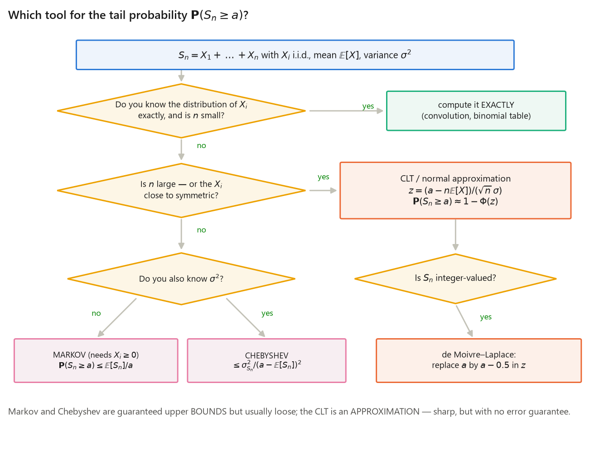
= a)?'. A blue setup box at the top reads 'S_n = X_1 + ... + X_n with X_i i.i.d., mean E[X], variance sigma^2'; a grey arrow runs straight down from it into the first gold diamond, 'Do you know the distribution of X_i exactly, and is n small?'. Its 'yes' arrow goes right to a green box, 'compute it EXACTLY (convolution, binomial table)'; its 'no' arrow goes down to a second gold diamond, 'Is n large — or the X_i close to symmetric?'. That diamond's 'yes' arrow goes right to an orange box, 'CLT / normal approximation, z = (a - n E[X])/(sqrt(n) sigma), P(S_n >= a) approx 1 - Phi(z)', and its 'no' arrow goes down to a third gold diamond, 'Do you also know sigma^2?'. From that diamond a left 'no' arrow reaches a pink box 'MARKOV (needs X_i >= 0), P(S_n >= a) <= E[S_n]/a' and a right 'yes' arrow reaches a pink box 'CHEBYSHEV, <= sigma^2_{S_n} / (a - E[S_n])^2'. On the right-hand branch, an arrow drops from the CLT box into a fourth gold diamond, 'Is S_n integer-valued?', whose 'yes' arrow reaches an orange box 'de Moivre-Laplace: replace a by a - 0.5 in z'. A grey footer line reads 'Markov and Chebyshev are guaranteed upper BOUNDS but usually loose; the CLT is an APPROXIMATION — sharp, but with no error guarantee.'" style="max-width:900px">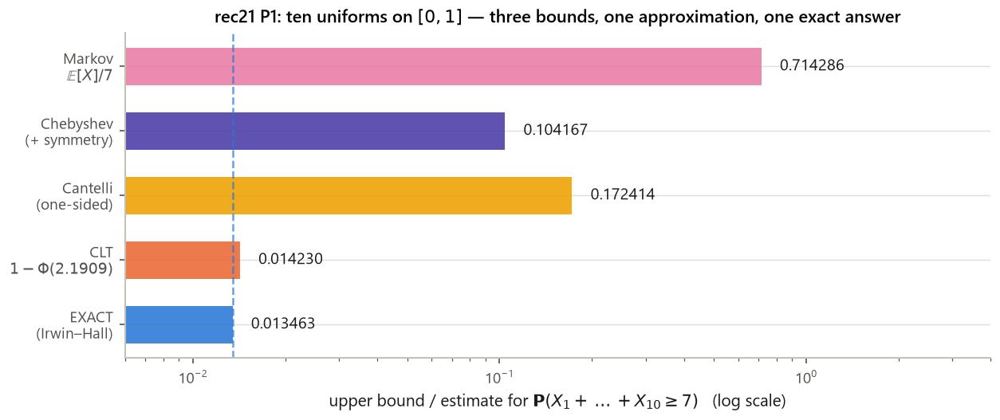
= 7) (log scale)'. Five bars, top to bottom, each annotated with its value at the bar end: pink 'Markov, E[X]/7' at 0.714286, by far the longest; purple 'Chebyshev (+ symmetry)' at 0.104167; gold 'Cantelli (one-sided)' at 0.172414, visibly longer than the Chebyshev bar because symmetry is the stronger assumption here; orange 'CLT, 1 - Phi(2.1909)' at 0.014230, a short bar; and blue 'EXACT (Irwin-Hall)' at 0.013463, shorter still. A dashed blue vertical line at the exact value 0.013463 runs the height of the chart: the CLT bar ends just barely to its right, while the three bound bars end one to two decades further right." style="max-width:840px">- Need a certificate ("prove the failure probability is below $10^{-3}$")? Use a bound. An approximation is not a proof.
- Need a number ("how many voters must I poll?")? Use the CLT — and note that its answer, being sharper, is smaller, which is exactly the direction that saves money.
- Have only the mean? Markov is your only option. Have the variance too? Chebyshev. Have a large $n$? The CLT dominates both, by a lot.
Polling, redux: the CLT versus Chebyshev on sample size
[UNSOLVED EXAMPLE]: the pollster's problem,
finished; = B&T Example 5.11). Let $f$ be the (unknown) fraction of the population favoring a
candidate. Poll $n$ people at random and set
$$X_i=\begin{cases}1,&\text{if the } i\text{th person polled says yes,}\\ 0,&\text{otherwise,}\end{cases}
\qquad M_n=\frac{X_1+\cdots+X_n}{n}.$$
How large must $n$ be so that $\mathbf{P}(|M_n-f|\ge 0.01)\le 0.05$? The slide sets the problem up,
reduces it to a normal-tail statement, and stops — no numerical answer appears on any slide.
Solution (the slide's chain completed, with its unstated step supplied)
Step 1 — the model. The $X_i$ are i.i.d. Bernoulli$(f)$: each randomly selected person says yes with probability $f$, independently. So $\mathbb{E}[X_i]=f$ and $\sigma^2=f(1-f)$.
Step 2 — rewrite the event as a statement about the standardized sum. The slide's algebra, line by line: $$|M_n-f|\ge 0.01 \iff \left|\frac{X_1+\cdots+X_n-nf}{n}\right|\ge 0.01 \iff \left|\frac{X_1+\cdots+X_n-nf}{\sqrt n\,\sigma}\right|\ge \frac{0.01\,n}{\sqrt n\,\sigma} =\frac{0.01\sqrt n}{\sigma},$$ where the second step multiplies both sides by $n/(\sqrt n\,\sigma)>0$, which preserves the inequality. The middle quantity is exactly $|Z_n|$.
Step 3 — the CLT. Treating $Z_n$ as standard normal, $$\mathbf{P}(|M_n-f|\ge0.01)\approx\mathbf{P}\!\left(|Z|\ge\frac{0.01\sqrt n}{\sigma}\right).$$
Step 4 — remove the unknown $\sigma$. The slide's next line replaces $0.01\sqrt n/\sigma$ by $0.02\sqrt n$ with no justification. [DERIVATION GAP filled:] for a Bernoulli variable $\sigma=\sqrt{f(1-f)}$, and the function $f\mapsto f(1-f)$ on $[0,1]$ is maximized at $f=1/2$ with value $1/4$ (its derivative $1-2f$ vanishes there), so $$\sigma=\sqrt{f(1-f)}\le\sqrt{1/4}=\tfrac12 \;\Longrightarrow\;\frac{0.01\sqrt n}{\sigma}\ge\frac{0.01\sqrt n}{1/2}=0.02\sqrt n .$$ A larger threshold means a smaller tail probability, so $$\mathbf{P}\!\left(|Z|\ge\frac{0.01\sqrt n}{\sigma}\right)\le\mathbf{P}\big(|Z|\ge0.02\sqrt n\big),$$ which is the slide's last line. We have converted an unknown into a worst case — Recipe step 6.
Step 5 — impose the requirement and invert the table. By the symmetry of the normal density,
$\mathbf{P}(|Z|\ge t)=2\big(1-\Phi(t)\big)$. So we need
$$2\big(1-\Phi(0.02\sqrt n)\big)\le 0.05
\iff 1-\Phi(0.02\sqrt n)\le 0.025
\iff \Phi(0.02\sqrt n)\ge 0.975 .$$
Read the normal table backwards: $\Phi(1.96)=0.975002$, so the condition is
$$0.02\sqrt n\ge 1.96
\iff \sqrt n\ge 98
\iff n\ge 98^2=9604 .$$
$$\boxed{n=9604 \text{ people suffice.}}$$
Check: $2\big(1-\Phi(0.02\sqrt{9604})\big)=2\big(1-\Phi(1.96)\big)=0.049996\le0.05$ ✓ (key
poll_achieved). With the exact quantile $\Phi^{-1}(0.975)=1.959964$ the requirement is
$n\ge 9603.647$, i.e. $n\ge 9604$ again.
Compare with Chebyshev (§1). Chebyshev's route to the same guarantee gives
$$\mathbf{P}(|M_n-f|\ge\epsilon)\le\frac{\operatorname{var}(M_n)}{\epsilon^2}
=\frac{f(1-f)}{n\epsilon^2}\le\frac{1}{4n\epsilon^2},$$
so $\frac{1}{4n(0.01)^2}\le0.05$ forces $n\ge\frac{1}{4(0.01)^2(0.05)}=50{,}000$. The CLT needs
$$\frac{50{,}000}{9604}=5.21\ \text{times fewer people}$$
(key poll_ratio) — and the factor $5.21$ is independent of $\epsilon$, as the
table below shows. (It does depend on the confidence level: see Practice 2.10, where tightening
$\delta$ from $0.05$ to $0.01$ pushes the same ratio to $15.1$.) B&T §5.4 (p. 277) reaches the same
$9604$ versus $50{,}000$.
| accuracy $\epsilon$ | $n$ from the CLT | $n$ from Chebyshev | ratio |
|---|---|---|---|
| $0.05$ | $385$ | $2{,}000$ | $5.21$ |
| $0.03$ | $1{,}068$ | $5{,}556$ | $5.21$ |
| $0.02$ | $2{,}401$ | $12{,}500$ | $5.21$ |
| $0.01$ | $9{,}604$ | $50{,}000$ | $5.21$ |
| $0.005$ | $38{,}415$ | $200{,}000$ | $5.21$ |
Why the ratio is constant. Both requirements have the form $n\ge \text{const}/\epsilon^2$: the CLT gives $n\ge (z^*)^2/(4\epsilon^2)$ with $z^*=1.959964$, Chebyshev gives $n\ge 1/(4\epsilon^2\delta)$ with $\delta=0.05$. The ratio is $1/\big(\delta (z^*)^2\big)=1/(0.05\times 3.8415)=5.21$, free of $\epsilon$. Both scale as $1/\epsilon^2$ — halving the margin of error quadruples the poll, whichever tool you use. What the CLT buys is the constant, not the scaling.
Sanity check against reality. With $f=1/2$ (the worst case) and $n=9604$, the true binomial
probability of $|M_n-f|\ge0.01$ is $0.048903$ (key poll_exact_binom_f0p5_n9604) — the CLT
prediction $0.049996$ is within $0.0011$ of it and errs on the conservative side, whereas Chebyshev's
guarantee at this $n$ would only have promised $\le 0.2603$ (key
poll_cheb_guarantee_at_9604).
Answer
Worst-case $\sigma=1/2$, so the standardized threshold is $\epsilon\sqrt n/\sigma =
2\epsilon\sqrt n = 2\times0.1\times10=2$. Then
$$\mathbf{P}(|M_{100}-f|\ge0.1)\approx 2\big(1-\Phi(2)\big)=2-2(0.977250)=0.045500 .$$
Using the book's two-decimal table value $\Phi(2)=0.977$: $2-2(0.977)=0.046$, exactly what B&T
prints. Chebyshev gives $\frac{1}{4n\epsilon^2}=\frac{1}{4\times100\times0.01}=0.25$ — five and a half
times larger, and "much smaller (and more accurate)" is the book's own comment. The exact binomial
value at $f=1/2$ is $0.056888$ (key poll100_exact_p_half); note the CLT
underestimates here, which is the price of an approximation with no guarantee — at $n=100$
with a lattice variable the residual error is a few percent.
Answer
Here $\sigma^2=1$, so $\operatorname{var}(M_n)=1/n$. CLT: we need
$2\big(1-\Phi(0.05\sqrt n)\big)\le0.01$, i.e. $\Phi(0.05\sqrt n)\ge0.995$, i.e.
$0.05\sqrt n\ge \Phi^{-1}(0.995)=2.575829$, i.e. $n\ge (2.575829/0.05)^2=2653.959$, so
$n=2654$. Chebyshev: $\frac{1}{n(0.05)^2}\le0.01$ gives $n\ge 40{,}000$ (keys
pr_size_n_ceil, pr_size_cheb) — a factor of $15.1$ more. The factor is larger
than the polling factor $5.21$ because the confidence demand is stricter ($\delta=0.01$ rather than
$0.05$), and the ratio $1/(\delta(z^*)^2)$ grows as $\delta$ shrinks. Caveat: the exponential is
skewed, so at $n=2654$ the CLT answer is trustworthy, but a CLT sample-size calculation for
$n$ in the dozens would not be.
2.6 Two consequences: Stirling's formula, and where the CLT must not go
The last two items on the syllabus are a triumph and a trap: the CLT producing a famous formula about factorials, and the CLT apparently proving something absurd about the Poisson distribution.
(a) Show that $S_n$ is Poisson with mean and variance $n$.
(b) Show how the CLT suggests $n!\approx\sqrt{2\pi n}\,(n/e)^n$ for large $n$.
Solution (official solution, with the [SOLUTION GAP] filled)
(a) The Poisson-process argument (official solution). Interpret $X_i$ as the number of arrivals in the $i$th interval of length 1 in a Poisson process of rate $\lambda=1$ (G4 §3): the number of arrivals in an interval of length $\tau$ is Poisson with parameter $\lambda\tau=\tau$, so each $X_i$ is indeed Poisson with mean 1, and arrivals in disjoint intervals are independent, so the $X_i$ are independent. Laying the $n$ intervals end to end, $S_n=X_1+\cdots+X_n$ counts the arrivals in one interval of length $n$. Therefore $S_n$ is Poisson with parameter $n$: $$\mathbf{P}(S_n=k)=e^{-n}\frac{n^k}{k!},\qquad \mathbb{E}[S_n]=\operatorname{var}(S_n)=n .$$ (One can also prove this by convolution or transforms, but the process argument is one line.)
(b) Stirling from the CLT. The plan: compute $\mathbf{P}(S_n=n)$ — the probability that the Poisson sum lands exactly on its own mean — in two ways, exactly and by the CLT, and equate.
Way 1: exactly. Put $k=n$ in the Poisson PMF from part (a): $$\mathbf{P}(S_n=n)=e^{-n}\frac{n^n}{n!} .$$
Way 2: by the CLT with the $1/2$ correction. Since $\mathbb{E}[S_n]=n$ and $\sigma_{S_n}=\sqrt n$, the standardized sum is $Z_n=(S_n-n)/\sqrt n$. Now, step by step: $$\mathbf{P}(S_n=n)=\mathbf{P}\Big(n-\tfrac12<S_n<n+\tfrac12\Big),$$ which is exact because $S_n$ is integer-valued — this is the $1/2$ correction of §2.4, and it is the reason the whole derivation works. Standardize by subtracting $n$ and dividing by $\sqrt n$: $$=\mathbf{P}\!\left(\frac{-1}{2\sqrt n}<\frac{S_n-n}{\sqrt n}\le\frac{1}{2\sqrt n}\right) \approx\mathbf{P}\!\left(\frac{-1}{2\sqrt n}<Z\le\frac{1}{2\sqrt n}\right),$$ the approximation being the CLT (with $Z$ standard normal). Write the last probability as an integral of the standard normal density: $$=\frac{1}{\sqrt{2\pi}}\int_{-1/(2\sqrt n)}^{1/(2\sqrt n)}e^{-z^2/2}\,dz .$$ [Gap filled — the "second approximation":] the interval of integration has length $$\frac{1}{2\sqrt n}-\Big(\frac{-1}{2\sqrt n}\Big)=\frac{1}{\sqrt n},$$ and it shrinks to zero as $n$ grows, so by the mean-value form of the fundamental theorem of calculus the integral equals (length) $\times$ (integrand at some interior point), and that interior point may be taken to be $z=0$ in the limit. Since $e^{-z^2/2}\big|_{z=0}=e^0=1$, $$\approx\frac{1}{\sqrt{2\pi}}\cdot\frac{1}{\sqrt n}\cdot 1=\frac{1}{\sqrt{2\pi n}} .$$
Equate the two ways. $$e^{-n}\frac{n^n}{n!}\approx\frac{1}{\sqrt{2\pi n}} \;\Longrightarrow\; n!\approx n^n e^{-n}\sqrt{2\pi n}=\boxed{\sqrt{2\pi n}\left(\frac{n}{e}\right)^{n}},$$ which is Stirling's formula.
How good is it, numerically (key stirling)?
| $n$ | $n!$ | $\sqrt{2\pi n}(n/e)^n$ | relative error | $\lambda_n=\ln\!\big(n!\big)-\ln(\text{approx})$ | bounds $\big(\tfrac1{12n+1},\tfrac1{12n}\big)$ |
|---|---|---|---|---|---|
| $1$ | $1$ | $0.922137$ | $-7.79\%$ | $0.081061$ | $(0.076923,\,0.083333)$ |
| $5$ | $120$ | $118.019168$ | $-1.65\%$ | $0.016645$ | $(0.016393,\,0.016667)$ |
| $10$ | $3\,628\,800$ | $3\,598\,696$ | $-0.83\%$ | $0.008331$ | $(0.008264,\,0.008333)$ |
| $50$ | $3.0414\times10^{64}$ | $3.0363\times10^{64}$ | $-0.17\%$ | $0.0016666$ | $(0.0016639,\,0.0016667)$ |
| $100$ | $9.3326\times10^{157}$ | $9.3248\times10^{157}$ | $-0.083\%$ | $0.00083333$ | $(0.00083264,\,0.00083333)$ |
Where the CLT step is doing the work. Check the two approximations separately (key
poisson_atom). At $n=100$: the exact $\mathbf{P}(S_n=n)=0.03986100$; the CLT interval
$\Phi(0.05)-\Phi(-0.05)=0.03987761$ (error $+0.04\%$, this is the CLT); and
$1/\sqrt{2\pi n}=0.03989423$ (error $+0.083\%$, this adds the mean-value step). Both approximations
are individually excellent, and their errors do not cancel — they are the $0.083\%$ in the table.
Historical footnote (from the solution sheet). De Moivre first found the form $n!\approx n^{n+1/2}e^{-n}\cdot(\text{constant})$ with a complicated expression for the constant; his friend Stirling identified the constant as $\sqrt{2\pi}$.
Solution (the resolution the lecturer gives orally; the slide writes only the question marks)
The argument, stated carefully. Fix a Poisson process of rate $\lambda=1$ and let $N$ be the number of arrivals in $[0,1]$, so $N\sim$ Poisson$(1)$. Split $[0,1]$ into $n$ subintervals of length $1/n$ and let $Y_i^{(n)}$ be the count in the $i$th. These are independent, identically distributed (each Poisson with parameter $1/n$), and $N=Y_1^{(n)}+\cdots+Y_n^{(n)}$ exactly. So $N$ is an i.i.d. sum of $n$ terms for every $n$. Letting $n\to\infty$ and "applying the CLT" would say $N$ is normal — but $N$ is Poisson$(1)$, a discrete variable taking the values $0,1,2,\dots$, which is certainly not normal.
The error. The CLT is a statement about a fixed sequence $X_1,X_2,\dots$ whose common distribution does not depend on $n$; the limit $n\to\infty$ adds new terms drawn from that same fixed distribution. In the argument above, the summands' distribution changes with $n$: the $i$th summand is Poisson$(1/n)$, and as $n$ grows each summand becomes more and more degenerate (it is $0$ with probability $e^{-1/n}\to1$). We are not adding more copies of one distribution; we are re-splitting one fixed random variable into ever finer pieces, whose sum is the same $N$ every time. [DERIVATION GAP filled: the slide marks the flaw with "(??)" but never writes the resolution.] Formally, the standardized sum here is $$\frac{N-n\cdot(1/n)}{\sqrt{n}\cdot\sqrt{1/n}}=\frac{N-1}{1},$$ which does not depend on $n$ at all — there is no limit being taken, and nothing converges to anything. The CLT hypothesis "i.i.d., distribution fixed as $n\to\infty$" is doing real work.
The correct picture — two different limits of the binomial (L20 slide 8). Both approximations to Binomial$(n,p)$ are limits, but along different paths:
- $p$ fixed, $n\to\infty$: normal. Each summand keeps a fixed distribution, so the CLT applies. The variance $np(1-p)\to\infty$ and the distribution spreads over $\sqrt{n}$ values.
- $np=\mu$ fixed, $n\to\infty$, $p\to0$: Poisson. The summands' distribution changes with $n$ (they become rarer and rarer), so the CLT does not apply; the Poisson limit of G4 §3 applies instead. The variance stays bounded at $np(1-p)\to\mu$.
poisson_vs_normal): for $n=100$, $p=0.01$ the largest PMF error is $0.001850$ for
the Poisson approximation and $0.124215$ for the normal one — the normal is off by a factor of $67$,
because it cannot reproduce the huge atom $\mathbf{P}(S=0)=0.366$. For $n=500$, $p=0.1$ the largest
CDF error is $0.013335$ for Poisson and $0.007906$ for normal, and the normal now wins.
Rule of thumb. Compare $np$ with $n$: if $np$ stays small (say $np\lesssim 10$) while $n$ is large, the mass is concentrated on a few integers and Poisson is the right model; if $np(1-p)$ is large (say $\ge 10$), the mass is spread over many integers and the normal approximation, with the $1/2$ correction, is the right model.
Answer
$S_{2m}\sim$ Binomial$(2m,1/2)$ has mean $m$ and $\sigma_{S}=\sqrt{2m\cdot\tfrac14}=\sqrt{m/2}$. By de Moivre–Laplace with the $1/2$ correction, $$\mathbf{P}(S_{2m}=m)\approx \Phi\!\Big(\frac{0.5}{\sqrt{m/2}}\Big)-\Phi\!\Big(\frac{-0.5}{\sqrt{m/2}}\Big) \approx \varphi(0)\cdot\frac{1}{\sqrt{m/2}} =\frac{1}{\sqrt{2\pi}}\sqrt{\frac{2}{m}}=\frac{1}{\sqrt{\pi m}},$$ using the same shrinking-interval argument as in Example 2.8. Check at $m=18$ (i.e. the $n=36$ coin of Example 2.1): $1/\sqrt{18\pi}=0.132981$ against the exact $\mathbf{P}(S_{36}=18)=0.132061$ — a $0.7\%$ error. This is the classic $\binom{2m}{m}\sim 4^m/\sqrt{\pi m}$.
Answer
The count $N$ in 60 minutes is Poisson with $\mu=3\times60=180$, hence $\mathbb{E}[N]=180$ and
$\operatorname{var}(N)=180$, $\sigma_N=\sqrt{180}=13.416408$. (Example 2.8(a) legitimizes the CLT here:
$N$ is the sum of 180 i.i.d. Poisson$(1)$ counts, one per 20-second block — a fixed distribution,
$n=180$ terms.) Upper tail, integer-valued, so cut at $200.5$:
$$z=\frac{200.5-180}{13.416408}=1.527980,\qquad \mathbf{P}(N>200)\approx 1-\Phi(1.527980)=0.063259 .$$
The exact Poisson answer is $1-F_{\text{Poisson}(180)}(200)=0.065206$ (keys
pr_call_z_corr, pr_call_ans_corr, pr_call_exact). Without the
correction one gets $z=1.490712$ and $0.068019$ (key pr_call_ans_plain). Now compare the
two errors honestly: the corrected answer is off by $0.001947$, the uncorrected one by $0.002813$ — a
ratio of only $1.44$ (key pr_call_err_ratio). The $1/2$ correction barely helps here,
and that is the lesson: at $\mu=180$ the lattice spacing of $1$ is tiny compared with
$\sigma_N=13.4$, so the lattice error the correction repairs is already small; what remains is the
skew error of the Poisson (skewness $1/\sqrt{180}=0.0745$), which the correction cannot touch.
Contrast Practice 2.8, where the base was symmetric and the correction bought a factor of $310$: the
correction pays when the residual error is lattice-dominated, not when it is skew-dominated. (You can
reproduce every number with two lines of scipy.stats; the point is that a $\mu=180$
Poisson is firmly in normal territory, unlike the $\mu=1$ Poisson of Example 2.9.)
- Standardize: $Z_n=\dfrac{S_n-n\mathbb{E}[X]}{\sigma\sqrt n}$, which has $\mathbb{E}[Z_n]=0$ and $\operatorname{var}(Z_n)=1$ for every $n$. $\sqrt n$ is the unique scaling that keeps both moments fixed.
- CLT (L20 slide 1; B&T §5.4): $X_i$ i.i.d. with finite $\sigma^2$ $\Rightarrow$ $\mathbf{P}(Z_n\le c)\to\Phi(c)$ for every $c$. Hypotheses: independence, identical distribution, finite variance — nothing else.
- What converges is the CDF, not the PMF/PDF. For lattice $X_i$ every atom of $Z_n$ has probability $\to0$; the atoms merely get closer together as fast as they shrink.
- Normal approximation (Recipe, §2.3): (1) write it as an i.i.d. sum; (2) $\mathbb{E}[S_n]=n\mathbb{E}[X]$, $\sigma_{S_n}=\sigma\sqrt n$; (3) $z=(c-n\mathbb{E}[X])/(\sigma\sqrt n)$; (4) $\mathbf{P}(S_n\le c)\approx\Phi(z)$, with $\Phi(-z)=1-\Phi(z)$; (5) correct if integer; (6) use worst-case $\sigma^2$ if unknown.
- $1/2$ correction / de Moivre–Laplace (L20 slides 6–7; B&T §5.4 p. 279): for integer-valued $S_n$, the bar at $k$ ↔ the area over $[k-\tfrac12,k+\tfrac12]$, so $\mathbf{P}(k\le S_n\le l)\approx\Phi\big(\frac{l+1/2-np}{\sqrt{np(1-p)}}\big)- \Phi\big(\frac{k-1/2-np}{\sqrt{np(1-p)}}\big)$. On Binomial$(36,\tfrac12)$ it cuts the worst CDF error from $0.066030$ to $0.000754$, and it is the only way to approximate a PMF value.
- Never correct a continuous variable, and always widen away from the region you keep ($k-\tfrac12$ for an upper tail, $k+\tfrac12$ for a lower one).
- Accuracy: no theorem gives a threshold $n$; symmetry helps enormously. Berry–Esseen: gap $\le 0.4748\,\rho/(\sigma^3\sqrt n)$ with $\rho=\mathbb{E}|X-\mathbb{E}[X]|^3$ — the rate is $1/\sqrt n$ and the constant is governed by skew.
- Bounds vs. approximation (rec21 P1): on $\mathbf{P}(\sum_{1}^{10}U_i\ge7)$ the answers are Markov $0.714286$, Chebyshev+symmetry $0.104167$, Cantelli $0.172414$, CLT $0.014230$, exact $0.013463$. Markov/Chebyshev are guaranteed; the CLT is merely accurate.
- Polling (L20 slide 4; B&T Example 5.11): for $\mathbf{P}(|M_n-f|\ge0.01)\le0.05$ use $\sigma\le\tfrac12$ and solve $2(1-\Phi(0.02\sqrt n))\le0.05$: $n=9604$, against Chebyshev's $50{,}000$ — a factor of $5.21$, constant in $\epsilon$ (but not in the confidence level $\delta$: the ratio is $1/(\delta(z^*)^2)$).
- Stirling (rec21 P3): $\mathbf{P}(S_n=n)$ for Poisson$(n)$, computed exactly ($e^{-n}n^n/n!$) and by the corrected CLT ($1/\sqrt{2\pi n}$), gives $n!\approx\sqrt{2\pi n}(n/e)^n$.
- Do not push the CLT through a changing distribution (L20 slide 8): Binomial$(n,p)$ with $p$ fixed $\to$ normal; with $np$ fixed and $p\to0$ $\to$ Poisson. The "Poisson = normal" argument fails because the summands' distribution depends on $n$.
§3 Bayesian inference: priors, posteriors, and the MAP rule
Sources: L21 slides 1–5 (raster p01–p02) · rec22 Problem 1(a)–(c) · Bertsekas–Tsitsiklis §8.1 (pp. 407–419: Examples 8.1–8.6, its Figure 8.1, its Figure 8.2) and §8.2 (pp. 420–425: Examples 8.7, 8.8, its Figure 8.3, its Figure 8.4). Every number on this page is recomputed in computes/g6_s3.py; every figure is generated by computes/g6_s3_figs.py.
Everything up to this point has been probability: a fully specified model was handed to us and we computed consequences. §1 and §2 of this note were the last and most powerful such computations — the weak law and the central limit theorem tell you what a sample average does when the model is known. This section reverses the arrow. The model is not known, data are available, and we want to run the machinery backwards: from the data to the unknown. That is statistical inference (L21 slide 1; B&T Chapter 8 preamble, p. 408).
The Bayesian answer to "how do you run probability backwards?" is disarmingly simple: refuse to leave probability theory at all. Model the unknown as a random variable $\Theta$, give it a prior distribution, write down the observation model that says how the data $X$ are generated once $\Theta$ is fixed, and then apply Bayes' rule — the same Bayes' rule from G1 §2 and G3 §3 — to get the posterior distribution of $\Theta$ given the data. Every question you could ask about the unknown then has a unique, calculable answer, because you never left the realm of a fully specified probabilistic model (B&T §8.1, p. 409).
This section does three things. §3.1 sets up the framework: what the prior, the observation model, and the posterior are; how Bayesian inference differs from classical statistics; the two flavors of inference problem (hypothesis testing and estimation) and the two flavors of inference target (model versus variable); and the four syntactically parallel versions of Bayes' rule you need depending on whether $\Theta$ and $X$ are discrete or continuous. §3.2 computes posteriors in the three canonical cases: uniform prior with binomial data (the coin of L21 slide 4), normal prior with normal noise (B&T Example 8.3, the workhorse of engineering), and the uniform-scale parameter of rec22 (Romeo and Juliet). §3.3 squeezes the posterior down to a single number — the MAP estimate or the conditional expectation — explains what each one optimizes, and shows exactly when squeezing is a bad idea. §4 takes the conditional-expectation estimator seriously and proves its optimality; here we only define it.
3.1 The Bayesian setup: prior, observation model, posterior
Classical versus Bayesian: what kind of object is the unknown?
L21 slide 2 draws the same block diagram twice and changes one letter. In both diagrams an unknown feeds a probabilistic model, noise $N$ is injected, an observation $X$ comes out, and an estimator turns $X$ into a guess $\hat\Theta$. The difference is what the unknown is.
- Classical (frequentist) statistics. The unknown is a number $\theta$ — not a random variable, just a constant that happens to be unknown. The model is written $p_X(x;\theta)$ with a semicolon: there is one probability model for each candidate $\theta$, and the semicolon is a deliberate reminder that we are not conditioning on anything, because $\theta$ is not an event. L21 slide 2's example: $\theta$ = mass of the electron. There is nothing random about it (B&T §8.1, p. 409).
- Bayesian statistics. The unknown is a random variable $\Theta$ carrying a prior distribution $p_\Theta$ or $f_\Theta$, and the model is written $p_{X\mid\Theta}(x\mid\theta)$ with a conditioning bar. There is one joint model over $(\Theta, X)$, and inference is conditioning — which is a thing we already know how to do.
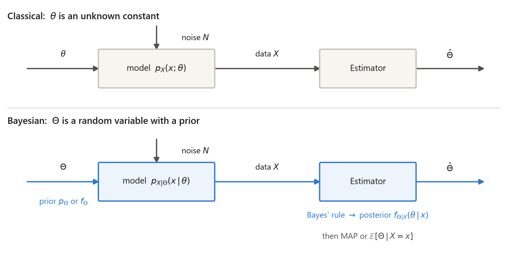
Two dimensions of classification
Inference problems get sorted along two independent axes, both of which L21 slide 2 mentions and B&T §8.1 (pp. 409–411) develops. Getting them straight prevents most of the confusion in this chapter.
Axis 1 — what are you inferring? B&T's running example is a linear model $X = aS + W$, where $S$ is a transmitted signal, $a$ is a channel attenuation, $W$ is noise, and $X$ is what the receiver sees (L21 slide 2, red ink; B&T Example 8.1, p. 410).
- Model building / model inference. You know $S$ (a pilot sequence, agreed on in advance), you observe $X$, and you infer $a$ — you are building a description of the channel itself. Other examples: do planets move on ellipses? what is the Poisson rate of customer arrivals?
- Estimation in the presence of noise / variable inference. You know $a$ (perhaps because you already inferred it from a pilot), you observe $X$, and you estimate $S$ — you want the value of a hidden variable, not a law of nature. Other examples: where am I, given a few GPS readings?
B&T stress that the distinction is not sharp — describe a model by a finite list of parameters and model inference becomes variable inference — and that the same methods apply to both, which is why we will not belabor it (B&T §8.1, p. 410).
Axis 2 — what does a good answer look like?
- Hypothesis testing. $\Theta$ takes one of a small finite number of values (two, in the binary case), each value being a competing hypothesis. Success is measured by the probability of an incorrect decision, and you want that small (L21 slide 2). Example: is this email spam or legitimate (B&T Example 8.5, p. 418)?
- Estimation. $\Theta$ ranges over a continuum. Success is measured by an estimation error — typically the mean squared error $\mathbb{E}[(\Theta-\hat\Theta)^2]$ — and you want that small (L21 slide 2). Example: what is the bias of this coin?
The three ingredients, and the posterior
- an unknown random variable $\Theta$ (possibly a vector $\Theta=(\Theta_1,\dots,\Theta_m)$), together with a prior distribution $p_\Theta(\theta)$ if $\Theta$ is discrete or $f_\Theta(\theta)$ if it is continuous — this encodes everything you believe about $\Theta$ before seeing data;
- an observation (data) random variable $X$, possibly a vector $X=(X_1,\dots,X_n)$, together with an observation model $p_{X\mid\Theta}(x\mid\theta)$ or $f_{X\mid\Theta}(x\mid\theta)$ — this says how the data are generated once the unknown is fixed at $\theta$, and it is where the noise lives;
- an observed value $x$ of $X$.
The four versions of Bayes' rule below are the four ways of writing one idea. They are syntactically identical: start from the all-discrete version and, for each variable that becomes continuous, replace its PMF by a PDF and, in the denominator, its sum by an integral (B&T §8.1, p. 413). We recap them here because §3.2 uses three of the four; the derivations were done in G1 §2 (discrete) and G3 §3 (the mixed and continuous variants).
- $\Theta$ discrete, $X$ discrete: $\displaystyle p_{\Theta\mid X}(\theta\mid x)=\frac{p_\Theta(\theta)\,p_{X\mid\Theta}(x\mid\theta)}{\sum_{\theta'}p_\Theta(\theta')\,p_{X\mid\Theta}(x\mid\theta')}$
- $\Theta$ discrete, $X$ continuous: $\displaystyle p_{\Theta\mid X}(\theta\mid x)=\frac{p_\Theta(\theta)\,f_{X\mid\Theta}(x\mid\theta)}{\sum_{\theta'}p_\Theta(\theta')\,f_{X\mid\Theta}(x\mid\theta')}$
- $\Theta$ continuous, $X$ discrete: $\displaystyle f_{\Theta\mid X}(\theta\mid x)=\frac{f_\Theta(\theta)\,p_{X\mid\Theta}(x\mid\theta)}{\int f_\Theta(\theta')\,p_{X\mid\Theta}(x\mid\theta')\,d\theta'}$
- $\Theta$ continuous, $X$ continuous: $\displaystyle f_{\Theta\mid X}(\theta\mid x)=\frac{f_\Theta(\theta)\,f_{X\mid\Theta}(x\mid\theta)}{\int f_\Theta(\theta')\,f_{X\mid\Theta}(x\mid\theta')\,d\theta'}$
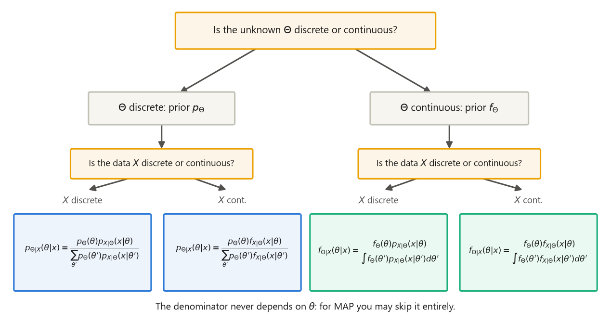
- Name the unknown and the data. Which quantity is $\Theta$, which is $X$? Write down whether each is discrete or continuous — this picks the formula from Fig. 3.2.
- Write the prior $f_\Theta(\theta)$ (or $p_\Theta$), including its support. The support is where beginners lose points.
- Write the likelihood $f_{X\mid\Theta}(x\mid\theta)$ (or $p_{X\mid\Theta}$), again including the range of $\theta$ for which it is nonzero. With $n$ conditionally independent observations, multiply: $f_{X\mid\Theta}(x\mid\theta)=\prod_{i=1}^n f_{X_i\mid\Theta}(x_i\mid\theta)$.
- Multiply and intersect the supports. The numerator $f_\Theta(\theta)f_{X\mid\Theta}(x\mid\theta)$ is nonzero only where both factors are; this intersection is the support of the posterior.
- Recognize or integrate. If the $\theta$-dependence matches a standard family (beta, normal, gamma, exponential), read the normalizing constant off the standard density and stop. Otherwise integrate the numerator over $\theta$ to get the denominator.
- Sanity-check that the posterior integrates (or sums) to 1 and that its support makes physical sense.
Solution
Step 1 — which Bayes variant. $\Theta=(\Theta_0,\Theta_1,\Theta_2)$ is continuous and $X=(X_1,\dots,X_n)$ is continuous, so we are in the fourth box of Fig. 3.2, with a three-dimensional integral in the denominator: $$f_{\Theta\mid X}(\theta\mid x)=\frac{f_\Theta(\theta)\,f_{X\mid\Theta}(x\mid\theta)} {\displaystyle\int\!\!\int\!\!\int f_\Theta(\theta')\,f_{X\mid\Theta}(x\mid\theta')\,d\theta'_0\,d\theta'_1\,d\theta'_2}.$$
Step 2 — the prior. The three coefficients are independent, so their joint density is the product of three normal densities: $$f_\Theta(\theta_0,\theta_1,\theta_2) =\prod_{j=0}^{2}\frac{1}{\sqrt{2\pi\sigma_p^2}}\exp\!\Big(-\frac{\theta_j^2}{2\sigma_p^2}\Big) =\frac{1}{(2\pi\sigma_p^2)^{3/2}}\exp\!\Big(-\frac{1}{2\sigma_p^2}\sum_{j=0}^{2}\theta_j^2\Big).$$
Step 3 — the likelihood. Condition on $\Theta=\theta$. Then $Z_t$ is the known number $\theta_0+t\theta_1+t^2\theta_2$, and $X_t=Z_t+W_t$ is normal with mean $Z_t$ and variance $\sigma_w^2$. The $W_t$ are independent of each other and of $\Theta$, so conditioned on $\Theta=\theta$ the $X_t$ are independent and the joint density factors: $$f_{X\mid\Theta}(x\mid\theta)=\prod_{t=1}^{n}\frac{1}{\sqrt{2\pi\sigma_w^2}} \exp\!\Big(-\frac{(x_t-\theta_0-t\theta_1-t^2\theta_2)^2}{2\sigma_w^2}\Big) =\frac{1}{(2\pi\sigma_w^2)^{n/2}}\exp\!\Big(-\frac{1}{2\sigma_w^2}\sum_{t=1}^{n}(x_t-\theta_0-t\theta_1-t^2\theta_2)^2\Big).$$
Step 4 — multiply, and drop everything free of $\theta$. Using the Gotcha above, with $c(x)$ absorbing the two constants $(2\pi\sigma_p^2)^{-3/2}$ and $(2\pi\sigma_w^2)^{-n/2}$ as well as the denominator, $$\boxed{\;f_{\Theta\mid X}(\theta\mid x)=c(x)\, \exp\!\Big(-\frac{1}{2\sigma_w^2}\sum_{t=1}^{n}\big(x_t-\theta_0-t\theta_1-t^2\theta_2\big)^2 -\frac{1}{2\sigma_p^2}\big(\theta_0^2+\theta_1^2+\theta_2^2\big)\Big).\;}$$ This is the explicit prior$\times$likelihood expression the slide omits.
Step 5 — recognize the family. Collect the exponent in matrix form. Let $A$ be the $n\times 3$ design matrix whose $t$-th row is $(1,\;t,\;t^2)$, so that the vector of true positions is $A\theta$. Then $\sum_t(x_t-\theta_0-t\theta_1-t^2\theta_2)^2=\|x-A\theta\|^2$ and the exponent is $$-\tfrac12\Big[\tfrac{1}{\sigma_w^2}(x-A\theta)^{\!\top}(x-A\theta)+\tfrac{1}{\sigma_p^2}\theta^{\!\top}\theta\Big] =-\tfrac12\Big[\theta^{\!\top}\underbrace{\Big(\tfrac{A^{\!\top}\!A}{\sigma_w^2}+\tfrac{I}{\sigma_p^2}\Big)}_{\textstyle \Sigma^{-1}}\theta -2\,\theta^{\!\top}\tfrac{A^{\!\top}x}{\sigma_w^2}\Big]+\text{const},$$ where we expanded the square and pushed the $\theta$-free piece $x^{\!\top}x/\sigma_w^2$ into the constant. Completing the square, with $\mu=\Sigma A^{\!\top}x/\sigma_w^2$, the exponent equals $-\tfrac12(\theta-\mu)^{\!\top}\Sigma^{-1}(\theta-\mu)+\text{const}$. So the posterior is multivariate normal: $$\Theta\mid X=x\ \sim\ \mathcal N(\mu,\Sigma),\qquad \Sigma=\Big(\frac{A^{\!\top}\!A}{\sigma_w^2}+\frac{I}{\sigma_p^2}\Big)^{\!-1},\qquad \mu=\Sigma\,\frac{A^{\!\top}x}{\sigma_w^2}.$$ The three-dimensional integral is never evaluated by brute force — recognizing the normal shape does the whole job.
Step 6 — numbers. Take $n=5$ readings at $t=1,\dots,5$, prior variance $\sigma_p^2=4$,
noise variance $\sigma_w^2=0.25$ (noise standard deviation $0.5$), and the readings
$x=(1.1219,\,2.4523,\,2.1952,\,2.6681,\,1.8498)$, generated from the true coefficients
$(1,\,0.5,\,-0.05)$. Then (all values from computes/g6_s3.py section C)
$$\mu=(0.062177,\;1.459398,\;-0.216699),\qquad
\sqrt{\Sigma_{jj}}=(0.894923,\;0.686263,\;0.114485)$$
(C_post_mean, C_post_sd; the full covariance is C_post_cov).
The posterior standard deviations say how much uncertainty is left: the quadratic coefficient is
pinned to $\pm0.11$, the constant term barely at all. The posterior correlations are enormous —
$\rho_{01}=-0.917481$ (C_post_corr_01), $\rho_{02}=0.824771$
(C_post_corr_02), $\rho_{12}=-0.974683$ (C_post_corr_12) — which is the mathematical
statement of a familiar fact: over a short arc you cannot separate "started higher" from
"decelerating harder", only their combination. This is why reporting three separate error bars is
misleading and the full posterior matters.
Step 7 — sanity check against no prior. Ordinary least squares (the $\sigma_p^2\to\infty$
limit, in which the prior term vanishes and $\mu\to(A^{\!\top}\!A)^{-1}A^{\!\top}x$) gives
$(-0.227720,\;1.696046,\;-0.254814)$ (C_least_squares; the per-coordinate shrinkage
percentages are C_shrinkage_pct). The Bayesian estimate is pulled toward the prior mean 0 in
every coordinate — that is shrinkage, and it is what a prior buys you when $n$ is small.
Solution
$\Theta$ is discrete and $X$ is continuous — the second box of Fig. 3.2, with a
sum in the denominator and a density in the likelihood:
$$p_{\Theta\mid X}(m\mid x)=\frac{p_\Theta(m)f_{X\mid\Theta}(x\mid m)}{\sum_{j=1}^{2}p_\Theta(j)f_{X\mid\Theta}(x\mid j)}.$$
The likelihoods at $x=1.2$ are $f_{X\mid\Theta}(1.2\mid 1)=\tfrac{1}{\sqrt{2\pi}}e^{-(1.2-1)^2/2}$ and
$f_{X\mid\Theta}(1.2\mid 2)=\tfrac{1}{\sqrt{2\pi}}e^{-1.2^2/2}$. Numerators:
$0.3\times 0.391043=0.117313$ and $0.7\times 0.194186=0.135930$ (F_P34_numerators).
Their sum is the marginal density $f_X(1.2)=0.253243$ (F_P34_fX). Hence
$$p_{\Theta\mid X}(1\mid 1.2)=0.463242,\qquad p_{\Theta\mid X}(2\mid 1.2)=0.536758$$
(F_P34_posteriors).
Even though the reading 1.2 is more typical of a faulty sensor than of a healthy one
(the faulty likelihood is twice the healthy one), the prior 0.7 versus 0.3 wins and the posterior
still favors "healthy" — narrowly. All values from computes/g6_s3.py section F.
Solution
The shape $\theta^{\alpha-1}e^{-\lambda\theta}$ is a gamma density with $\alpha-1=5$ and
$\lambda=4$, i.e. $\alpha=6$, rate $\lambda=4$. A gamma density is
$\lambda^\alpha\theta^{\alpha-1}e^{-\lambda\theta}/\Gamma(\alpha)$ with $\Gamma(6)=5!=120$, so
$c=4^{6}/120=4096/120=34.133333$ (F_gamma_c); equivalently
$\int_0^\infty\theta^5e^{-4\theta}d\theta=5!/4^6=0.029297$ (F_gamma_integral_exact),
which the quadrature F_gamma_integral_quad reproduces to $3.5\times10^{-18}$
(F_gamma_integral_err). The mean of a gamma is $\alpha/\lambda=6/4=1.5$
(F_gamma_mean, quadrature F_gamma_mean_quad) and its standard deviation is
$\sqrt{\alpha}/\lambda=\sqrt6/4=0.612372$ (F_gamma_sd). Recognizing the family beat
doing the integral — that is step 5 of the Recipe.
3.2 Computing posteriors: the three canonical calculations
Uniform prior, binomial data: the coin of L21 slide 4
L21 slide 4 states the "$\Theta$ continuous, $X$ discrete" formula in a box, poses the coin problem, says "assume a prior on $\Theta$ (e.g., uniform)", and stops. We carry the calculation out (this fills the [DERIVATION GAP] flagged there; it is B&T Example 8.4, p. 417).
Solution
Step 1 — the variant. $\Theta$ is continuous, $X$ is discrete: third box of Fig. 3.2, exactly the boxed pair on L21 slide 4, $$f_{\Theta\mid X}(\theta\mid k)=\frac{f_\Theta(\theta)p_{X\mid\Theta}(k\mid\theta)}{p_X(k)}, \qquad p_X(k)=\int_0^1 f_\Theta(\theta)\,p_{X\mid\Theta}(k\mid\theta)\,d\theta .$$
Step 2 — prior. $f_\Theta(\theta)=1$ for $0\le\theta\le1$ and $0$ otherwise.
Step 3 — likelihood. Given $\Theta=\theta$, the tosses are independent Bernoulli$(\theta)$ trials, so the number of heads is binomial (G2 §1): $$p_{X\mid\Theta}(k\mid\theta)=\binom{n}{k}\theta^{k}(1-\theta)^{n-k},\qquad k=0,1,\dots,n .$$
Step 4 — the normalizing integral. Substituting into the boxed formula, $$p_X(k)=\int_0^1 1\cdot\binom{n}{k}\theta^{k}(1-\theta)^{n-k}\,d\theta =\binom{n}{k}\int_0^1\theta^{k}(1-\theta)^{n-k}\,d\theta .$$ The remaining integral is the Beta function $B(k+1,n-k+1)=\dfrac{k!\,(n-k)!}{(n+1)!}$ (B&T Example 8.4, p. 417; it also follows from integration by parts $k$ times). Hence $$p_X(k)=\frac{n!}{k!\,(n-k)!}\cdot\frac{k!\,(n-k)!}{(n+1)!}=\frac{n!}{(n+1)!}=\frac{1}{n+1}.$$ Every one of the $n+1$ possible head-counts is equally likely a priori — a small miracle that is special to the flat prior.
Step 5 — the posterior. Dividing, $$\boxed{\;f_{\Theta\mid X}(\theta\mid k)=\frac{(n+1)!}{k!\,(n-k)!}\,\theta^{k}(1-\theta)^{n-k}, \qquad 0\le\theta\le1,\;}$$ which is the beta density with parameters $\alpha=k+1$ and $\beta=n-k+1$.
Step 6 — numbers for $n=10$, $k=7$. (All from computes/g6_s3.py section A.)
$\int_0^1\theta^7(1-\theta)^3d\theta=7!\,3!/11!=1/1320=0.000757576$
(A_beta_integral_exact, reproduced by quadrature as
A_beta_integral_quad); $\binom{10}{7}=120$ (A_comb_n_k); so
$p_X(7)=120/1320=1/11=0.090909$ (A_pX_k), matching $1/(n+1)$ exactly
(A_pX_uniform_max_dev $=0$ across all $k$). The posterior is Beta$(8,4)$, with
$$\text{mode}=\frac{k}{n}=0.7,\qquad
\text{mean}=\frac{k+1}{n+2}=\frac{8}{12}=0.666667,\qquad
\text{sd}=0.130744,$$
(A_MAP, A_post_mean, A_post_sd) and the density at the mode is
$2.935107$ (A_post_density_at_MAP). The posterior assigns probability
$\mathbf{P}(\Theta>0.5\mid X=7)=0.886719$ (A_post_P_gt_half) to the coin being biased
toward heads; its median is $0.676196$ (A_post_median). (Where the mean and the mode come from is §3.3's business — the mean of a
Beta$(\alpha,\beta)$ is $\alpha/(\alpha+\beta)$, here $8/12$.)
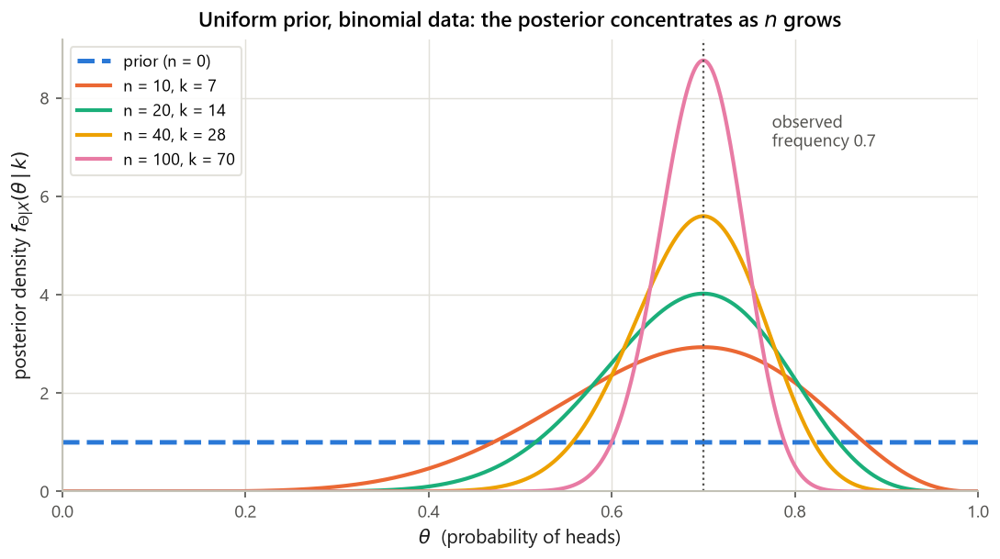
A_narrowing). Multiplying $n$ by 10 shrinks the spread by a factor $0.346632$ (A_sd_ratio_100_over_10) — the $1/\sqrt n$ rate of the CLT in §2 predicts $1/\sqrt{10}=0.316228$, and at these small $n$ the agreement is only fair (9.6% off, A_sd_ratio_100_over_10_rel_err), because the Beta sd carries an $n+2$ and an $n+3$ where the CLT carries a bare $n$. Take the decade further out and the constant washes out: $n=100\to1000$ gives $0.319399$ (A_sd_ratio_1000_over_100), within 1.0% of $1/\sqrt{10}$.Normal prior, normal noise: the conjugate workhorse
Solution
Step 1 — variant and ingredients. Both continuous: fourth box of Fig. 3.2. Prior and likelihood, with $c_1,c_2$ the normalizing constants that do not involve $\theta$: $$f_\Theta(\theta)=c_1\exp\!\Big(-\frac{(\theta-x_0)^2}{2\sigma_0^2}\Big),\qquad f_{X\mid\Theta}(x\mid\theta)=c_2\prod_{i=1}^{n}\exp\!\Big(-\frac{(x_i-\theta)^2}{2\sigma_i^2}\Big).$$ Conditional independence of the $X_i$ given $\Theta=\theta$ is what lets us multiply.
Step 2 — a notational trick. Write the prior term as the $i=0$ term of the product by setting $\sigma_0^2$ to be the prior variance and treating $x_0$, the prior mean, as a "measurement number zero". Then the numerator of Bayes' rule is $$f_\Theta(\theta)f_{X\mid\Theta}(x\mid\theta)=c_1c_2\exp\!\Big(-\sum_{i=0}^{n}\frac{(x_i-\theta)^2}{2\sigma_i^2}\Big).$$ This is B&T's compression, and it already tells you the answer's shape.
Step 3 — complete the square. Expand the exponent, writing $\tau_i=1/\sigma_i^2$ for the precision of measurement $i$ (precision = 1/variance; it is the natural currency here): $$\sum_{i=0}^{n}\frac{(x_i-\theta)^2}{2\sigma_i^2} =\frac12\Big[\theta^2\sum_{i=0}^{n}\tau_i-2\theta\sum_{i=0}^{n}\tau_i x_i+\sum_{i=0}^{n}\tau_i x_i^2\Big].$$ Put $T=\sum_{i=0}^{n}\tau_i$ and $S=\sum_{i=0}^{n}\tau_i x_i$. The bracket is $T\theta^2-2S\theta+\text{const}=T\big(\theta-S/T\big)^2+\text{const}'$, where both constants are free of $\theta$. Therefore $$f_\Theta(\theta)f_{X\mid\Theta}(x\mid\theta)=d\cdot\exp\!\Big(-\frac{(\theta-m)^2}{2v}\Big), \qquad m=\frac{S}{T},\quad v=\frac{1}{T},$$ with $d$ depending on the $x_i$ but not on $\theta$.
Step 4 — divide by the denominator. The denominator of Bayes' rule is also free of $\theta$, so it merely rescales $d$. A density proportional to $\exp(-(\theta-m)^2/2v)$ must be the normal density with mean $m$ and variance $v$ — no integral needed. Hence $$\boxed{\;\Theta\mid X=x\ \sim\ \mathcal N(m,v),\qquad m=\frac{\displaystyle\sum_{i=0}^{n}x_i/\sigma_i^2}{\displaystyle\sum_{i=0}^{n}1/\sigma_i^2},\qquad v=\frac{1}{\displaystyle\sum_{i=0}^{n}1/\sigma_i^2}.\;}$$ In words: posterior precision = prior precision + sum of data precisions, and the posterior mean is the precision-weighted average of the prior mean and the data, with the prior mean counted as one more observation.
Step 5 — numbers, one observation. Prior $\mathcal N(1,4)$, noise variance
$\sigma^2=1$, observe $x=3$. Prior precision $1/4=0.25$, data precision $1/1=1$, posterior
precision $1.25$ (B1_post_precision), so $v=1/1.25=0.8$ (B1_post_var) and
posterior sd $=0.894427$ (B1_post_sd). The mean is
$$m=\frac{1/4+3/1}{1.25}=\frac{0.25+3}{1.25}=\frac{3.25}{1.25}=2.6 $$
(B1_post_mean). The weight on the observation is $1/(1.25)=0.8$
(B1_weight_on_x) and on the prior mean $0.25/1.25=0.2$ (B1_weight_on_prior):
the datum is four times as precise as the prior, so it gets four times the weight. Brute-force
numerical integration of prior$\times$likelihood reproduces $m=2.6$ and $v=0.8$ to 13 decimals
(B1_post_mean_quad, B1_post_var_quad, errors B1_mean_err and
B1_var_err), and the marginal $f_X(3)$ equals the $\mathcal N(1,\,4+1)$ density at 3,
namely $0.119593$ (B1_Z_quad versus B1_fX_closed_form, agreeing to
B1_fX_err).
Step 6 — equal variances. If $\sigma_0^2=\sigma_1^2=\dots=\sigma_n^2=\sigma^2$ the
formulas collapse to
$$m=\frac{x_0+x_1+\dots+x_n}{n+1},\qquad v=\frac{\sigma^2}{n+1},$$
so the prior mean is literally averaged in as one extra data point, and the posterior standard
deviation decays like $\sigma/\sqrt{n+1}$ — again the $1/\sqrt n$ of §1–§2. Worked instance with
five measurements $x=(2.97455,\,2.511645,\,1.90224,\,4.454797,\,2.452679)$ drawn around a true value
$2.4$ (B2_xs, B2_truth), prior $\mathcal N(0,1)$, $\sigma^2=1$:
$m=14.295911/6=2.382652$ (B2_post_mean), $v=1/6=0.166667$ (B2_post_var),
sd $=0.408248$ (B2_post_sd). The plain sample average is $2.859182$
(B2_sample_mean); the posterior mean is pulled down toward the
prior mean 0, which is shrinkage again.
B2_after4_mean, B2_after4_var), then folding in the
fifth reproduces $(2.382652,\,0.166667)$ (B2_recursive_mean,
B2_recursive_var) to machine precision (B2_recursive_matches_batch).Because parameter dependence is the story here — how the answer slides between the prior mean and the data as the two variances change — it is worth playing with directly.
Uniform prior, uniform-scale observations: Romeo and Juliet
(a) Juliet is late by an amount $x$ on the first date. How should Romeo update the distribution of $\Theta$?
(b) How should Romeo update it after observing latenesses $x_1,\dots,x_n$ on the first $n$ dates, assuming that given $\Theta=\theta$ the $X_i$ are uniform on $[0,\theta]$ and conditionally independent?
Note. The official rec22 solution document contains no derivation at all — it only cites "Example 8.2 page 414". Everything below fills that [SOLUTION GAP].
Solution
(a) Step 1 — variant. $\Theta$ continuous, $X$ continuous: fourth box of Fig. 3.2.
Step 2 — prior, with support. $$f_\Theta(\theta)=\begin{cases}1,&0\le\theta\le1,\\ 0,&\text{otherwise.}\end{cases}$$
Step 3 — likelihood, with support. Given $\Theta=\theta$, $X$ is uniform on $[0,\theta]$, so its density is the constant $1/\theta$ on that interval: $$f_{X\mid\Theta}(x\mid\theta)=\begin{cases}1/\theta,&0\le x\le\theta,\\ 0,&\text{otherwise.}\end{cases}$$ Note carefully: the height $1/\theta$ does depend on $\theta$ and must not be dropped, and the condition $x\le\theta$ is a constraint on $\theta$ once $x$ is observed.
Step 4 — intersect the supports. The product $f_\Theta(\theta)f_{X\mid\Theta}(x\mid\theta)$ is nonzero exactly when $0\le x\le\theta\le1$. Read as a statement about $\theta$ with $x$ fixed: $$\theta\in[x,1].$$ This is the entire content of the observation — Juliet was $x$ late, so the maximum possible lateness is at least $x$. Values of $\theta$ below $x$ are now impossible; they had positive prior density and get posterior density zero.
Step 5 — normalize. With $x\in[0,1]$, $$\int_x^1 f_\Theta(\theta')f_{X\mid\Theta}(x\mid\theta')\,d\theta' =\int_x^1\frac{1}{\theta'}\,d\theta'=\big[\ln\theta'\big]_x^1=\ln 1-\ln x=-\ln x=|\ln x|,$$ where $|\ln x|=-\ln x$ because $0<x<1$ makes $\ln x$ negative. Therefore $$\boxed{\;f_{\Theta\mid X}(\theta\mid x)=\begin{cases}\dfrac{1}{\theta\,|\ln x|},&x\le\theta\le1,\\[4pt] 0,&\text{otherwise.}\end{cases}\;}$$
Step 6 — read it. The posterior is decreasing in $\theta$ on $[x,1]$: given that
Juliet was $x$ late, small values of $\theta$ just above $x$ are the most plausible, because a small
$\theta$ makes a lateness near its own maximum relatively likely (density $1/\theta$ is large),
whereas a large $\theta$ spreads its probability thinly and makes the observed small lateness a
coincidence. For $x=0.5$: $|\ln 0.5|=0.693147$ (D_abs_log_x), the posterior runs from
height $1/(0.5\times0.693147)=2.885390$ at $\theta=0.5$ (D_post_at_x) down to
$1/0.693147=1.442695$ at $\theta=1$ (D_post_at_1), and it integrates to 1
(D_post_integrates_to).
(b) $n$ dates. Conditional independence lets us multiply the $n$ likelihoods:
$$f_{X\mid\Theta}(x_1,\dots,x_n\mid\theta)=\prod_{i=1}^{n}f_{X_i\mid\Theta}(x_i\mid\theta)
=\begin{cases}\dfrac{1}{\theta^{n}},&0\le x_i\le\theta\ \text{ for every }i,\\[4pt]
0,&\text{otherwise.}\end{cases}$$
"$x_i\le\theta$ for every $i$" is the single condition $\bar x\le\theta$ where
$$\bar x=\max\{x_1,\dots,x_n\}$$
is the largest observed lateness — the only feature of the data that matters (a
sufficient statistic, though 6.041 does not use the word until the next chapter). So
$$f_{\Theta\mid X}(\theta\mid x)=\begin{cases}\dfrac{c(\bar x)}{\theta^{n}},&\bar x\le\theta\le1,\\[4pt]
0,&\text{otherwise,}\end{cases}
\qquad c(\bar x)=\frac{1}{\displaystyle\int_{\bar x}^{1}\frac{d\theta'}{(\theta')^{n}}}.$$
Evaluate the constant for $n\ge2$ (the case $n=1$ is part (a)):
$$\int_{\bar x}^{1}(\theta')^{-n}\,d\theta'=\Big[\frac{(\theta')^{1-n}}{1-n}\Big]_{\bar x}^{1}
=\frac{1-\bar x^{\,1-n}}{1-n}=\frac{\bar x^{\,1-n}-1}{n-1}
\qquad\Longrightarrow\qquad
\boxed{\;c(\bar x)=\frac{n-1}{\bar x^{\,1-n}-1}.\;}$$
Check with numbers ($\bar x=0.5$): $n=2$ gives $c=1/(2-1)=1$ (D_n2_xbar0.5);
$n=3$ gives $c=2/(4-1)=2/3=0.666667$ (D_n3_xbar0.5, fraction
D_n3_half_c_frac); $n=5$ gives $c=4/(16-1)=0.266667$ (D_n5_xbar0.5);
$n=10$ gives $c=0.017613$ (D_n10_xbar0.5). Each entry carries a
norm_check field confirming by numerical integration that the posterior integrates to
$1.000000$.
What the extra dates buy. The support shrinks only through $\bar x$, which can only grow
with $n$; but the shape sharpens fast, because $\theta^{-n}$ falls off ever more steeply.
With $\bar x$ held at $0.5$, the posterior mean drops from $0.721348$ ($n=1$,
D_n1_xbar0.5) to $0.693147$ ($n=2$, D_n2_xbar0.5), $0.666667$ ($n=3$,
D_n3_xbar0.5), $0.622222$ ($n=5$, D_n5_xbar0.5), $0.561399$ ($n=10$,
D_n10_xbar0.5) — converging down onto $\bar x=0.5$
itself. More data pushes the belief toward "$\theta$ is just barely above the largest lateness
you have seen".
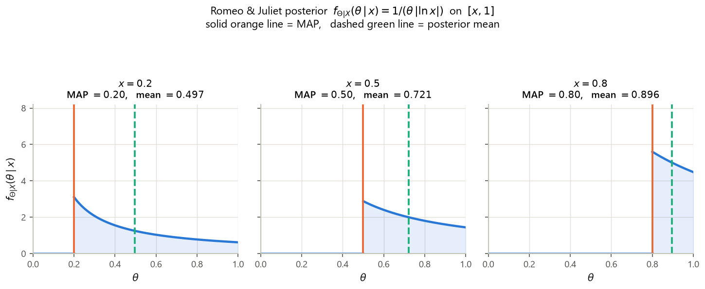
Solution
Prior precision $1/25=0.04$; data precision $1/9=0.111111$; posterior precision
$0.151111$ (F_P33_post_precision). So $v=1/0.151111=6.617647$
(F_P33_post_var), sd $=2.572479$ (F_P33_post_sd), and
$$m=\frac{70/25+76/9}{0.151111}=\frac{2.8+8.444444}{0.151111}=74.411765 $$
(F_P33_post_mean). The weight on the reading is $0.111111/0.151111=0.735294$
(F_P33_weight_on_x): the thermometer is more precise than the
prior, so the posterior mean sits about three-quarters of the way from 70 to 76.
Second update, using $(74.411765,\,6.617647)$ as the new prior: precision
$1/6.617647+1/9=0.151111+0.111111=0.262222$, so $v_2=3.813559$ (F_P33b_post_var,
sd $1.952834$ = F_P33b_post_sd) and
$$m_2=\frac{74.411765/6.617647+68/9}{0.262222}=71.694915 $$
(F_P33b_post_mean). Doing it in one shot with both readings gives precision
$0.04+2/9=0.262222$ and the same $m_2=71.694915$, $v_2=3.813559$ — verified to machine precision
(F_P33b_batch_check). Sequential updating is not an approximation.
Solution
$\Lambda$ continuous, $X$ continuous. Prior $f_\Lambda(\lambda)=1$ on $[1,2]$; likelihood
$f_{X\mid\Lambda}(0.4\mid\lambda)=\lambda e^{-0.4\lambda}$ for $\lambda>0$. The product is
$\lambda e^{-0.4\lambda}$ on $[1,2]$ and 0 elsewhere, so
$$f_{\Lambda\mid X}(\lambda\mid 0.4)=\frac{\lambda e^{-0.4\lambda}}{\int_1^2\lambda'e^{-0.4\lambda'}d\lambda'}
=\frac{\lambda e^{-0.4\lambda}}{0.810350},\qquad 1\le\lambda\le2 $$
(F_P32_Z). Heights: $0.827199$ at $\lambda=1$ (F_P32_post_at_1) and
$1.108976$ at $\lambda=2$ (F_P32_post_at_2) — the posterior increases
across the whole prior range, because a short observed lifetime favors a high failure rate. The
posterior mean is $1.523118$ (F_P32_post_mean). (The
denominator can also be done by parts: $\int\lambda e^{-a\lambda}d\lambda=-\frac{\lambda}{a}e^{-a\lambda}-\frac{1}{a^2}e^{-a\lambda}$.)
Solution
$c(\bar x)=\dfrac{n-1}{\bar x^{\,1-n}-1}=\dfrac{3}{0.4^{-3}-1}=\dfrac{3}{15.625-1}=\dfrac{3}{14.625}=0.205128$,
(F_P35_c), so $f_{\Theta\mid X}(\theta\mid x)=0.205128/\theta^{4}$ on $[0.4,1]$. Then
$$\mathbf{P}(\Theta>0.5\mid X=x)=\int_{0.5}^{1}\frac{0.205128}{\theta^{4}}\,d\theta
=0.205128\Big[\frac{-1}{3\theta^{3}}\Big]_{0.5}^{1}
=\frac{0.205128}{3}\big(8-1\big)=0.478632 $$
(F_P35_P_theta_gt_half; the posterior mean and MAP for this case are
F_P35_mean $=0.538462$ and F_P35_MAP $=0.4$).
Just under half — four dates with a 24-minute worst case still leave a coin-flip's worth of
probability that Juliet's true ceiling exceeds half an hour.
3.3 Point estimates: MAP versus conditional expectation
The posterior is the complete answer, and L21 slide 5 shows it in both flavors — a stem plot when $\Theta$ is discrete, a curve when it is continuous. But you often have to report one number: a decision, a dial setting, a headline. Two candidates dominate.
- The maximum a posteriori probability (MAP) estimate $\hat\theta_{\text{MAP}}$ is a value maximizing the posterior over $\theta$, ties broken arbitrarily: $$p_{\Theta\mid X}(\hat\theta_{\text{MAP}}\mid x)=\max_\theta p_{\Theta\mid X}(\theta\mid x) \quad\text{or}\quad f_{\Theta\mid X}(\hat\theta_{\text{MAP}}\mid x)=\max_\theta f_{\Theta\mid X}(\theta\mid x).$$ Equivalently — and this is how you always compute it — it maximizes the numerator $p_\Theta(\theta)p_{X\mid\Theta}(x\mid\theta)$, $p_\Theta(\theta)f_{X\mid\Theta}(x\mid\theta)$, $f_\Theta(\theta)p_{X\mid\Theta}(x\mid\theta)$, or $f_\Theta(\theta)f_{X\mid\Theta}(x\mid\theta)$, according to the case, since the denominator does not depend on $\theta$.
- The conditional expectation (LMS) estimate is $$\hat\theta_{\text{LMS}}=\mathbb{E}[\Theta\mid X=x]=\int\theta\,f_{\Theta\mid X}(\theta\mid x)\,d\theta \quad\text{or}\quad \sum_\theta\theta\,p_{\Theta\mid X}(\theta\mid x).$$
Proof (the slide's footnote, spelled out). Fix $x$. Whatever value $\theta_1=g(x)$ the rule reports, it is correct exactly when $\Theta=\theta_1$, so $$\mathbf{P}\big(g(X)=\Theta\mid X=x\big)=p_{\Theta\mid X}(\theta_1\mid x).$$ The MAP rule reports a maximizer, so its conditional probability of being correct is $\max_\theta p_{\Theta\mid X}(\theta\mid x)$, which is $\ge p_{\Theta\mid X}(\theta_1\mid x)$ by definition of maximum. Taking complements gives the conditional statement. For the unconditional one, let $I=1$ if $g$ is correct and $I=0$ otherwise, similarly $I_{\text{MAP}}$; then $\mathbb{E}[I\mid X]\le\mathbb{E}[I_{\text{MAP}}\mid X]$ pointwise, and the law of iterated expectations (G4 §1) gives $\mathbb{E}[I]\le\mathbb{E}[I_{\text{MAP}}]$, i.e. $\mathbf{P}(g(X)=\Theta)\le\mathbf{P}(g_{\text{MAP}}(X)=\Theta)$. $\blacksquare$
Solution
MAP. From Example 3.4(a), for $x\in[0,1]$, $$f_{\Theta\mid X}(\theta\mid x)=\frac{1}{\theta\,|\ln x|},\qquad x\le\theta\le1 .$$ Differentiate with respect to $\theta$ on the interior of the range: $$\frac{d}{d\theta}\Big(\frac{1}{\theta|\ln x|}\Big)=-\frac{1}{\theta^{2}|\ln x|}<0 \quad\text{for all }\theta>0,$$ so the density is strictly decreasing on $[x,1]$ and its maximum is attained at the left endpoint: $$\boxed{\;\hat\theta_{\text{MAP}}=x.\;}$$ There is no interior stationary point at all — setting the derivative to zero would have produced nothing, and a student who only ever differentiates would get stuck. The maximum is on the boundary.
Conditional expectation. $$\mathbb{E}[\Theta\mid X=x]=\int_x^{1}\theta\cdot\frac{1}{\theta\,|\ln x|}\,d\theta =\frac{1}{|\ln x|}\int_x^{1}1\,d\theta =\boxed{\;\frac{1-x}{|\ln x|}.\;}$$ The $\theta$ in the numerator cancels the $1/\theta$ in the density, which is why this integral is so painless.
Comparison. Since $|\ln x|=-\ln x<\frac{1-x}{x}$ for $0<x<1$ (a standard
logarithm inequality: $\ln u\le u-1$ with $u=1/x$ gives $-\ln x\le 1/x-1=(1-x)/x$), we get
$\frac{1-x}{|\ln x|}\ge x$: the LMS estimate always exceeds the MAP estimate. Numerically
(D_map_vs_lms_table):
| $x$ | MAP $=x$ | $\mathbb{E}[\Theta\mid X=x]$ | gap |
|---|---|---|---|
| 0.05 | 0.050000 | 0.317118 | 0.267118 |
| 0.10 | 0.100000 | 0.390865 | 0.290865 |
| 0.20 | 0.200000 | 0.497068 | 0.297068 |
| 0.30 | 0.300000 | 0.581408 | 0.281408 |
| 0.50 | 0.500000 | 0.721348 | 0.221348 |
| 0.70 | 0.700000 | 0.841102 | 0.141102 |
| 0.90 | 0.900000 | 0.949122 | 0.049122 |
| 0.99 | 0.990000 | 0.994992 | 0.004992 |
The gap is largest, $0.298426$ (D_max_gap_value), at $x=0.166414$
(D_max_gap_x), and closes at both ends. B&T call the MAP
estimate "optimistic": a small first-date lateness makes Romeo predict a small ceiling, because the
most probable single value of $\Theta$ really is the smallest one still consistent with the data.
The conditional expectation hedges, because the posterior has a long right tail that a mode ignores
entirely.
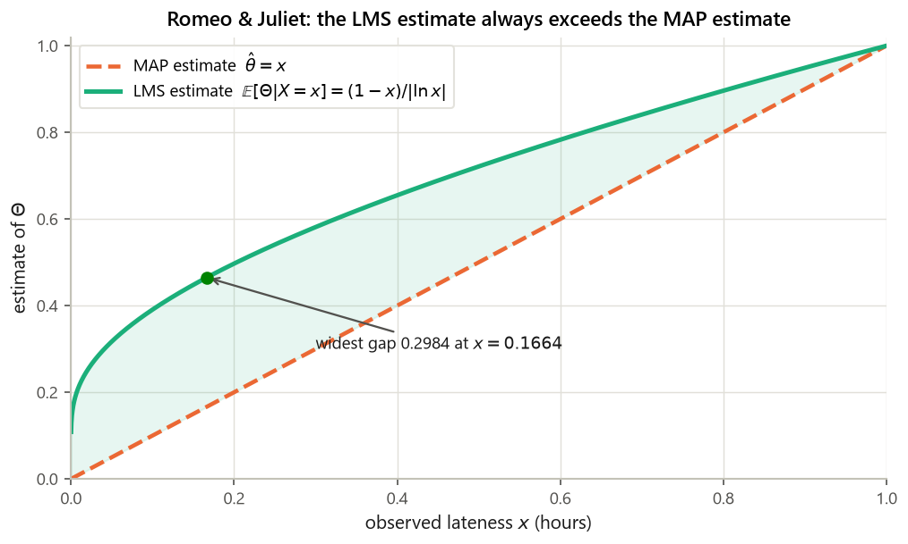
D_max_gap_value) at $x=0.166414$ (D_max_gap_x). Both curves run from 0 to 1, so with a lot of lateness the two estimators agree — the disagreement is a small-data phenomenon.Solution
MAP. Maximize the numerator $\theta^{k}(1-\theta)^{n-k}$ — no need for the Beta constant. Take logarithms (legitimate because $\ln$ is increasing, so it does not move the maximizer): $$h(\theta)=k\ln\theta+(n-k)\ln(1-\theta),\qquad h'(\theta)=\frac{k}{\theta}-\frac{n-k}{1-\theta}.$$ Set $h'(\theta)=0$: $$k(1-\theta)=(n-k)\theta\quad\Longrightarrow\quad k-k\theta=n\theta-k\theta \quad\Longrightarrow\quad \boxed{\;\hat\theta_{\text{MAP}}=\frac{k}{n}.\;}$$ This is the observed head frequency — the flat prior contributes nothing to the mode. (The stationary point is a maximum since $h''<0$ throughout $(0,1)$; for $k=0$ or $k=n$ the maximum moves to the boundary, $\hat\theta_{\text{MAP}}=0$ or 1.)
Conditional expectation. The posterior is Beta$(k+1,n-k+1)$, whose mean is $\alpha/(\alpha+\beta)$: $$\boxed{\;\mathbb{E}[\Theta\mid X=k]=\frac{k+1}{n+2}.\;}$$ (Directly: $\int_0^1\theta\cdot\theta^k(1-\theta)^{n-k}d\theta\big/\int_0^1\theta^k(1-\theta)^{n-k}d\theta =\frac{(k+1)!(n-k)!/(n+2)!}{k!(n-k)!/(n+1)!}=\frac{k+1}{n+2}$.)
Contrast. The two answers differ most when $n$ is tiny: $n=1$, $k=1$ gives MAP $=1$ but
mean $=2/3=0.666667$ (A_contrast_n1_k1); $n=2$, $k=2$ gives MAP $=1$, mean $=0.75$
(A_contrast_n2_k2); $n=4$, $k=3$ gives $0.75$ versus $0.666667$
(A_contrast_n4_k3); $n=10$, $k=7$ gives $0.7$ versus $0.666667$
(A_contrast_n10_k7); and for large $n$ they nearly coincide, since
$\frac{k+1}{n+2}\to\frac kn$. The MAP's willingness to answer "$\hat\theta=1$" after two heads —
declaring a two-headed coin on the strength of two tosses — is exactly the behavior the extra
$+1,+2$ in the posterior mean tempers.
When a single number lies
L21 slide 5 ends with the warning "Single answers can be misleading!" and draws a bimodal posterior next to a discrete one. Here is a concrete instance with numbers.
Solution
The two local maxima are at $\theta\approx 0.000296$ (E_MAP; density $0.599121$,
E_density_at_MAP) and $\theta\approx 4.000000$ (E_local_peak2; density
$0.182849$, E_density_at_peak2), so the global maximum — the MAP — is essentially
$\hat\theta_{\text{MAP}}=0$. By linearity of expectation for mixtures, the posterior mean is
$$\mathbb{E}[\Theta\mid X=x]=0.45\times 0+0.55\times 4=2.2 $$
(E_post_mean_formula, matched by quadrature as E_post_mean).
Now evaluate the posterior density at the posterior mean: it is $0.059362$
(E_density_at_mean), which is $10.1$ times smaller than the density at the MAP
(E_density_ratio_MAP_over_mean). Between the two humps the density has a valley at
$\theta=1.035570$ (E_valley_location). The posterior probability of landing within
$\pm0.5$ of the reported mean is only $0.061430$ (E_P_within_0p5_of_mean), while
within $\pm0.5$ of the MAP it is $0.407914$ (E_P_within_0p5_of_MAP).
Comment. The conditional expectation is a value the parameter is very unlikely to be near — it sits in the trough. The MAP is a genuinely likely value but discards the 55% of posterior probability sitting near 4, so as a summary it is equally dishonest. Both single numbers are defensible answers to precisely stated questions ("minimize squared error"; "name the single most likely value") and both are terrible descriptions of the posterior. Report the posterior, or at least report that it is bimodal.
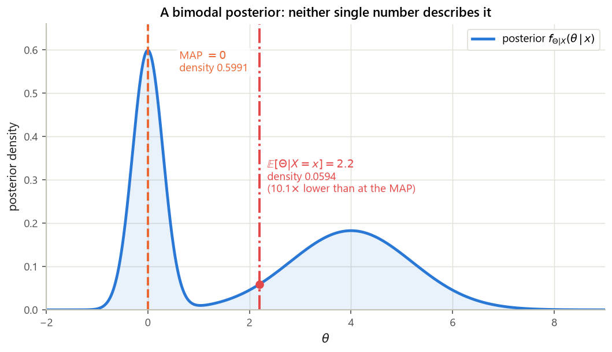
E_post_mean) lands in the valley (E_valley_location), where the density is $10.1\times$ lower than at the MAP (E_density_ratio_MAP_over_mean); the MAP at $0$ (E_MAP) ignores the 55% of probability near $4$.- Is $\Theta$ discrete with few values? Use MAP. It provably minimizes the probability of an incorrect decision, both conditionally on each $x$ and overall. Compute it by comparing the numerators $p_\Theta(\theta)p_{X\mid\Theta}(x\mid\theta)$ (or with $f_{X\mid\Theta}$) — never bother with the denominator.
- Is $\Theta$ continuous and is your loss squared error? Use $\mathbb{E}[\Theta\mid X=x]$; §4 proves it is optimal for that loss.
- Is $\Theta$ continuous and do you want "the most likely value"? Use MAP. Maximize $\ln\big(f_\Theta(\theta)f_{X\mid\Theta}(x\mid\theta)\big)$ — logs turn products into sums — by setting the derivative to zero, and then check the boundary of the support, which is where the maximum lives whenever the posterior is monotone (Example 3.5).
- Is the posterior normal, or symmetric and unimodal? Then the two estimates coincide and the choice is moot (B&T §8.2, p. 423). Example 3.3 and Example 3.1 are of this type.
- Is the posterior bimodal or badly skewed? Refuse to summarize. Report the posterior, a credible interval, or both modes (Example 3.7).
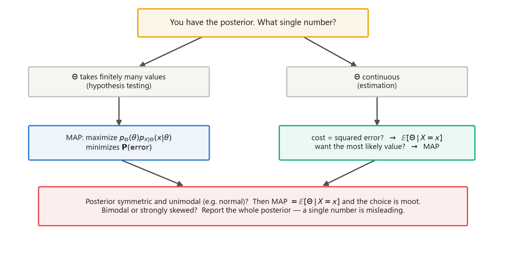
H_theta_MAP):
- in the logit coordinate $\varphi=\ln\frac{\theta}{1-\theta}$ the Jacobian is $\theta(1-\theta)$,
so you maximize $\theta^{8}(1-\theta)^{4}$ and land at $8/12=0.666667$
(
H_logit_MAP_back_in_theta); - in the coordinate $\varphi=\theta^{2}$ the Jacobian is $1/(2\sqrt\varphi)$, so you maximize
$\theta^{6}(1-\theta)^{3}$ and land at $6/9=0.666667$
(
H_square_MAP_back_in_theta); - in the coordinate $\varphi=1/\theta$ the Jacobian is $1/\varphi^{2}$, so you maximize
$\theta^{9}(1-\theta)^{3}$ and land at $9/12=0.75$
(
H_recip_MAP_back_in_theta).
H_MAPs_differ) — for the same
posterior, depending only on which coordinate you happened to write it in. The conditional
expectation has no such pathology in the
sense that $\mathbb{E}[g(\Theta)\mid X=x]$ is a single unambiguous number for each $g$; but note it
does not commute with $g$ either — for this posterior $\mathbb{E}[\Theta\mid x]=0.666667$
(H_post_mean_theta) while
$\mathbb{E}[\Theta^2\mid x]=0.461538\ne0.666667^2=0.444444$
(H_post_mean_theta_sq). Moral: say which parametrization you
are maximizing in, and do not read too much metaphysics into a mode.Solution
Maximize the numerator $\lambda e^{-0.4\lambda}$ over $\lambda\in[1,2]$. Setting the derivative
$e^{-0.4\lambda}(1-0.4\lambda)$ to zero gives the interior candidate $\lambda=1/0.4=2.5$
(F_P32_unconstrained_stationary_point) — which lies outside $[1,2]$. On
$[1,2]$ we have $1-0.4\lambda\ge1-0.8=0.2>0$, so the numerator is increasing throughout and the
maximum is at the right endpoint:
$$\hat\lambda_{\text{MAP}}=2 $$
(F_P32_MAP).
Here the MAP ($2$) exceeds the posterior mean ($1.523118$, F_P32_post_mean), the reverse of the Romeo–Juliet
ordering, because this posterior is skewed the other way. The lesson is the one from Example 3.5:
always check the endpoints of the support; the derivative-equals-zero recipe alone would have
produced the nonsense answer $2.5$, a rate the prior declares impossible.
Solution
By Example 3.2 the posterior is Beta$(k+1,n-k+1)=$ Beta$(4,1)$, i.e. $f_{\Theta\mid X}(\theta\mid 3)=4\theta^{3}$ on $[0,1]$. This is increasing, so the maximum is at the boundary: $\hat\theta_{\text{MAP}}=k/n=1$. The conditional expectation is $(k+1)/(n+2)=4/5=0.8$.
Report $0.8$. The MAP says "this coin never lands tails", a claim three tosses cannot support, and it is exactly the kind of over-commitment the Gotcha above warns about; moreover, if what you care about is the chance the next toss is heads, the correct quantity is $\mathbf{P}(X_{4}=1\mid X=3)=\mathbb{E}[\Theta\mid X=3]=0.8$ by the total expectation theorem (G4 §1) — the conditional expectation, not the mode, is what predicts the next toss.
Solution
(i) False. Data can widen the posterior. Take a prior concentrated near 0 and an observation strongly favoring a distant region: the posterior can straddle both, as in Example 3.7, whose posterior variance far exceeds that of the tight prior component. The general guarantee is about averages: $\mathbb{E}[\operatorname{var}(\Theta\mid X)]\le\operatorname{var}(\Theta)$ by the law of total variance (G4 §1) — on average the posterior is narrower, not always.
(ii) True, and it is the main computational saving of the MAP rule: the denominator is a function of $x$ only, so it cannot affect which $\theta$ maximizes (B&T §8.2, p. 421). You do need it if you want to report a posterior probability, a variance, or a conditional expectation.
(iii) True. A normal density is symmetric and unimodal about its mean, so its maximum is
at the mean; hence $\hat\theta_{\text{MAP}}=m=\mathbb{E}[\Theta\mid X=x]$. This is the case in
Example 3.3 (posterior mean $2.6$ = MAP; the Beta case's numerical mode check is
A_MAP_numeric) and Example 3.1 (posterior mean vector = MAP vector, which the compute
script confirms by direct numerical maximization, C_MAP_numeric, to within
$2.6\times10^{-9}$, C_MAP_matches_mean_maxerr).
- Setup. Prior $p_\Theta$ or $f_\Theta$; observation model $p_{X\mid\Theta}$ or $f_{X\mid\Theta}$; observed value $x$; answer = posterior $p_{\Theta\mid X}(\cdot\mid x)$ or $f_{\Theta\mid X}(\cdot\mid x)$ (L21 slides 2–3; B&T §8.1, p. 413).
- Four Bayes variants, chosen by (is $\Theta$ discrete?) $\times$ (is $X$ discrete?): posterior $=$ prior $\times$ likelihood $/$ (sum or integral of the same). Denominator is free of $\theta$ — drop it whenever you only need a shape or a maximizer (Fig. 3.2).
- Uniform prior + Binomial$(n,\theta)$ data $\Rightarrow$ posterior Beta$(k+1,n-k+1)$;
marginal $p_X(k)=1/(n+1)$; MAP $=k/n$; mean $=(k+1)/(n+2)$. For $n=10$, $k=7$: Beta$(8,4)$,
MAP $0.7$ (
A_MAP), mean $0.666667$ (A_post_mean), sd $0.130744$ (A_post_sd) (Example 3.2, Example 3.6; Fig. 3.3). - Normal prior + normal noise $\Rightarrow$ normal posterior with
precision $1/v=\sum_{i=0}^{n}1/\sigma_i^2$ and mean $m=v\sum_{i=0}^{n}x_i/\sigma_i^2$
(prior mean $=$ observation number 0). Conjugate and recursive; MAP $=$ mean. Example: prior
$\mathcal N(1,4)$, $\sigma^2=1$, $x=3$ $\Rightarrow$ $m=2.6$ (
B1_post_mean), $v=0.8$ (B1_post_var) (Example 3.3; widget). - Uniform prior + $\mathrm{U}[0,\Theta]$ data $\Rightarrow$ $f_{\Theta\mid X}(\theta\mid x)=1/(\theta|\ln x|)$ on $[x,1]$; with $n$ dates, $c(\bar x)/\theta^{n}$ on $[\bar x,1]$ with $c(\bar x)=(n-1)/(\bar x^{1-n}-1)$ and $\bar x=\max_i x_i$ (Example 3.4; Fig. 3.4).
- MAP. Maximize the numerator. Minimizes $\mathbf{P}(\text{error})$ when $\Theta$ is discrete — conditionally on each $x$ and overall. Check boundaries: for Romeo–Juliet the maximum is at the endpoint, $\hat\theta_{\text{MAP}}=x$ (Example 3.5). Not invariant under reparametrization.
- Conditional expectation. $\mathbb{E}[\Theta\mid X=x]$; for Romeo–Juliet
$(1-x)/|\ln x|$, always above the MAP, gap peaking at $0.298426$ (
D_max_gap_value) when $x=0.166414$ (D_max_gap_x) (Fig. 3.5). Optimal for squared error — proved in §4. - Do not over-summarize. On a bimodal posterior the mean can sit in a valley where the
density is $10\times$ lower than at the mode (
E_density_ratio_MAP_over_mean; Example 3.7; Fig. 3.6). When the posterior is normal or symmetric-unimodal the two estimates coincide and the worry evaporates (Fig. 3.7).
§4 Least mean squares and linear LMS estimation
Sources: L21 slides 6–8 (raster p02) · L22 slides 1–10 (raster p01–p02) · rec22 Problem 1(d)–(g) (the estimation parts; parts (a)–(c) are the posterior/MAP material of §3 and are re-derived here only as far as §4 needs them) · Bertsekas–Tsitsiklis §8.3–8.4 (B&T Example 8.11 is the lecture's uniform example; B&T Examples 8.2, 8.7, 8.12, 8.15 are rec22 P1; B&T Example 8.13 is the beta case; B&T Example 8.14 is the "uninformative observation" puzzle). Every number on this page is recomputed in computes/g6_s4.py (exact rational arithmetic where the answer is rational, scipy.integrate.quad for every integral, and an independent Monte-Carlo run for every mean squared error); every figure is generated by computes/g6_s4_figs.py.
Section 3 gave you the posterior $f_{\Theta\mid X}(\theta\mid x)$ — the complete answer to "what do the data say about $\Theta$?" — and one way of collapsing it to a single number, the MAP estimate. This section asks a different question, and gets a different answer. Suppose you must commit to one number $\hat\theta$ and you will be charged the squared distance $(\Theta-\hat\theta)^2$ between your guess and the truth. Which number minimizes your expected bill?
The answer is spectacularly clean, and it is a quantity you have known since G4 §1: the conditional expectation $\mathbb{E}[\Theta\mid X=x]$. That single fact is the whole of L22 slide 1. The rest of the lecture is (i) what the resulting error looks like, (ii) what to do when $\mathbb{E}[\Theta\mid X]$ is too hard to compute, which in practice is most of the time, and (iii) the remarkable fact that the "cheap" replacement — the best straight line through the joint distribution — needs only five numbers: two means, two variances, and one covariance.
4.1 The problem, and the baseline with no data at all
Start with the degenerate case: no observation at all. You must pick one constant $\hat\theta$ and you are charged $(\Theta-\hat\theta)^2$ on average.
Derivation, every step. Write $Z=\Theta-\hat\theta$; because $\hat\theta$ is a constant, $Z$ is a random variable with $\mathbb{E}[Z]=\mathbb{E}[\Theta]-\hat\theta$ and, since shifting by a constant does not change spread, $\operatorname{var}(Z)=\operatorname{var}(\Theta)$. Now use the identity $\mathbb{E}[Z^2]=\operatorname{var}(Z)+(\mathbb{E}[Z])^2$ (G2 §3, the definition of variance rearranged): $$\mathbb{E}\big[(\Theta-\hat\theta)^2\big]=\mathbb{E}[Z^2]=\operatorname{var}(Z)+(\mathbb{E}[Z])^2 =\operatorname{var}(\Theta)+\big(\mathbb{E}[\Theta]-\hat\theta\big)^2 .$$ The first term does not involve $\hat\theta$; the second is a square, hence $\ge 0$, and equals $0$ exactly when $\hat\theta=\mathbb{E}[\Theta]$. So that choice minimizes, and the minimum value is $\operatorname{var}(\Theta)$. $\blacksquare$
Equivalently by calculus: expand $\mathbb{E}[(\Theta-\hat\theta)^2]=\mathbb{E}[\Theta^2]-2\hat\theta\,\mathbb{E}[\Theta]+\hat\theta^2$, a parabola in $\hat\theta$ opening upward; set the derivative $-2\mathbb{E}[\Theta]+2\hat\theta$ to zero to get $\hat\theta=\mathbb{E}[\Theta]$, and note the second derivative is $2>0$, confirming a minimum.
Solution
(a) By the Property above the best constant is $\hat\theta=\mathbb{E}[\Theta]=1/\lambda=1/2=0.5$
(P41_best_const) and the error is
$\operatorname{var}(\Theta)=1/\lambda^2=1/4=0.25$ (P41_mse).
(b) Use the identity, not a fresh integral:
$$\mathbb{E}[(\Theta-1)^2]=\operatorname{var}(\Theta)+(\mathbb{E}[\Theta]-1)^2
=0.25+(0.5-1)^2=0.25+0.25=0.5$$
(P41_mse_at_1). Being off by $0.5$ in the location doubles the bill — the penalty is the
square of the displacement, added on top of the irreducible variance.
4.2 The LMS theorem: $\mathbb{E}[\Theta\mid X]$ is optimal
- Conditional form. For any fixed value $x$ of the observation, $\mathbb{E}\big[(\Theta-\hat\theta)^2\mid X=x\big]$ is minimized over all numbers $\hat\theta$ by $$\hat\theta=\mathbb{E}[\Theta\mid X=x],$$ and the minimum value is $\operatorname{var}(\Theta\mid X=x)$, the variance of the posterior.
- Unconditional form. Out of all estimators $g(\cdot)$, $$\mathbb{E}\big[(\Theta-g(X))^2\big]\ \ge\ \mathbb{E}\big[(\Theta-\mathbb{E}[\Theta\mid X])^2\big],$$ so $\hat\Theta=\mathbb{E}[\Theta\mid X]$ minimizes the mean squared error. Its value is $\mathbb{E}\big[\operatorname{var}(\Theta\mid X)\big]$.
The slides state both halves and prove neither: L21 slide 7 writes down the three-line chain (conditional inequality at a fixed $x$, then the same inequality with $x$ replaced by $X$, then the unconditional inequality) and boxes the conclusion in red, but flags the passage between the lines as a gap. Here is the whole argument.
Part 1, every step. Condition on the event $\{X=x\}$ and work inside that new universe. All of §4.1 is available there, because a conditional distribution is a distribution: it has a mean $\mathbb{E}[\Theta\mid X=x]$ and a variance $\operatorname{var}(\Theta\mid X=x)$, and the identity $\mathbb{E}[Z^2\mid X=x]=\operatorname{var}(Z\mid X=x)+(\mathbb{E}[Z\mid X=x])^2$ holds verbatim. With $Z=\Theta-\hat\theta$ and $\hat\theta$ a constant, $$\mathbb{E}\big[(\Theta-\hat\theta)^2\mid X=x\big] =\operatorname{var}(\Theta\mid X=x)+\big(\mathbb{E}[\Theta\mid X=x]-\hat\theta\big)^2 .$$ The first term is fixed once $x$ is known; the second is a square. It vanishes exactly when $\hat\theta=\mathbb{E}[\Theta\mid X=x]$, which is therefore the minimizer, with minimum value $\operatorname{var}(\Theta\mid X=x)$. $\blacksquare$
Part 2, every step. Let $g(\cdot)$ be any estimator. Fix $x$. Then $g(x)$ is a number, so Part 1 applies to it: $$\mathbb{E}\big[(\Theta-\mathbb{E}[\Theta\mid X=x])^2\mid X=x\big]\ \le\ \mathbb{E}\big[(\Theta-g(x))^2\mid X=x\big]\qquad\text{for every }x. \tag{$\ast$}$$ Both sides of $(\ast)$ are functions of $x$. Replace $x$ by the random variable $X$: now both sides are random variables, and $(\ast)$ says one is $\le$ the other for every outcome, i.e. pointwise on the sample space. Inequalities that hold pointwise survive taking expectations, so $$\mathbb{E}\Big[\mathbb{E}\big[(\Theta-\mathbb{E}[\Theta\mid X])^2\mid X\big]\Big]\ \le\ \mathbb{E}\Big[\mathbb{E}\big[(\Theta-g(X))^2\mid X\big]\Big].$$ Finally apply the law of iterated expectations (G4 §1) to each side — $\mathbb{E}\big[\mathbb{E}[Y\mid X]\big]=\mathbb{E}[Y]$ with $Y$ the respective squared error — to strip the outer conditioning: $$\mathbb{E}\big[(\Theta-\mathbb{E}[\Theta\mid X])^2\big]\ \le\ \mathbb{E}\big[(\Theta-g(X))^2\big].$$ That is the claim. Taking $g$ to be the optimal estimator and using the value from Part 1, the optimal mean squared error is $\mathbb{E}\big[\operatorname{var}(\Theta\mid X)\big]$. $\blacksquare$
Solution
(a) Marginals: $\mathbf{P}(X=0)=0.4+0.2=0.6$ (P42_pX0) and
$\mathbf{P}(X=1)=0.1+0.3=0.4$ (P42_pX1). For a $\{0,1\}$-valued $\Theta$ the conditional
mean equals the conditional probability of $1$:
$$\mathbb{E}[\Theta\mid X=0]=\mathbf{P}(\Theta=1\mid X=0)=\frac{0.2}{0.6}=\frac13=0.333333,\qquad
\mathbb{E}[\Theta\mid X=1]=\frac{0.3}{0.4}=0.75$$
(P42_E_given0, P42_E_given1).
(b) For a Bernoulli conditional distribution with parameter $q$ the variance is $q(1-q)$, so
$$\mathbb{E}[\operatorname{var}(\Theta\mid X)]=0.6\cdot\tfrac13\cdot\tfrac23+0.4\cdot0.75\cdot0.25
=0.133333+0.075=0.208333$$
(P42_mse_opt). The baseline is $\operatorname{var}(\Theta)=\mathbf{P}(\Theta=1)
\mathbf{P}(\Theta=0)=0.5\times0.5=0.25$ (P42_var_prior). The observation buys a
reduction of $0.0417$ — this $X$ is only mildly informative.
(c) Rounding gives $g(0)=0$, $g(1)=1$ (this is the MAP rule here). Its squared error is $1$
whenever the guess is wrong and $0$ otherwise, so its mean squared error equals the probability of
being wrong:
$$\mathbf{P}(X=0)\mathbf{P}(\Theta=1\mid X=0)+\mathbf{P}(X=1)\mathbf{P}(\Theta=0\mid X=1)
=0.6\cdot\tfrac13+0.4\cdot0.25=0.2+0.1=0.3$$
(P42_mse_round). That is worse than the no-data baseline $0.25$. Under squared
error a fractional estimate is not a failure of nerve; it is the optimum, and rounding it to a
"legal" value of $\Theta$ can cost you more than ignoring the data.
4.3 The lecture's uniform example, worked end to end
Solution
Step 1 — the two given densities. The prior is flat on an interval of length
$10-4=6$, so its height is the reciprocal:
$$f_\Theta(\theta)=\frac{1}{6}=0.166667\quad\text{for }4\le\theta\le10,\qquad 0\text{ otherwise}$$
(L22_prior_h; this is the $1/6$ printed on the slide's top figure). The conditional
density is flat on an interval of length $(\theta+1)-(\theta-1)=2$, so
$$f_{X\mid\Theta}(x\mid\theta)=\frac{1}{2}=0.5\quad\text{for }\theta-1\le x\le\theta+1$$
(L22_cond_h; the $1/2$ on the slide's middle figure).
Step 2 — the joint density and its support. By the multiplication rule for densities
(G3 §2), $f_{\Theta,X}(\theta,x)=f_\Theta(\theta)f_{X\mid\Theta}(x\mid\theta)$, so
$$f_{\Theta,X}(\theta,x)=\frac16\cdot\frac12=\frac{1}{12}=0.083333$$
(L22_joint_h) on the set where both factors are nonzero, namely
$$4\le\theta\le10\quad\text{and}\quad \theta-1\le x\le\theta+1 ,$$
and zero elsewhere. That set is the slanted parallelogram of the slide: two horizontal edges at
$\theta=4$ (spanning $x\in[3,5]$) and $\theta=10$ (spanning $x\in[9,11]$), joined by the two parallel
lines $x=\theta-1$ and $x=\theta+1$ of slope $1$. Its area is base $\times$ height
$=2\times 6=12$, and $12\times\frac{1}{12}=1$, confirming the density integrates to one.
Step 3 — the posterior is uniform on the vertical slice. Bayes' rule for densities (§3, B&T §8.1) gives $$f_{\Theta\mid X}(\theta\mid x)=\frac{f_{\Theta,X}(\theta,x)}{f_X(x)} .$$ The numerator is the constant $1/12$ for every $\theta$ in the slice $$S(x)=\{\theta:\ 4\le\theta\le10\ \text{and}\ \theta-1\le x\le\theta+1\} =[\max(4,\,x-1),\ \min(10,\,x+1)]$$ — the second description follows by rewriting $\theta-1\le x\le\theta+1$ as $x-1\le\theta\le x+1$ and intersecting with $[4,10]$. The denominator $f_X(x)$ does not depend on $\theta$. So the posterior is constant in $\theta$ on $S(x)$ and zero off it: the posterior is uniform on $S(x)$. This is the payoff of a constant joint density, and it is what the slide's picture is for; Figure 4.1 below draws it.
Step 4 — the marginal $f_X$, for completeness. Integrating the joint density over the
slice multiplies $1/12$ by the slice length $\ell(x)=\min(10,x+1)-\max(4,x-1)$:
$$f_X(x)=\frac{\ell(x)}{12}=\begin{cases}
\dfrac{x-3}{12}, & 3\le x<5\quad(\text{left edge, }S(x)=[4,x+1]),\\[6pt]
\dfrac{2}{12}=\dfrac16=0.166667, & 5\le x\le 9\quad(\text{interior, }S(x)=[x-1,x+1]),\\[6pt]
\dfrac{11-x}{12}, & 9<x\le 11\quad(\text{right edge, }S(x)=[x-1,10]).
\end{cases}$$
Checkpoints: $f_X(4)=1/12=0.083333$ (L22_fX_4), $f_X(7)=1/6=0.166667$
(L22_fX_7), $f_X(10)=1/12=0.083333$ (L22_fX_10), and numerical integration
over $[3,11]$ returns $1.000000$ (L22_fX_total).
Step 5 — the LMS estimate. The mean of a uniform distribution on $[\alpha,\beta]$ is the
midpoint $(\alpha+\beta)/2$, so
$$\boxed{\ \mathbb{E}[\Theta\mid X=x]=\frac{\max(4,x-1)+\min(10,x+1)}{2}\ }
=\begin{cases}
\dfrac{x+5}{2}, & 3\le x<5,\\[6pt]
x, & 5\le x\le 9,\\[6pt]
\dfrac{x+9}{2}, & 9<x\le 11.
\end{cases}$$
Numerically: $\mathbb{E}[\Theta\mid X=3.5]=(3.5+5)/2=4.25$ (L22_lms_3p5),
$\mathbb{E}[\Theta\mid X=4]=4.5$ (L22_lms_4),
$\mathbb{E}[\Theta\mid X=7]=7$ (L22_lms_7),
$\mathbb{E}[\Theta\mid X=10]=9.5$ (L22_lms_10).
Step 6 — the conditional mean squared error. By the theorem of §4.2 this is the posterior
variance, and a uniform distribution on an interval of length $\ell$ has variance $\ell^2/12$:
$$\operatorname{var}(\Theta\mid X=x)=\frac{\ell(x)^2}{12}=\begin{cases}
(x-3)^2/12, & 3\le x<5,\\
4/12=1/3=0.333333, & 5\le x\le 9,\\
(11-x)^2/12, & 9<x\le 11.
\end{cases}$$
So $\operatorname{var}(\Theta\mid X=4)=1/12=0.083333$ (L22_cvar_4),
$\operatorname{var}(\Theta\mid X=7)=1/3=0.333333$ (L22_cvar_mid),
$\operatorname{var}(\Theta\mid X=10)=1/12=0.083333$ (L22_cvar_10). The two extreme
observations are the most informative: $x=3$ forces $\Theta=4$ exactly and gives zero error, and
$x=11$ forces $\Theta=10$. This filling of the slide's blank lower frame is exactly the content of
B&T Example 8.11 and its Figure 8.9, and it is plotted as Figure 4.2 below.
Step 7 — the overall mean squared error. Average the conditional error against $f_X$:
$$\mathbb{E}\big[\operatorname{var}(\Theta\mid X)\big]=\int_3^{11}\operatorname{var}(\Theta\mid X=x)f_X(x)\,dx .$$
Split at $x=5$ and $x=9$. On the interior band the integrand is the constant
$\tfrac13\cdot\tfrac16=\tfrac1{18}$ over a stretch of length $4$, contributing
$\tfrac{4}{18}=\tfrac29=0.222222$ (L22_mse_mid). On the left edge band, substituting
$u=x-3$ so $u$ runs from $0$ to $2$,
$$\int_3^5\frac{(x-3)^2}{12}\cdot\frac{x-3}{12}\,dx=\int_0^2\frac{u^3}{144}\,du
=\frac{1}{144}\cdot\frac{2^4}{4}=\frac{4}{144}=\frac{1}{36}=0.027778$$
(L22_mse_edge), and the right edge band gives the same by the mirror symmetry
$x\mapsto 14-x$. Total:
$$\mathbb{E}\big[\operatorname{var}(\Theta\mid X)\big]=\frac{2}{9}+\frac{2}{36}=\frac{4}{18}+\frac{1}{18}
=\frac{5}{18}=0.277778$$
(L22_mse_lms, confirmed by quadrature and by a $4\times10^6$-sample simulation,
L22_mse_lms_mc $=0.277184$). Compare the no-data baseline
$\operatorname{var}(\Theta)=(10-4)^2/12=3$ (L22_prior_var): the observation cuts the
error by a factor of $10.8$.
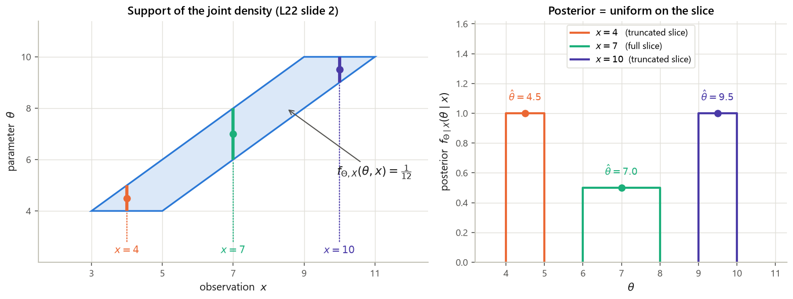
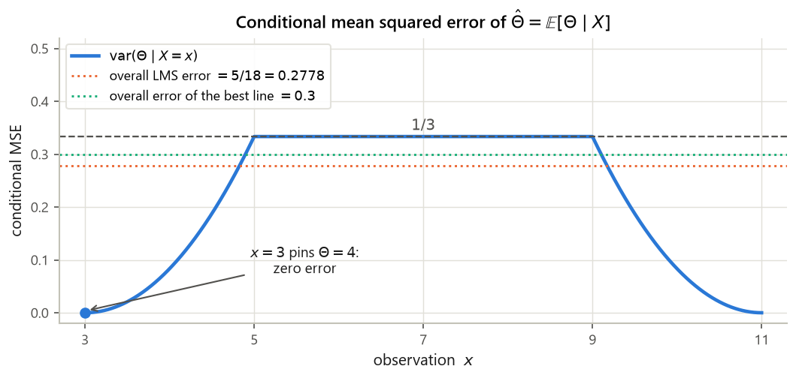
Solution
(a) The slice is $S(3.5)=[\max(4,2.5),\ \min(10,4.5)]=[4,4.5]$, of length $\ell=0.5$; the
posterior is uniform on it, with height $1/0.5=2$. Hence
$$\mathbb{E}[\Theta\mid X=3.5]=\frac{4+4.5}{2}=4.25,\qquad
\operatorname{var}(\Theta\mid X=3.5)=\frac{0.5^2}{12}=0.020833$$
(L22_lms_3p5, L22_cvar_3p5). This is one of the sharpest observations available: the conditional error is $16$ times smaller than
the interior value $1/3$.
(b) By the identity of §4.2, for any number $\hat\theta$,
$$\mathbb{E}\big[(\Theta-\hat\theta)^2\mid X=3.5\big]
=\operatorname{var}(\Theta\mid X=3.5)+\big(4.25-\hat\theta\big)^2
=0.020833+(4.25-3.5)^2=0.020833+0.5625=0.583333$$
(L22_naive_mse_3p5) — twenty-eight times the optimal error. The reason is that
$x=3.5$ is not a possible value of $\Theta$ at all: $\Theta\ge4$ always, so any estimate below $4$ is
known in advance to be wrong. Near the middle of the range the prior's boundaries are out of reach,
the slice is symmetric about $x$, and "report $x$" is exactly optimal — which is why the penalty
vanishes at $x=7$. For comparison, the best line of Example 4.2 reports
$0.9\times3.5+0.7=3.85$ (L22_lin_at_3p5) here: better than $3.5$, still below the
feasible floor of $4$.
4.4 Properties of the estimation error
- $\mathbb{E}[\tilde\Theta\mid X=x]=0$ for every $x$, and hence $\mathbb{E}[\tilde\Theta]=0$ (the error is unbiased, conditionally and unconditionally);
- orthogonality: $\mathbb{E}\big[\tilde\Theta\,h(X)\big]=0$ for every function $h$;
- $\operatorname{cov}(\tilde\Theta,\hat\Theta)=0$;
- variance decomposition: $\operatorname{var}(\Theta)=\operatorname{var}(\hat\Theta)+\operatorname{var}(\tilde\Theta)$, and the mean squared error is $\mathbb{E}[\tilde\Theta^2]=\operatorname{var}(\tilde\Theta) =\operatorname{var}(\Theta)-\operatorname{var}(\hat\Theta)$.
The slide lists all four with no proof. Each is two lines.
(1). Condition on $\{X=x\}$. Inside that universe $\hat\Theta$ is not random: it takes the known value $\mathbb{E}[\Theta\mid X=x]$. Therefore $$\mathbb{E}[\tilde\Theta\mid X=x]=\mathbb{E}[\hat\Theta-\Theta\mid X=x] =\underbrace{\mathbb{E}[\Theta\mid X=x]}_{\text{the constant }\hat\Theta}-\mathbb{E}[\Theta\mid X=x]=0,$$ using linearity of conditional expectation. Since this holds for every $x$, the random variable $\mathbb{E}[\tilde\Theta\mid X]$ is identically $0$; applying the law of iterated expectations (G4 §1), $$\mathbb{E}[\tilde\Theta]=\mathbb{E}\big[\mathbb{E}[\tilde\Theta\mid X]\big]=\mathbb{E}[0]=0 .\qquad\blacksquare$$
(2). Let $h$ be any function for which the expectation exists. Use iterated expectations again, and then the fact that $h(X)$ is a constant inside the conditional universe $\{X=x\}$ so it pulls out of the inner expectation: $$\mathbb{E}\big[\tilde\Theta\,h(X)\big] =\mathbb{E}\Big[\mathbb{E}\big[\tilde\Theta\,h(X)\mid X\big]\Big] =\mathbb{E}\Big[h(X)\,\underbrace{\mathbb{E}[\tilde\Theta\mid X]}_{=\,0\text{ by (1)}}\Big] =\mathbb{E}[0]=0 .\qquad\blacksquare$$
(3). By definition $\operatorname{cov}(\tilde\Theta,\hat\Theta) =\mathbb{E}[\tilde\Theta\hat\Theta]-\mathbb{E}[\tilde\Theta]\mathbb{E}[\hat\Theta]$. The second term vanishes because $\mathbb{E}[\tilde\Theta]=0$ by (1). The first term is the special case $h(X)=\mathbb{E}[\Theta\mid X]$ of (2) — legitimate precisely because $\hat\Theta$ is a function of $X$ — so it too is $0$. Hence $\operatorname{cov}(\tilde\Theta,\hat\Theta)=0$. $\blacksquare$
(4). Take variances in $\Theta=\hat\Theta-\tilde\Theta$. For any two random variables, $\operatorname{var}(U-V)=\operatorname{var}(U)+\operatorname{var}(V)-2\operatorname{cov}(U,V)$ (G3 §4), so $$\operatorname{var}(\Theta)=\operatorname{var}(\hat\Theta)+\operatorname{var}(\tilde\Theta) -2\underbrace{\operatorname{cov}(\hat\Theta,\tilde\Theta)}_{=\,0\text{ by (3)}} =\operatorname{var}(\hat\Theta)+\operatorname{var}(\tilde\Theta).$$ And because $\mathbb{E}[\tilde\Theta]=0$, the mean squared error $\mathbb{E}[\tilde\Theta^2]=\operatorname{var}(\tilde\Theta)+(\mathbb{E}[\tilde\Theta])^2 =\operatorname{var}(\tilde\Theta)$. Rearranging the decomposition, $\mathbb{E}[\tilde\Theta^2]=\operatorname{var}(\Theta)-\operatorname{var}(\hat\Theta)$. $\blacksquare$
Check on Example 4.1. $\operatorname{var}(\Theta)=3$ and
$\mathbb{E}[\tilde\Theta^2]=5/18=0.277778$, so the decomposition predicts
$\operatorname{var}(\hat\Theta)=3-5/18=49/18=2.722222$ (L22_var_hat) — the estimator
reproduces $90.7\%$ of the parameter's variability, and the leftover $9.3\%$ is irreducible.
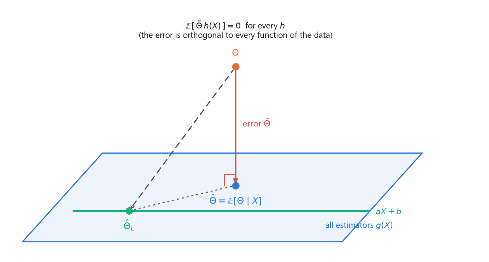
Solution
By property (4), $\mathbb{E}[\tilde\Theta^2]=\operatorname{var}(\Theta)$ if and only if $\operatorname{var}(\hat\Theta)=0$, i.e. the random variable $\hat\Theta=\mathbb{E}[\Theta\mid X]$ is almost surely constant; since $\mathbb{E}[\hat\Theta]=\mathbb{E}[\Theta]$ (iterated expectations), that constant must be $\mathbb{E}[\Theta]$. So we need $\mathbb{E}[\Theta\mid X=x]=\mathbb{E}[\Theta]$ for every $x$, without independence.
Take $\Theta$ uniform on $\{-1,0,1\}$ and $X=\Theta^2\in\{0,1\}$. Then
$\mathbb{E}[\Theta]=0$ and $\operatorname{var}(\Theta)=\mathbb{E}[\Theta^2]=\frac13(1+0+1)=\frac23
=0.666667$ (P44_var). Conditioning: given $X=0$ we know $\Theta=0$, so
$\mathbb{E}[\Theta\mid X=0]=0$; given $X=1$, $\Theta$ is equally likely $-1$ or $+1$, so
$\mathbb{E}[\Theta\mid X=1]=\frac12(-1)+\frac12(1)=0$. Both equal $\mathbb{E}[\Theta]=0$, so
$\hat\Theta\equiv 0$ and the mean squared error is the full $2/3$: the observation is useless
for estimating $\Theta$ under squared error.
But $\Theta$ and $X$ are wildly dependent: $\mathbf{P}(\Theta=0\mid X=0)=1$ while $\mathbf{P}(\Theta=0)=1/3$. The data pin down $|\Theta|$ perfectly and say nothing about its sign, and squared-error estimation of $\Theta$ only cares about the sign. Uninformative-for-a-purpose is much weaker than independent.
4.5 Linear LMS estimation
Everything above is exact and, in practice, often unusable. To compute $\mathbb{E}[\Theta\mid X]$ you need the entire joint distribution $f_{\Theta,X}$, and even when you have it the answer can be a function no one wants to implement. L22 slide 5 makes the pragmatic retreat: keep the squared-error criterion, but search only within the family of straight lines.
The slides quote both formulas and derive neither; slide 6 does not even define $\rho$. Here is the derivation, in the order the book takes it — $b$ first, then $a$.
Step 1 — minimize over $b$ with $a$ held fixed. Group the terms as $$\mathbb{E}\big[(\Theta-aX-b)^2\big]=\mathbb{E}\big[\big((\Theta-aX)-b\big)^2\big].$$ For fixed $a$ the quantity $Y=\Theta-aX$ is a perfectly ordinary random variable, and we are choosing a constant $b$ to estimate it under squared error. That is precisely the problem of §4.1, so the answer is $$b=\mathbb{E}[Y]=\mathbb{E}[\Theta-aX]=\mathbb{E}[\Theta]-a\,\mathbb{E}[X],$$ by linearity of expectation, and the minimum value is $$\min_b \mathbb{E}\big[(Y-b)^2\big]=\operatorname{var}(Y)=\operatorname{var}(\Theta-aX).$$
Step 2 — expand that variance. Using $\operatorname{var}(U+V)=\operatorname{var}(U)+\operatorname{var}(V)+2\operatorname{cov}(U,V)$ with $U=\Theta$, $V=-aX$, and the bilinearity rules $\operatorname{var}(-aX)=a^2\operatorname{var}(X)$ and $\operatorname{cov}(\Theta,-aX)=-a\operatorname{cov}(\Theta,X)$ (G3 §4): $$\operatorname{var}(\Theta-aX)=\sigma_\Theta^2+a^2\sigma_X^2-2a\operatorname{cov}(\Theta,X).$$ This is a quadratic in $a$ with positive leading coefficient $\sigma_X^2$, so it has a unique minimum.
Step 3 — minimize over $a$. Differentiate with respect to $a$ and set to zero: $$\frac{d}{da}\Big[\sigma_\Theta^2+a^2\sigma_X^2-2a\operatorname{cov}(\Theta,X)\Big] =2a\sigma_X^2-2\operatorname{cov}(\Theta,X)=0 \quad\Longrightarrow\quad a=\frac{\operatorname{cov}(\Theta,X)}{\sigma_X^2}=\frac{\operatorname{cov}(\Theta,X)}{\operatorname{var}(X)} .$$ The second derivative is $2\sigma_X^2>0$, so this is the minimum. Substituting $\operatorname{cov}(\Theta,X)=\rho\,\sigma_\Theta\sigma_X$ gives the alternative form $a=\rho\,\sigma_\Theta/\sigma_X$.
Step 4 — assemble the estimator. With those $a$ and $b$, $$\hat\Theta_L=aX+b=aX+\mathbb{E}[\Theta]-a\mathbb{E}[X] =\mathbb{E}[\Theta]+a\big(X-\mathbb{E}[X]\big) =\mathbb{E}[\Theta]+\frac{\operatorname{cov}(\Theta,X)}{\operatorname{var}(X)}\big(X-\mathbb{E}[X]\big),$$ which is the boxed formula of slide 5.
Step 5 — the error. Put $a=\rho\sigma_\Theta/\sigma_X$ back into the Step-2 expression and substitute $\operatorname{cov}(\Theta,X)=\rho\sigma_\Theta\sigma_X$ everywhere: $$\begin{aligned} \mathbb{E}\big[(\hat\Theta_L-\Theta)^2\big] &=\sigma_\Theta^2+a^2\sigma_X^2-2a\operatorname{cov}(\Theta,X)\\ &=\sigma_\Theta^2+\Big(\rho\frac{\sigma_\Theta}{\sigma_X}\Big)^2\sigma_X^2 -2\Big(\rho\frac{\sigma_\Theta}{\sigma_X}\Big)\big(\rho\,\sigma_\Theta\sigma_X\big)\\ &=\sigma_\Theta^2+\rho^2\sigma_\Theta^2-2\rho^2\sigma_\Theta^2\\ &=(1-\rho^2)\,\sigma_\Theta^2 . \end{aligned}$$ The middle line cancels $\sigma_X^2$ against $1/\sigma_X^2$ in the second term and $\sigma_X$ against $1/\sigma_X$ in the third — the whole point of writing $a$ through $\rho$. $\blacksquare$
Solution
The five numbers. Everything the formula needs:
- $\mathbb{E}[\Theta]=(4+10)/2=7$ (
L22_prior_mean) and $\sigma_\Theta^2=\operatorname{var}(\Theta)=(10-4)^2/12=36/12=3$ (L22_prior_var), the uniform mean and variance from G3 §1. - $\operatorname{var}(W)=(1-(-1))^2/12=4/12=1/3=0.333333$ (
L22_W_var) and $\mathbb{E}[W]=0$. - $\mathbb{E}[X]=\mathbb{E}[\Theta+W]=\mathbb{E}[\Theta]+\mathbb{E}[W]=7+0=7$
(
L22_EX), by linearity. - $\operatorname{var}(X)=\operatorname{var}(\Theta+W)=\operatorname{var}(\Theta)+\operatorname{var}(W)
=3+\tfrac13=\tfrac{10}{3}=3.333333$ (
L22_varX) — the cross term vanishes because $\Theta$ and $W$ are independent. - $\operatorname{cov}(\Theta,X)=\operatorname{cov}(\Theta,\Theta+W)
=\operatorname{cov}(\Theta,\Theta)+\operatorname{cov}(\Theta,W)
=\operatorname{var}(\Theta)+0=3$ (
L22_cov), again by independence.
The coefficients.
$$a=\frac{\operatorname{cov}(\Theta,X)}{\operatorname{var}(X)}=\frac{3}{10/3}=\frac{9}{10}=0.9,
\qquad b=\mathbb{E}[\Theta]-a\,\mathbb{E}[X]=7-0.9\times 7=7-6.3=0.7$$
(L22_a, L22_b), so
$$\hat\Theta_L=0.9\,X+0.7 .$$
The error.
$$\rho^2=\frac{\operatorname{cov}(\Theta,X)^2}{\sigma_\Theta^2\sigma_X^2}
=\frac{3^2}{3\times 10/3}=\frac{9}{10}=0.9,\qquad \rho=0.948683$$
(L22_rho2, L22_rho), hence
$$\mathbb{E}\big[(\hat\Theta_L-\Theta)^2\big]=(1-0.9)\times 3=0.3$$
(L22_mse_lin; simulation gives $0.299972$, L22_mse_lin_mc).
The comparison. The exact LMS estimator achieves $5/18=0.277778$; the best line achieves
$0.3$. The excess is $0.3-5/18=1/45=0.022222$ (L22_mse_gap) — the line is $8\%$ worse,
a small price for an estimator that needed five numbers instead of a full posterior analysis. Where
does the loss come from? Only near the ends: the two agree at $x=7$ ($7$ versus $7$), but at $x=4$
the line says $4.3$ while the truth says $4.5$, and at $x=10$ the line says $9.7$ against $9.5$
(L22_lin_at_4, L22_lin_at_7, L22_lin_at_10). The largest
discrepancy is $0.6$, at the endpoint $x=11$ (L22_maxgap,
L22_maxgap_at), where the line predicts $10.6$ for a parameter that cannot exceed
$10$.
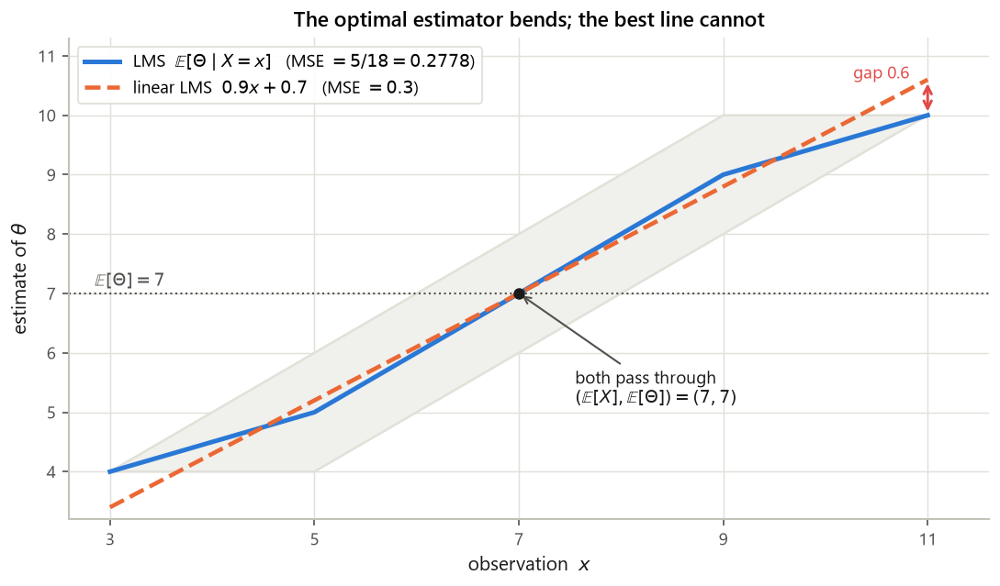
When is the line exact?
This is the reason linear estimation is not merely a shortcut but the natural language of an entire class of models. Note the second half of the statement: in the normal case the conditional variance does not depend on $x$ at all, so the conditional-MSE plot of Fig. 4.2 would be flat.
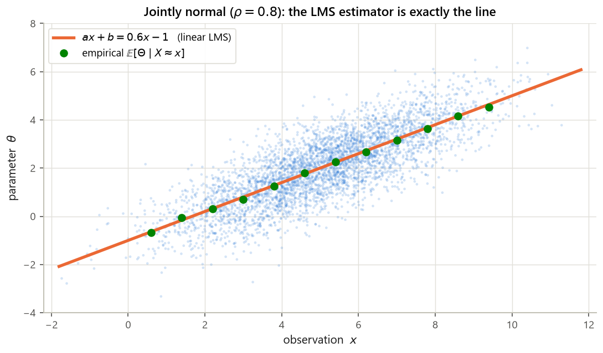
NORM_a, NORM_b, NORM_mse; simulation $0.809999$, NORM_mse_mc).Widget: how far apart can the curve and the line get?
Solution
(a) The five numbers, exactly as in Example 4.2:
$\mathbb{E}[\Theta]=5$, $\sigma_\Theta^2=4$, $\mathbb{E}[X]=5+0=5$,
$\operatorname{var}(X)=4+1=5$, $\operatorname{cov}(\Theta,X)=\operatorname{var}(\Theta)=4$. Hence
$$a=\frac{4}{5}=0.8,\qquad b=5-0.8\times5=1,\qquad
\hat\Theta_L=0.8X+1 .$$
(P45_a, P45_b.)
Also $\rho^2=\dfrac{4^2}{4\times5}=\dfrac{16}{20}=0.8$ (P45_rho2), so the error is
$(1-0.8)\times4=0.8$ (P45_mse) against a baseline of $4$ — the observation removes
$80\%$ of the variance.
(b) $\hat\theta=0.8\times7+1=6.6$ (P45_est_at_7).
(c) Because $X$ is a noisy read-out and the prior still carries information. The estimate sits $1.6$ above the prior mean $5$ while the observation sits $2$ above it: the estimator shrinks the observation back toward the prior by the factor $a=\sigma_\Theta^2/(\sigma_\Theta^2+\sigma_W^2)=4/5$, which is the fraction of the observation's variability that is genuine signal rather than noise. Reporting $x$ itself would be optimal only if the noise variance were $0$.
Solution
By the Cauchy–Schwarz inequality (G3 §4) $|\rho|\le1$, so $0\le\rho^2\le1$ and hence $0\le1-\rho^2\le1$; multiplying by $\sigma_\Theta^2\ge0$ preserves the inequalities.
Upper bound attained when $\rho=0$: then $a=0$, the estimator is the constant $\hat\Theta_L=\mathbb{E}[\Theta]$, and the error is the no-data baseline $\sigma_\Theta^2$ of §4.1. Lower bound attained when $|\rho|=1$, which by the equality case of Cauchy–Schwarz happens exactly when $\Theta=aX+b$ for some constants — the relationship is deterministic and affine, and the estimator is exact with zero error. A useful sanity check: the linear LMS error can never exceed the no-data error, because the constant estimator is itself a member of the family $aX+b$ (take $a=0$).
4.6 Several observations, and choosing what to feed the estimator
L21 slide 8 already posed this case and stopped: with several observations the best estimator is $\mathbb{E}[\Theta\mid X_1,\ldots,X_n]$, but it "can be hard to compute/implement — involves multi-dimensional integrals, etc." That is the whole motivation for going linear here. L22 slide 7 states the general problem — estimators $\hat\Theta=a_1X_1+\cdots+a_nX_n+b$, minimize $\mathbb{E}\big[(a_1X_1+\cdots+a_nX_n+b-\Theta)^2\big]$, "set derivatives to zero, linear system in $b$ and the $a_i$" — without writing the system down. Here it is.
The normal equations. Let $J(a_1,\ldots,a_n,b)=\mathbb{E}[e^2]$ with the residual $e=\sum_i a_iX_i+b-\Theta$. Differentiating under the expectation: $$\frac{\partial J}{\partial b}=2\,\mathbb{E}[e]=0,\qquad \frac{\partial J}{\partial a_j}=2\,\mathbb{E}[e\,X_j]=0\quad (j=1,\ldots,n).$$ The first says the residual has mean zero, giving $b=\mathbb{E}[\Theta]-\sum_i a_i\mathbb{E}[X_i]$. Substituting that into the second and using $\mathbb{E}[eX_j]=\operatorname{cov}(e,X_j)$ (valid because $\mathbb{E}[e]=0$) turns them into $$\sum_{i=1}^{n}a_i\operatorname{cov}(X_i,X_j)=\operatorname{cov}(\Theta,X_j),\qquad j=1,\ldots,n,$$ an $n\times n$ linear system in $a_1,\ldots,a_n$ whose coefficients are covariances and nothing else. This is slide 7's "only means, variances, covariances matter", made explicit — and note that the equations $\mathbb{E}[e]=0$, $\mathbb{E}[eX_j]=0$ are exactly the orthogonality property of §4.4 restricted to the functions $h(X)=1$ and $h(X)=X_j$, which is all the linear family can "see".
Solution
Step 1 — reduce to a clean minimization. Apply the $b$-first argument of §4.5: for any fixed $a_1,\ldots,a_n$ the best $b$ is $\mathbb{E}[\Theta-\sum a_iX_i]=\mu-\mu\sum_i a_i$, since $\mathbb{E}[X_i]=\mu+0=\mu$ for every $i$. With that $b$, the residual is $$\sum_i a_iX_i+b-\Theta=\sum_i a_i(X_i-\mu)-(\Theta-\mu) =\sum_i a_i\big[(\Theta-\mu)+W_i\big]-(\Theta-\mu) =\Big(\sum_i a_i-1\Big)(\Theta-\mu)+\sum_i a_iW_i .$$ Step 2 — its mean square. The $n+1$ random variables $\Theta-\mu,W_1,\ldots,W_n$ are independent with mean zero, so all cross terms vanish and the variances add: $$J(a)=\Big(\sum_i a_i-1\Big)^2\sigma_0^2+\sum_{i=1}^{n}a_i^2\sigma_i^2 .$$ Step 3 — set the derivatives to zero. For each $j$, $$\frac{\partial J}{\partial a_j}=2\Big(\sum_i a_i-1\Big)\sigma_0^2+2a_j\sigma_j^2=0 \quad\Longrightarrow\quad a_j\sigma_j^2=-\Big(\sum_i a_i-1\Big)\sigma_0^2 .$$ The right-hand side does not depend on $j$. Call it $\kappa$; then $$a_j=\frac{\kappa}{\sigma_j^2}\quad\text{for every }j .$$ Step 4 — solve for $\kappa$. Summing, $\sum_i a_i=\kappa\sum_{i=1}^n 1/\sigma_i^2$. Feed that back into the definition $\kappa=\big(1-\sum_i a_i\big)\sigma_0^2$: $$\frac{\kappa}{\sigma_0^2}=1-\kappa\sum_{i=1}^{n}\frac{1}{\sigma_i^2} \quad\Longrightarrow\quad \kappa\Big(\frac{1}{\sigma_0^2}+\sum_{i=1}^{n}\frac{1}{\sigma_i^2}\Big)=1 \quad\Longrightarrow\quad \kappa=\frac{1}{S},\qquad S:=\sum_{i=0}^{n}\frac{1}{\sigma_i^2}.$$ Step 5 — read off the estimator. $a_j=(1/\sigma_j^2)/S$, and $$b=\mu\Big(1-\sum_i a_i\Big)=\mu\cdot\frac{\kappa}{\sigma_0^2}=\frac{\mu/\sigma_0^2}{S},$$ so $$\hat\Theta_L=b+\sum_{j=1}^{n}a_jX_j =\frac{\mu/\sigma_0^2+\sum_{j=1}^{n}X_j/\sigma_j^2}{\sum_{i=0}^{n}1/\sigma_i^2},$$ exactly slide 8, including the detail that the numerator sum starts at $i=1$ while the denominator sum starts at $i=0$.
Step 6 — the error. Substitute $a_j=\kappa/\sigma_j^2$ and $\sum_i a_i-1=-\kappa/\sigma_0^2$ into $J$: $$J=\frac{\kappa^2}{\sigma_0^4}\sigma_0^2+\sum_{j=1}^{n}\frac{\kappa^2}{\sigma_j^4}\sigma_j^2 =\kappa^2\Big(\frac{1}{\sigma_0^2}+\sum_{j=1}^{n}\frac{1}{\sigma_j^2}\Big) =\kappa^2 S=\frac{S}{S^2}=\frac{1}{S}.$$ So $$\mathbb{E}\big[(\hat\Theta_L-\Theta)^2\big]=\frac{1}{\sum_{i=0}^{n}1/\sigma_i^{2}} .$$
Numerical check. Take $\mu=5$, $\sigma_0=2$, three sensors with $\sigma_1=1$,
$\sigma_2=2$, $\sigma_3=3$, and readings $x=(6,4,9)$. Then
$S=\tfrac14+1+\tfrac14+\tfrac19=1.611111$ (MO_prec), the numerator is
$\tfrac54+6+1+1=9.25$ (MO_num), so
$$\hat\theta_L=\frac{9.25}{1.611111}=5.741379,\qquad
\text{MSE}=\frac{1}{1.611111}=0.620690$$
(MO_est, MO_mse).
The weights are $0.620690$ on $x_1$, $0.155172$ on $x_2$, $0.068966$ on $x_3$ and $0.155172$ on the
prior mean $\mu$ (MO_w1–MO_w0): the sharpest sensor gets four times the
weight of the middling one and nine times that of the worst, and it alone outweighs everything else
combined. Solving the general normal equations of this subsection numerically with
$\operatorname{cov}(X_i,X_j)=\sigma_0^2+\delta_{ij}\sigma_i^2$ and
$\operatorname{cov}(\Theta,X_j)=\sigma_0^2$ reproduces both numbers to machine precision
(MO_est_check, MO_mse_check).
Choosing the regressors (L22 slide 9)
Why the first half holds (the slide asserts it with no justification). The map $x\mapsto x^3$ is a strictly increasing bijection of $\mathbb{R}$, with inverse the cube root. Therefore the events $\{X=x\}$ and $\{X^3=x^3\}$ are the same event: knowing one number tells you the other exactly. Conditional expectation depends only on the conditioning event, so $\mathbb{E}[\Theta\mid X=x]=\mathbb{E}[\Theta\mid X^3=x^3]$ for every $x$, i.e. the two conditional expectations are the same random variable. Nothing was lost or gained by relabelling the data.
Why the second half holds. A linear estimator is not allowed to relabel. The family
$\{aX+b\}$ and the family $\{aX^3+b\}$ are different sets of functions, and there is no reason the
best member of one should equal the best member of the other. Concretely, take $X$ uniform on
$[-1,1]$ and $\Theta=X^3+N$ with $N$ independent, mean $0$, variance $\sigma^2=0.01$. Then
$\operatorname{var}(\Theta)=\mathbb{E}[X^6]+\sigma^2=\tfrac17+0.01=0.152857$
(CUBE_varTheta), while
$$\operatorname{cov}(\Theta,X)=\mathbb{E}[X^4]=\tfrac15=0.2,\qquad
\operatorname{cov}(\Theta,X^3)=\mathbb{E}[X^6]=\tfrac17=0.142857$$
(CUBE_cov_X, CUBE_cov_X3; all odd moments of a symmetric $X$ vanish, so the $\mathbb{E}[\Theta]\mathbb{E}[\cdot]$ terms drop
out). Using $\operatorname{var}(X)=\mathbb{E}[X^2]=\tfrac13$ and
$\operatorname{var}(X^3)=\mathbb{E}[X^6]=\tfrac17$:
$$\text{MSE}(aX+b)=0.152857-\frac{(1/5)^2}{1/3}=0.032857,\qquad
\text{MSE}(aX^3+b)=0.152857-\frac{(1/7)^2}{1/7}=0.01$$
(CUBE_mse_linX, CUBE_mse_linX3). The cube regressor is exact (its error equals the irreducible noise $\sigma^2=0.01$, with
$a=1$, CUBE_a_X3) while the raw regressor is more than three times worse, with
$a=(1/5)/(1/3)=0.6$ (CUBE_a_X).
- No data? Report $\mathbb{E}[\Theta]$; the error is $\operatorname{var}(\Theta)$ (§4.1).
- Can you get the posterior? If the full joint law is available and $\mathbb{E}[\Theta\mid X=x]$ is computable, report it. This is optimal, and the error is $\operatorname{var}(\Theta\mid X=x)$ conditionally, $\mathbb{E}[\operatorname{var}(\Theta\mid X)]$ overall (§4.2). Do not integrate blindly first: identify the posterior family (uniform on a slice, beta, normal) and quote its mean.
- Jointly normal? Then step 2 and step 4 give the same answer; do the easy one (§4.5).
- Otherwise go linear. Collect the five numbers $\mathbb{E}[\Theta]$, $\mathbb{E}[X]$, $\operatorname{var}(\Theta)$, $\operatorname{var}(X)$, $\operatorname{cov}(\Theta,X)$ — the law of total variance and iterated expectations (G4 §1) usually get them without the joint density — then $$a=\frac{\operatorname{cov}(\Theta,X)}{\operatorname{var}(X)},\quad b=\mathbb{E}[\Theta]-a\mathbb{E}[X],\quad \text{MSE}=(1-\rho^2)\sigma_\Theta^2 .$$
- Several observations? Solve $\sum_i a_i\operatorname{cov}(X_i,X_j)=\operatorname{cov}(\Theta,X_j)$ for $j=1,\ldots,n$, then $b=\mathbb{E}[\Theta]-\sum_ia_i\mathbb{E}[X_i]$. For $X_i=\Theta+W_i$ with independent noises, skip the algebra and use the precision-weighted average of Example 4.3.
- Error still too large? Add transformed observations $X^2,X^3,\ldots$ and repeat step 5 (§4.6). Sanity-check the answer against the range of $\Theta$ — a line can leave it.
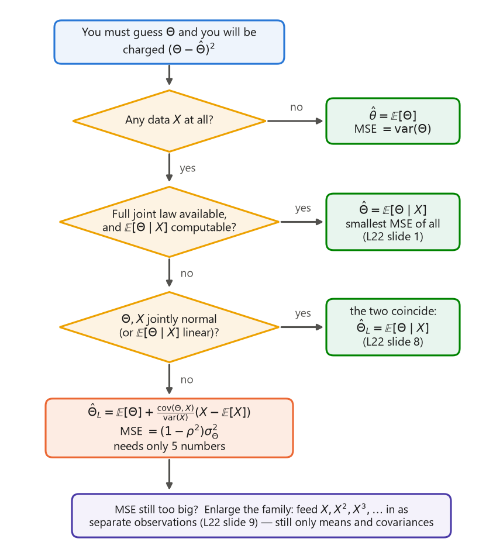
Solution
With one sensor, $S_1=\frac14+1=1.25$ and the error is $1/1.25=0.8$. With both, $S_2=\frac14+1+\frac14=1.5$ and the error is $1/1.5=0.666667$ — a reduction of $0.133333$, i.e. $16.7\%$. The new sensor's weight is $(1/4)/1.5=0.166667$, versus $1/1.5=0.666667$ for the sharp sensor and $0.166667$ for the prior mean. A free measurement is always worth taking (precisions only add), but one four times noisier than an existing one moves the answer very little.
Solution
(a) $\Theta$ is a function of $X$, so $\mathbb{E}[\Theta\mid X]=X^2=\Theta$: the estimator is exact and the mean squared error is $0$.
(b) $\mathbb{E}[X]=0$ and $\operatorname{cov}(\Theta,X)=\mathbb{E}[X^3]-\mathbb{E}[X^2]\mathbb{E}[X]
=0-0=0$, because all odd moments of a symmetric distribution vanish. So $a=0$, $b=\mathbb{E}[\Theta]
=\mathbb{E}[X^2]=1/3$, and the estimator is the constant $1/3$ — the data are discarded. Its error is
the full $\operatorname{var}(\Theta)=\mathbb{E}[X^4]-(\mathbb{E}[X^2])^2=\frac15-\frac19
=\frac{4}{45}=0.088889$ (WID_gap). This is the widget's $c=0$ setting with
$\sigma=0$.
(c) With the observation $Y=X^2$ we have $\Theta=Y$ exactly, so $a=1$, $b=0$ and the error is $0$: the best linear estimator based on the right transform is the optimal estimator. Nothing about the model changed — only the family we searched.
4.7 Recitation 22: Romeo and Juliet, all seven parts
Solution
The official rec22 solution document contains no worked answers at all — it lists only the textbook cross-references (Examples 8.2, 8.7, 8.12, 8.15). Everything below fills that gap. Parts (a)–(c) are the posterior/MAP material of §3 and are included because (d)–(g) cannot be stated without them.
(a) The posterior after one observation. The prior is
$f_\Theta(\theta)=1$ for $0\le\theta\le1$ (uniform on an interval of length $1$). The observation
model is
$$f_{X\mid\Theta}(x\mid\theta)=\frac{1}{\theta}\quad\text{for }0\le x\le\theta .$$
By Bayes' rule for densities,
$$f_{\Theta\mid X}(\theta\mid x)=\frac{f_\Theta(\theta)f_{X\mid\Theta}(x\mid\theta)}
{\int_0^1 f_\Theta(\theta')f_{X\mid\Theta}(x\mid\theta')\,d\theta'} .$$
The product $f_\Theta(\theta)f_{X\mid\Theta}(x\mid\theta)=1/\theta$ is nonzero exactly when
$0\le x\le\theta\le1$ — a lateness of $x$ is impossible unless $\theta$ is at least $x$, so
the observation truncates the prior from below. The denominator is therefore
$$f_X(x)=\int_x^1\frac{1}{\theta'}\,d\theta'=\big[\ln\theta'\big]_x^1=\ln 1-\ln x=-\ln x=\ln(1/x)
=|\ln x|,$$
using $0<x<1$ so $\ln x<0$. Hence
$$\boxed{\ f_{\Theta\mid X}(\theta\mid x)=\frac{1}{\theta\,|\ln x|}\quad\text{for }x\le\theta\le1\ }$$
and $0$ otherwise (numerically verified to integrate to $1$ at $x=0.2,0.5,0.8$). Incidentally
$f_X(x)=\ln(1/x)$ is the marginal density of the lateness, which we need in part (g)
(RJ_fX_check confirms it integrates to $1$).
(b) The posterior after $n$ observations. Given $\Theta=\theta$ the $X_i$ are
conditionally independent, so the likelihood is the product
$$f_{X\mid\Theta}(x_1,\ldots,x_n\mid\theta)=\prod_{i=1}^{n}\frac{1}{\theta}=\frac{1}{\theta^n},$$
valid when every $x_i$ lies in $[0,\theta]$, i.e. when $\theta\ge\bar x:=\max\{x_1,\ldots,x_n\}$.
Only the maximum matters — it is a sufficient statistic. Multiplying by the flat prior and
normalizing,
$$f_{\Theta\mid X}(\theta\mid x)=\frac{c(\bar x)}{\theta^{\,n}}\quad\text{for }\bar x\le\theta\le1,
\qquad
c(\bar x)=\left(\int_{\bar x}^{1}\frac{d\theta}{\theta^{\,n}}\right)^{-1}
=\frac{n-1}{\bar x^{\,1-n}-1}\ \ (n\ge2),$$
with $c(\bar x)=1/|\ln\bar x|$ when $n=1$. (The integral is
$\int_{\bar x}^1\theta^{-n}d\theta=\frac{\bar x^{1-n}-1}{n-1}$ for $n\ne1$.) Checks at $\bar x=0.4$:
$c=1.091357$ for $n=1$, $c=0.666667$ for $n=2$, $c=0.105090$ for $n=5$
(RJ_c_n1_xbar04, RJ_c_n2_xbar04, RJ_c_n5_xbar04). More data
concentrate the posterior near $\bar x$: the corresponding LMS estimates
$\mathbb{E}[\Theta\mid X=x]$ fall from $0.654814$ ($n=1$) to $0.610860$ ($n=2$) to $0.512315$
($n=5$) (RJ_lmsn_n1_xbar04, RJ_lmsn_n2_xbar04,
RJ_lmsn_n5_xbar04), converging down toward $\bar x=0.4$ itself.
(c) The MAP estimate. On its support $[x,1]$ the posterior $1/(\theta|\ln x|)$ is strictly decreasing in $\theta$ (the derivative $-1/(\theta^2|\ln x|)$ is negative). A decreasing function on a closed interval is maximized at the left endpoint, so $$\hat\theta_{\text{MAP}}=x .$$ For $n$ observations the same argument on $[\bar x,1]$ with $1/\theta^n$ gives $\hat\theta_{\text{MAP}}=\bar x=\max_i x_i$. Note this is an optimistic estimate: it assumes Juliet can never be later than she has already been.
(d) The LMS estimate. By §4.2 it is the posterior mean:
$$\mathbb{E}[\Theta\mid X=x]=\int_x^1\theta\cdot\frac{1}{\theta\,|\ln x|}\,d\theta
=\frac{1}{|\ln x|}\int_x^1 d\theta=\frac{1-x}{|\ln x|}.$$
The $\theta$ in the numerator cancels the $\theta$ in the posterior, which is why the answer is so
simple. Values: $0.390865$ at $x=0.1$, $0.541011$ at $x=0.25$, $0.721348$ at $x=0.5$, $0.869015$ at
$x=0.75$, $0.949122$ at $x=0.9$ (RJ_lms_x01 … RJ_lms_x09). The LMS estimate
always exceeds the MAP estimate $x$ — the posterior's mass lies to the right of its peak — which is
the sense in which MAP is "optimistic" and LMS is not.
(e) Conditional mean squared errors of MAP and LMS. Start with the general expansion, valid for any number $\hat\theta$: $$\mathbb{E}\big[(\hat\theta-\Theta)^2\mid X=x\big] =\hat\theta^2-2\hat\theta\,\mathbb{E}[\Theta\mid X=x]+\mathbb{E}[\Theta^2\mid X=x].$$ The last piece is a second posterior moment: $$\mathbb{E}[\Theta^2\mid X=x]=\int_x^1\theta^2\cdot\frac{1}{\theta|\ln x|}\,d\theta =\frac{1}{|\ln x|}\int_x^1\theta\,d\theta =\frac{1}{|\ln x|}\cdot\frac{1-x^2}{2}=\frac{1-x^2}{2|\ln x|}.$$ MAP ($\hat\theta=x$): $$\mathbb{E}\big[(x-\Theta)^2\mid X=x\big]=x^2-\frac{2x(1-x)}{|\ln x|}+\frac{1-x^2}{2|\ln x|}.$$ LMS ($\hat\theta=\mathbb{E}[\Theta\mid X=x]$): the general expansion collapses to the posterior variance, $$\operatorname{var}(\Theta\mid X=x)=\frac{1-x^2}{2|\ln x|}-\left(\frac{1-x}{|\ln x|}\right)^{2},$$ as §4.2 promised. Side by side:
| $x$ | MAP $\hat\theta=x$ | LMS $\hat\theta$ | cond. MSE of MAP | cond. MSE of LMS |
|---|---|---|---|---|
| $0.10$ | $0.100000$ | $0.390865$ | $0.146803$ | $0.062200$ |
| $0.25$ | $0.250000$ | $0.541011$ | $0.130126$ | $0.045439$ |
| $0.50$ | $0.500000$ | $0.721348$ | $0.069663$ | $0.020668$ |
| $0.75$ | $0.750000$ | $0.869015$ | $0.019366$ | $0.005201$ |
| $0.90$ | $0.900000$ | $0.949122$ | $0.003246$ | $0.000833$ |
(RJ_cmse_map_*, RJ_cmse_lms_*.) The LMS error is smaller at every
single $x$ — as the theorem of §4.2 guarantees, since the comparison is conditional and
Part 1 of the theorem is a pointwise statement. At $x=0.1$ the MAP estimate costs $2.36$ times as
much. Averaging over $x$ against $f_X(x)=\ln(1/x)$ gives the overall figures
$$\mathbb{E}\big[(\Theta-X)^2\big]=\tfrac19=0.111111,\qquad
\mathbb{E}\big[\operatorname{var}(\Theta\mid X)\big]=\tfrac13-\ln\tfrac43=0.045651$$
(RJ_mse_map, RJ_mse_lms). The MAP figure has a one-line derivation worth knowing: write $X=\Theta U$ with $U$ uniform on
$[0,1]$ independent of $\Theta$; then
$\mathbb{E}[(\Theta-X)^2]=\mathbb{E}[\Theta^2(1-U)^2]=\mathbb{E}[\Theta^2]\mathbb{E}[(1-U)^2]
=\tfrac13\cdot\tfrac13=\tfrac19$. Both agree with $4\times10^6$-sample simulations
($0.111101$ and $0.045640$, RJ_mse_map_mc, RJ_mse_lms_mc). Compare the
no-data baseline $\operatorname{var}(\Theta)=1/12=0.083333$: the MAP estimator is worse than
ignoring the data entirely under squared error, while LMS nearly halves the baseline.
(f) The linear LMS estimator. We need the five numbers, and we get them by conditioning rather than by integrating the joint density.
- $\mathbb{E}[\Theta]=\tfrac12$ and $\operatorname{var}(\Theta)=\tfrac1{12}=0.083333$ (uniform on
$[0,1]$), so $\mathbb{E}[\Theta^2]=\tfrac1{12}+\tfrac14=\tfrac13$ (
RJ_ETheta2). - $\mathbb{E}[X\mid\Theta=\theta]=\theta/2$ (mean of a uniform on $[0,\theta]$), so by iterated
expectations (G4 §1)
$\mathbb{E}[X]=\mathbb{E}\big[\mathbb{E}[X\mid\Theta]\big]=\mathbb{E}[\Theta/2]
=\tfrac12\cdot\tfrac12=\tfrac14=0.25$ (
RJ_EX). - $\operatorname{var}(X\mid\Theta=\theta)=\theta^2/12$, so by the law of total variance (G4 §1)
$$\operatorname{var}(X)=\mathbb{E}\big[\operatorname{var}(X\mid\Theta)\big]
+\operatorname{var}\big(\mathbb{E}[X\mid\Theta]\big)
=\mathbb{E}\Big[\frac{\Theta^2}{12}\Big]+\operatorname{var}\Big(\frac{\Theta}{2}\Big)
=\frac{1}{12}\cdot\frac13+\frac14\cdot\frac{1}{12}
=\frac{1}{36}+\frac{1}{48}=\frac{4}{144}+\frac{3}{144}=\frac{7}{144}=0.048611$$
(
RJ_EvarXgT,RJ_varEXgT,RJ_varX). - $\mathbb{E}[\Theta X]=\mathbb{E}\big[\mathbb{E}[\Theta X\mid\Theta]\big]
=\mathbb{E}\big[\Theta\,\mathbb{E}[X\mid\Theta]\big]=\mathbb{E}\Big[\frac{\Theta^2}{2}\Big]
=\frac12\cdot\frac13=\frac16=0.166667$ (
RJ_EThetaX) — the middle step pulls $\Theta$ out of the inner expectation because, given $\Theta=\theta$, it is the constant $\theta$. Hence $$\operatorname{cov}(\Theta,X)=\mathbb{E}[\Theta X]-\mathbb{E}[\Theta]\mathbb{E}[X] =\frac16-\frac12\cdot\frac14=\frac{4}{24}-\frac{3}{24}=\frac{1}{24}=0.041667$$ (RJ_cov).
Now the formula:
$$a=\frac{\operatorname{cov}(\Theta,X)}{\operatorname{var}(X)}=\frac{1/24}{7/144}
=\frac{144}{24\cdot 7}=\frac{6}{7}=0.857143,\qquad
b=\frac12-\frac67\cdot\frac14=\frac12-\frac{3}{14}=\frac{7-3}{14}=\frac{2}{7}=0.285714$$
(RJ_a, RJ_b), that is
$$\boxed{\ \hat\Theta_L=\frac{6}{7}X+\frac{2}{7}\ }$$
which is the answer of B&T Example 8.15. Its correlation coefficient is
$\rho^2=\dfrac{(1/24)^2}{(1/12)(7/144)}=\dfrac{3}{7}=0.428571$ (RJ_rho2,
$\rho=0.654654$), so the unconditional error is
$$(1-\rho^2)\sigma_\Theta^2=\frac47\cdot\frac1{12}=\frac{1}{21}=0.047619$$
(RJ_mse_lin; quadrature and simulation both agree, RJ_mse_lin_quad
$=0.047619$, RJ_mse_lin_mc $=0.047607$).
(g) Conditional mean squared error of the linear estimate, and the comparison. Reuse the general expansion of part (e) with $\hat\theta=\frac67x+\frac27$: $$\mathbb{E}\Big[\Big(\tfrac67x+\tfrac27-\Theta\Big)^{2}\ \Big|\ X=x\Big] =\Big(\tfrac67x+\tfrac27\Big)^{2}-2\Big(\tfrac67x+\tfrac27\Big)\frac{1-x}{|\ln x|} +\frac{1-x^{2}}{2|\ln x|}.$$ Numerically, against part (e):
| $x$ | linear LMS $\hat\theta$ | cond. MSE linear | cond. MSE LMS | cond. MSE MAP |
|---|---|---|---|---|
| $0.10$ | $0.371429$ | $0.062578$ | $0.062200$ | $0.146803$ |
| $0.25$ | $0.500000$ | $0.047121$ | $0.045439$ | $0.130126$ |
| $0.50$ | $0.714286$ | $0.020718$ | $0.020668$ | $0.069663$ |
| $0.75$ | $0.928571$ | $0.008748$ | $0.005201$ | $0.019366$ |
| $0.90$ | $1.057143$ | $0.012502$ | $0.000833$ | $0.003246$ |
(RJ_lin_x*, RJ_cmse_lin_*.) Three conclusions, all of them the ones
B&T Example 8.15 draws:
- Linear LMS is nearly as good as LMS over most of the range. At $x=0.5$ the two conditional errors differ in the fourth decimal ($0.020718$ versus $0.020668$), and overall the linear estimator pays $1/21=0.047619$ against $1/3-\ln(4/3)=0.045651$ — an excess of only $4.3\%$, for an estimator that required no posterior at all.
- Both crush MAP. Overall $1/9=0.111111$ for MAP versus $\approx0.046$ for the other two; MAP is worse than the no-data baseline $1/12$, the other two are better.
- The line fails at the right edge. For $x$ near $1$ its conditional error rises
(from $0.008748$ at $x=0.75$ to $0.012502$ at $x=0.9$) while both other errors are falling toward
zero, because the line has drifted out of the feasible range: $\frac67x+\frac27>1$ as soon as
$x>5/6=0.833333$ (
RJ_lin_infeasible_x), and at $x=1$ it reports $8/7=1.142857$ (RJ_lin_at_1) for a parameter that cannot exceed $1$. Clipping the estimate to $[0,1]$ would fix this and can only help — a legitimate, if inelegant, patch.
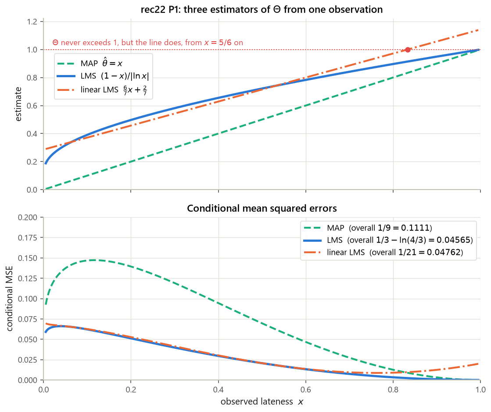
Solution
(a) MAP $=\bar x=0.4$; LMS $=\mathbb{E}[\Theta\mid X=x]=0.512315$
(RJ_lmsn_n5_xbar04), computed from the part-(b) posterior
$c(\bar x)/\theta^5$ with $c(0.4)=0.105090$.
(b) The posterior is supported on $[\bar x,1]$ and puts positive density on the whole interval, so its mean — a weighted average of points strictly inside — lies strictly between the endpoints. As $n$ grows, the likelihood $\theta^{-n}$ decays faster in $\theta$, so the posterior tilts ever more sharply toward its left endpoint $\bar x$ and its mean slides down toward $\bar x$: the sequence $0.654814,\ 0.610860,\ 0.512315$ for $n=1,2,5$ shows exactly that. In the limit the LMS and MAP estimates coincide, which is the general phenomenon B&T note in Example 8.13 — with enough data the prior stops mattering and all reasonable estimators agree.
- No data. $\mathbb{E}[(\Theta-\hat\theta)^2]=\operatorname{var}(\Theta) +(\mathbb{E}[\Theta]-\hat\theta)^2$; best constant $\mathbb{E}[\Theta]$, cost $\operatorname{var}(\Theta)$.
- LMS theorem (L22 slide 1): $\hat\theta=\mathbb{E}[\Theta\mid X=x]$ minimizes $\mathbb{E}[(\Theta-\hat\theta)^2\mid X=x]$, with minimum $\operatorname{var}(\Theta\mid X=x)$; $\hat\Theta=\mathbb{E}[\Theta\mid X]$ minimizes $\mathbb{E}[(\Theta-g(X))^2]$ over all $g$, with minimum $\mathbb{E}[\operatorname{var}(\Theta\mid X)]$. Pointwise optimality plus the tower rule.
- Error properties (L22 slide 4), $\tilde\Theta=\hat\Theta-\Theta$: $\mathbb{E}[\tilde\Theta\mid X]=0$, $\mathbb{E}[\tilde\Theta]=0$, $\mathbb{E}[\tilde\Theta h(X)]=0$ for every $h$, $\operatorname{cov}(\tilde\Theta,\hat\Theta)=0$, $\operatorname{var}(\Theta)=\operatorname{var}(\hat\Theta)+\operatorname{var}(\tilde\Theta)$.
- Linear LMS (L22 slides 5–6): $\hat\Theta_L=\mathbb{E}[\Theta]+\frac{\operatorname{cov}(\Theta,X)}{\operatorname{var}(X)} (X-\mathbb{E}[X])$, error $(1-\rho^2)\sigma_\Theta^2$ with $\rho=\operatorname{cov}(\Theta,X)/(\sigma_\Theta\sigma_X)$. Five numbers, no posterior.
- Many observations (L22 slides 7–8): normal equations $\sum_i a_i\operatorname{cov}(X_i,X_j)=\operatorname{cov}(\Theta,X_j)$; for $X_i=\Theta+W_i$ with independent noises, $\hat\Theta_L=\big(\mu/\sigma_0^2+\sum X_i/\sigma_i^2\big)\big/\sum_{i=0}^n 1/\sigma_i^2$ with error $1/\sum_{i=0}^n1/\sigma_i^2$ — precisions add.
- Normal $\Rightarrow$ linear is exact (L22 slide 8): jointly normal $\Theta,X$ give $\mathbb{E}[\Theta\mid X]=\hat\Theta_L$ and a conditional variance $(1-\rho^2)\sigma_\Theta^2$ that does not depend on $x$.
- Regressors (L22 slide 9): $\mathbb{E}[\Theta\mid X]=\mathbb{E}[\Theta\mid X^3]$ but the linear estimators differ; enlarging the family to $X,X^2,X^3,\ldots$ can only help.
- Worked numbers. Uniform example: $\hat\Theta_L=0.9X+0.7$, linear error $0.3$ versus LMS error $5/18=0.2778$ versus baseline $3$. Romeo & Juliet: MAP $x$ (error $1/9$), LMS $(1-x)/|\ln x|$ (error $1/3-\ln(4/3)=0.045651$), linear $\frac67X+\frac27$ (error $1/21=0.047619$), baseline $1/12=0.083333$.
§5 Synthesis: one page of tools, five gotchas, and the bridge to classical inference
Sources: L19 slides 2, 4–6, 8 · L20 slides 2, 4, 6–7 · L21 slides 2–5 · L22 slides 1, 4–6, 8–9 (the slides the two master tables summarize) · B&T §5.1–5.4 and §8.1–8.4, with the bridge pointing at §9.1. Every number on this page is recomputed in computes/g6_s5.py (exact Fraction arithmetic where the answer is rational, scipy.stats for the exact binomial and Beta quantities, a four-million-draw Monte-Carlo cross-check on the estimation example) and the three figures by computes/g6_s5_figs.py.
G6 covered two apparently unrelated stories. §1–§2 asked what happens to a sum or an average of many independent pieces, and answered with a ladder of tools — Markov, Chebyshev, the weak law, the central limit theorem — each buying a sharper statement with a stronger hypothesis. §3–§4 asked how to turn an observation into a statement about an unknown quantity, and answered with the posterior distribution and three ways to collapse it to a single number. This section puts each story on one page, then says what the two have in common: both are machinery for converting what you know into what you may claim, and in both the fatal error is claiming more than your hypotheses bought.
5.1 The inequality-and-limit table
Fix the notation once, since all four rows share it. $X$ is a random variable with mean $\mu=\mathbb{E}[X]$ and variance $\sigma^2=\operatorname{var}(X)$, both assumed finite; $X_1,X_2,\dots$ are i.i.d. copies of $X$; $S_n=X_1+\cdots+X_n$ is their sum, with $\mathbb{E}[S_n]=n\mu$ and $\operatorname{var}(S_n)=n\sigma^2$ (independence, so variances add); $M_n=S_n/n$ is the sample mean, with $\mathbb{E}[M_n]=\mu$ and $\operatorname{var}(M_n)=\sigma^2/n$; $Z_n=(S_n-n\mu)/(\sigma\sqrt n)$ is the standardized sum, with mean $0$ and variance $1$ for every $n$; $\Phi$ is the standard normal CDF; $a$, $c$ and $\epsilon$ are positive constants chosen by you.
| Tool | Statement | What it needs | What it gives | Source |
|---|---|---|---|---|
| Markov | $\mathbf{P}(X\ge a)\le \dfrac{\mathbb{E}[X]}{a}$ for $a>0$ | $X\ge 0$ and the mean. Nothing else — no variance, no shape. | A bound, true for every distribution meeting the hypothesis. Usually very loose. | §1; B&T §5.1 (Markov is on no L19 slide) |
| Chebyshev | $\mathbf{P}(|X-\mu|\ge c)\le \dfrac{\sigma^2}{c^2}$; with $c=k\sigma$, $\le 1/k^2$ | Mean and variance. $X$ may take either sign. | A two-sided bound. Beats Markov once you are several $\sigma$ out, still loose. | L19 slide 2; §1; B&T §5.1 |
| Weak law (WLLN) | $\mathbf{P}(|M_n-\mu|\ge\epsilon)\le\dfrac{\sigma^2}{n\epsilon^2}\to 0$ for every fixed $\epsilon>0$ | I.i.d. terms, finite mean and variance. (Finite mean alone suffices, but then you lose the rate.) | Convergence in probability of the sample mean, plus an explicit $n$ that meets a stated tolerance. | L19 slide 5; §1; B&T §5.2–5.3 |
| Central limit theorem | $\mathbf{P}(Z_n\le c)\to\Phi(c)$ for every $c$; in practice $\mathbf{P}(S_n\le s)\approx\Phi\!\big(\tfrac{s-n\mu}{\sigma\sqrt n}\big)$ | I.i.d. terms, finite variance, $n$ large. Only $\mu$ and $\sigma$ of the summands matter. | A number, not a bound — an approximation to a CDF, with no error guarantee attached. | L19 slide 8, L20 slide 2; §2; B&T §5.4 |
Read the table down the "what it needs" column and the ladder is obvious: each row assumes strictly more than the row above and returns a strictly sharper statement. Markov knows only the mean; Chebyshev adds the variance; the weak law adds independence and identical distribution; the CLT adds a large $n$ and, in exchange for giving up the guarantee, hands back an actual number.
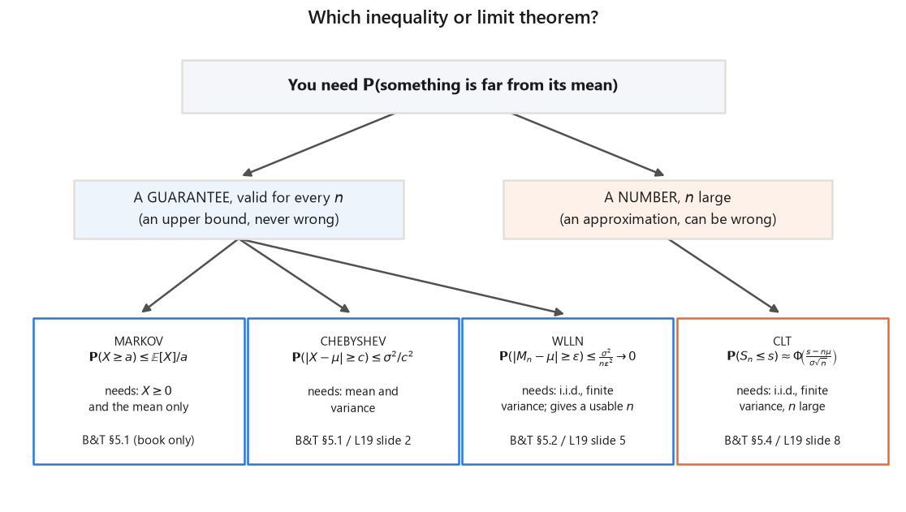
- Ask what the answer is for. A promise to a client ("the error will not exceed…") must be a bound; a design number ("how many samples do I buy?") can be either; a reported probability is almost always the CLT.
- Check the hypotheses you actually have. Only a mean, and $X\ge0$? Markov is the only legal move. Mean and variance? Chebyshev. Also i.i.d. and a sample mean? Weak law. Also $n$ large? CLT.
- If the quantity is a sample mean, write $\operatorname{var}(M_n)=\sigma^2/n$ first. Every WLLN computation is Chebyshev applied to $M_n$ with that variance; there is no second idea.
- Bound the unknown variance if you must. For a Bernoulli$(f)$ poll, $\sigma^2=f(1-f)\le 1/4$, attained at $f=1/2$; using $1/4$ keeps the bound valid whatever $f$ turns out to be (L19 slide 6).
- Standardize before using a table. Subtract the mean, divide by the standard deviation, then and only then read $\Phi$. For an integer-valued $S_n$, apply the $\tfrac12$ correction (§2; L20 slide 6).
- Sanity-check the output. A "probability" above 1 means the bound is vacuous, not wrong — report it as "no useful bound" rather than as an answer.
Solution
Markov. $X\ge 0$ and $\mathbb{E}[X]=1$, so with $a=4$, $$\mathbf{P}(X\ge 4)\le\frac{\mathbb{E}[X]}{4}=\frac{1}{4}=0.25 .$$
Chebyshev. The event $\{X\ge4\}$ is contained in $\{|X-\mu|\ge 3\}$, because $X\ge4$ forces $X-1\ge3$. Monotonicity of probability then lets us bound the smaller event by the larger one, and with $\sigma^2=1$, $c=3$: $$\mathbf{P}(X\ge 4)\le\mathbf{P}(|X-1|\ge 3)\le\frac{\sigma^2}{c^2}=\frac{1}{9}=0.111111 .$$
Exact. The exponential survival function gives $$\mathbf{P}(X\ge 4)=e^{-4}=0.01831564 .$$
Reading the three. Markov overstates the truth by a factor $0.25/0.01831564=13.6$, Chebyshev by $0.111111/0.01831564=6.1$. Push out to $a=10$ and the overstatement becomes $2203\times$ and $272\times$ respectively (Figure 5.2, left): bounds degrade in the far tail, exactly where you most want them. There is no CLT row here, because $X$ is a single random variable and not a sum — the CLT has nothing to say about it. That is the point of the flowchart: the CLT is not "a better Chebyshev", it answers a different question.
Why the bounds cannot be improved. Neither inequality is sloppy; both are tight over the class of distributions satisfying their hypotheses. For Markov, take $X=a$ with probability $\mu/a$ and $X=0$ otherwise: the mean is $a\cdot(\mu/a)+0=\mu$ as required, and $\mathbf{P}(X\ge a)=\mu/a$ exactly — at $a=4,\mu=1$ that is $0.25$, the bound. For Chebyshev with $k=2$, take $X=\pm 2\sigma$ each with probability $1/(2k^2)=0.125$ and $X=0$ with probability $1-1/k^2=0.75$: the mean is $0$ by symmetry, the variance is $\mathbb{E}[X^2]=2(0.125)(2\sigma)^2+0.75(0)^2=\sigma^2$ — verified as $1.0$ in the computes for $\sigma=1$ — and $\mathbf{P}(|X|\ge2\sigma)=2(0.125)=0.25=1/k^2$ exactly. The looseness you see on the exponential is the price of a statement that must also cover these two adversaries.
Solution
Setup. $\mathbb{E}[X_i]=f$ and $\operatorname{var}(X_i)=f(1-f)$, which is at most $1/4=0.25$ over $f\in[0,1]$ (the parabola peaks at $f=1/2$). Since $f$ is precisely what you do not know, use the worst case $\sigma^2=1/4$; this only makes the requirement more conservative. Then $\operatorname{var}(M_n)=\sigma^2/n\le 1/(4n)$.
Chebyshev route. With $\epsilon=0.01$, $$\mathbf{P}(|M_n-f|\ge 0.01)\le\frac{\operatorname{var}(M_n)}{\epsilon^2} =\frac{1/(4n)}{(0.01)^2}=\frac{1}{4n(0.0001)}=\frac{2500}{n}.$$ Demanding $2500/n\le 0.05$ gives $n\ge 2500/0.05=50000$. Check at that value: the bound is $2500/50000=0.05$ exactly ✓, while at $n=10000$ it is $2500/10000=0.25$ — five times the tolerance, so ten thousand respondents provably will not do by this argument.
CLT route. Standardize. $M_n-f$ has standard deviation $\sigma/\sqrt n$, so $$\mathbf{P}(|M_n-f|\ge 0.01)=\mathbf{P}\!\left(\frac{|M_n-f|}{\sigma/\sqrt n}\ge \frac{0.01\sqrt n}{\sigma}\right)\approx\mathbf{P}\!\left(|Z|\ge\frac{0.01\sqrt n}{\sigma}\right) =2\Big(1-\Phi\big(\tfrac{0.01\sqrt n}{\sigma}\big)\Big),$$ using the symmetry of the normal in the last step. Setting this equal to $0.05$ requires $0.01\sqrt n/\sigma=z_{0.975}=1.959964$, the $97.5$th standard normal percentile. With $\sigma=1/2$, $$\sqrt n=\frac{1.959964\times 0.5}{0.01}=97.998,\qquad n=9603.647\ \Rightarrow\ n=9604 .$$
The gap. $50000/9604=5.21$. Chebyshev charges you five times as many respondents for the same promise (Figure 5.2, right). Worse — or better, depending on your budget — a poll of $50000$ people actually achieves, by the CLT, an error probability of about $7.74\times 10^{-6}$, not $0.05$: the Chebyshev-sized poll is roughly six thousand times more accurate than its own guarantee claims. Neither number is wrong. Chebyshev's is a theorem about all distributions with variance $\le 1/4$; the CLT's is an approximation that exploits the extra fact that $M_n$ is a normalized sum and is therefore nearly normal. You pay for certainty with sample size.
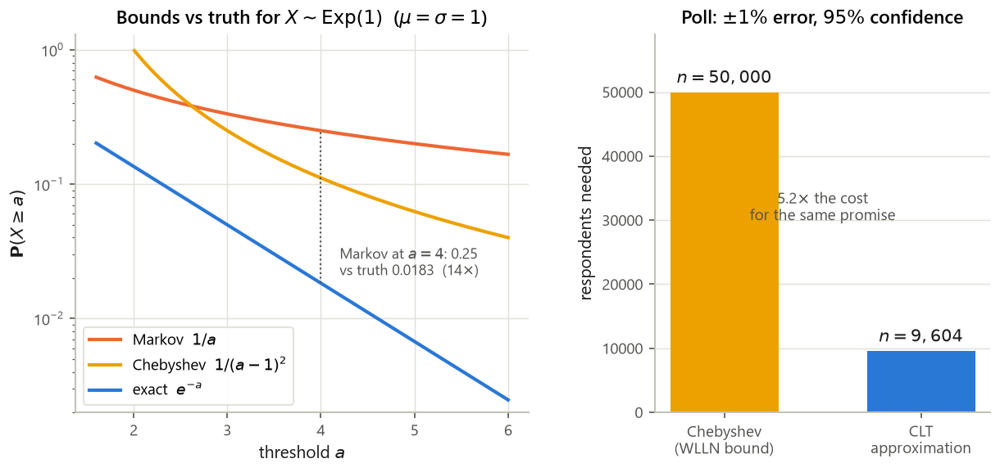
computes/g6_s5.py.Solution
Markov. $X\ge0$ and the mean is $10$, so with $a=40$, $$\mathbf{P}(X\ge 40)\le\frac{\mathbb{E}[X]}{40}=\frac{10}{40}=0.25 .$$
Chebyshev. Chebyshev bounds a two-sided event, so first embed the one-sided event: $X\ge40$ forces $X-10\ge30$, hence $\{X\ge40\}\subseteq\{|X-10|\ge30\}$ and monotonicity of probability gives $$\mathbf{P}(X\ge 40)\le\mathbf{P}(|X-10|\ge 30)\le\frac{\operatorname{var}(X)}{30^2} =\frac{25}{900}=0.027778 .$$
Comparison. Chebyshev is $0.25/0.027778=9.0$ times tighter, and the extra hypothesis paying for it is exactly one number — the variance. With the mean alone Markov is the only legal move (§1); with mean and variance you should always take Chebyshev. Note that both are still "at most" statements: the true probability could be anything from $0$ to $0.027778$.
Solution
Chebyshev / WLLN route. $\operatorname{var}(M_n)=\sigma^2/n=4/n$, so $$\mathbf{P}(|M_n-\mu|\ge 0.5)\le\frac{\sigma^2}{n\epsilon^2}=\frac{4}{n(0.25)}=\frac{16}{n},$$ and $16/n\le0.01$ requires $n\ge 16/0.01=1600$.
CLT route. Standardizing, $\mathbf{P}(|M_n-\mu|\ge\epsilon)\approx 2\big(1-\Phi(\epsilon\sqrt n/\sigma)\big)$; setting this to $0.01$ needs $\epsilon\sqrt n/\sigma=z_{0.995}=2.575829$, so $$\sqrt n=\frac{2.575829\times 2}{0.5}=10.303,\qquad n=106.158\ \Rightarrow\ n=107 .$$
The check. $1600/107=14.95$: the guarantee costs fifteen times the data. And at $n=107$ the Chebyshev bound is $16/107=0.149533$ — fifteen times the tolerance, so Chebyshev cannot certify the CLT's sample size even though the CLT's answer is, for any remotely normal-ish summand, correct. This is the pollster of Example 5.2 in miniature: the ratio is not a fixed $5.21$, it depends on the confidence level demanded (here $99\%$ rather than $95\%$, and the Chebyshev penalty grows as the tail requirement tightens, because $1/\delta$ grows faster than $z_{1-\delta/2}^2$).
5.2 The Bayesian-estimation table
Again fix the notation. $\Theta$ is the unknown, treated as a random variable with prior $p_\Theta$ (discrete) or $f_\Theta$ (continuous) — this is what makes the framework Bayesian. $X$ is the observation, linked to $\Theta$ by the model $p_{X|\Theta}$ or $f_{X|\Theta}$; $x$ is the value actually seen. $\hat\Theta=g(X)$ is an estimator, a rule turning data into a guess, and $\hat\theta=g(x)$ is the resulting estimate, a number. $\tilde\Theta=\hat\Theta-\Theta$ is the estimation error. All four rows below are read off the same posterior, so the row you pick is a choice of what to report, not a choice of model.
| Object | Formula | What it needs | What it optimizes / gives | Source |
|---|---|---|---|---|
| Posterior | $f_{\Theta|X}(\theta|x)=\dfrac{f_\Theta(\theta)\,f_{X|\Theta}(x|\theta)}{f_X(x)}$, $f_X(x)=\displaystyle\int f_\Theta(\theta)f_{X|\Theta}(x|\theta)\,d\theta$ (and the three discrete/mixed variants) | Prior and observation model; the ability to do the normalizing sum or integral. | Everything. It is the complete answer; each row below is a summary of it. | L21 slides 3–4; §3; B&T §8.1 |
| MAP estimate | $\hat\theta_{\text{MAP}}=\arg\max_\theta f_{\Theta|X}(\theta|x)$ — equivalently $\arg\max_\theta f_\Theta(\theta)f_{X|\Theta}(x|\theta)$, since $f_X(x)$ does not depend on $\theta$ | The posterior up to a constant only. No integration needed. | Minimizes $\mathbf{P}(\hat\Theta\neq\Theta)$ when $\Theta$ is discrete — the natural choice for hypothesis testing. | L21 slide 5, L22 slide 1; §3; B&T §8.2 |
| LMS estimate | $\hat\Theta=\mathbb{E}[\Theta\mid X]$; for each $x$, $\hat\theta=\mathbb{E}[\Theta\mid X=x]$ | The full posterior, and one integration against it. | Minimizes $\mathbb{E}[(\Theta-g(X))^2]$ over all functions $g$. Resulting MSE $=\mathbb{E}[\operatorname{var}(\Theta\mid X)]$. | L21 slides 6–7, L22 slide 1; §4; B&T §8.3 |
| Linear LMS | $\hat\Theta_L=\mathbb{E}[\Theta]+\dfrac{\operatorname{cov}(X,\Theta)}{\operatorname{var}(X)}\big(X-\mathbb{E}[X]\big)$ | Five numbers: $\mathbb{E}[\Theta],\mathbb{E}[X],\operatorname{var}(X),\operatorname{cov}(X,\Theta)$ for the estimator itself, plus $\operatorname{var}(\Theta)$ to report its MSE. No posterior, no integral. | Minimizes $\mathbb{E}[(\Theta-aX-b)^2]$ over $a,b$. Resulting MSE $=(1-\rho^2)\operatorname{var}(\Theta)$, where $\rho$ is the correlation coefficient. | L22 slides 5–6; §4; B&T §8.4 |
Two structural remarks tie the rows together. First, the error decomposition $\operatorname{var}(\Theta)=\operatorname{var}(\hat\Theta)+\operatorname{var}(\tilde\Theta)$ (L22 slide 4) says the prior variance splits into the part the data explained and the part left over — so the MSE of the LMS estimator can never exceed $\operatorname{var}(\Theta)$, the MSE of ignoring the data and reporting $\mathbb{E}[\Theta]$. Second, the linear-LMS MSE formula $(1-\rho^2)\operatorname{var}(\Theta)$ makes the same statement quantitatively for the restricted class: $\rho^2$ is literally the fraction of the prior variance a straight line can remove.
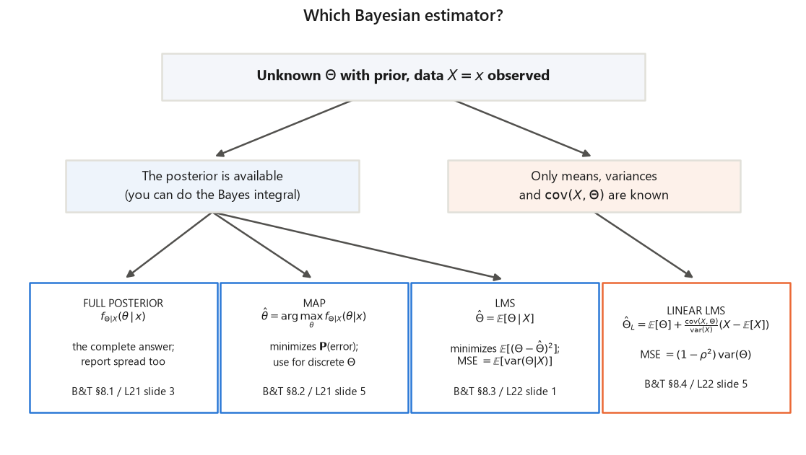
- Is $\Theta$ discrete or continuous? Discrete and you must commit to one value: MAP, because it minimizes the probability of being wrong. Continuous and errors are graded by size: LMS.
- Can you normalize the posterior? If the integral $f_X(x)=\int f_\Theta f_{X|\Theta}\,d\theta$ is doable, you have the whole posterior and every row is open. If not, MAP is still available — it needs the numerator only.
- Do you only know first and second moments? Then linear LMS is not a compromise, it is the whole of what the information supports. Compute the four numbers the estimator needs — $\mathbb{E}[\Theta],\mathbb{E}[X],\operatorname{var}(X),\operatorname{cov}(X,\Theta)$ — and substitute; add the fifth, $\operatorname{var}(\Theta)$, as soon as you want to quote the resulting MSE $(1-\rho^2)\operatorname{var}(\Theta)$. Five numbers in all: two means, two variances, one covariance (§4).
- Before reporting, quote a spread. $\operatorname{var}(\Theta\mid X=x)$ for LMS, $(1-\rho^2)\operatorname{var}(\Theta)$ for linear LMS. An estimate without a spread hides whether the data did anything at all.
- If everything in sight is normal, stop early. With a normal prior and normal noise the posterior is normal, so its mode equals its mean: MAP $=$ LMS $=$ linear LMS, all three the same weighted average $\hat\Theta_L=\big(\mu/\sigma_0^2+\sum_i X_i/\sigma_i^2\big)\big/\big(1/\sigma_0^2+\sum_i 1/\sigma_i^2\big)$ (L22 slide 8, "the cleanest linear LMS example").
Solution
The posterior. Given $\Theta=\theta$, the number of heads $K$ in $n=5$ independent tosses is binomial, so $\mathbf{P}(K=5\mid\Theta=\theta)=\binom{5}{5}\theta^5(1-\theta)^0=\theta^5$. The prior is $f_\Theta(\theta)=1$ on $[0,1]$. Bayes for a continuous unknown with discrete data (L21 slide 4) gives $$f_{\Theta|K}(\theta\mid 5)=\frac{f_\Theta(\theta)\,\mathbf{P}(K=5\mid\Theta=\theta)} {\int_0^1 f_\Theta(t)\,\mathbf{P}(K=5\mid\Theta=t)\,dt} =\frac{\theta^5}{\int_0^1 t^5\,dt}=\frac{\theta^5}{1/6}=6\theta^5,\qquad 0\le\theta\le1 .$$ This is the Beta$(6,1)$ density. It is strictly increasing on $[0,1]$ and heavily skewed (skewness $-1.283$).
MAP. Maximize $6\theta^5$ over $[0,1]$: the derivative $30\theta^4$ is positive throughout, so the maximum is at the right endpoint, $$\hat\theta_{\text{MAP}}=1 .$$ The most probable single value of the bias, after five heads, is "the coin always comes up heads".
Conditional mean. Integrate against the posterior: $$\mathbb{E}[\Theta\mid K=5]=\int_0^1\theta\cdot 6\theta^5\,d\theta=6\int_0^1\theta^6\,d\theta =6\cdot\frac{1}{7}=\frac{6}{7}=0.857143 .$$ The posterior median, for comparison, is $0.890899$ (from $\int_0^m 6\theta^5 d\theta=m^6=1/2$, i.e. $m=2^{-1/6}$).
Posterior variance and the two MSEs. The second moment is $\mathbb{E}[\Theta^2\mid K=5]=6\int_0^1\theta^7d\theta=6/8=0.75$, so $$\operatorname{var}(\Theta\mid K=5)=0.75-\Big(\tfrac67\Big)^2=0.75-0.734694=0.015306 =\frac{6}{392}.$$ For any fixed report $c$, the conditional MSE is $\mathbb{E}[(\Theta-c)^2\mid K=5]=\mathbb{E}[\Theta^2\mid\cdot]-2c\,\mathbb{E}[\Theta\mid\cdot]+c^2$. At $c=6/7$ this is the posterior variance $0.015306$ — the minimum, as the theory promises. At $c=1$ (the MAP value) it is $$0.75-2(1)(0.857143)+1=0.035714=\tfrac{1}{28},$$ which is $2.33$ times larger. At the median $c=0.890899$ it is $0.016446$.
Which to report. If you must place a bet on a single value and are scored on squared error — "how far off is my estimate of the bias?" — report $6/7$. Do not promote the MAP value $1$ into an answer to the yes/no question "is this coin two-headed?": here $\Theta$ is continuous with a uniform prior, so $\mathbf{P}(\Theta=1)=0$, and therefore $\mathbf{P}(\hat\Theta=\Theta)=0$ for every estimator — MAP's error-minimizing property (§3; Gotcha 4 below) is vacuous in this model, because there is no rule it could beat. A genuine "two-headed?" test needs a different prior, one with an atom at $\theta=1$ — say $\mathbf{P}(\Theta=1)=q$ and the remaining mass $1-q$ spread uniformly on $[0,1]$ — and only then does the posterior probability of the hypothesis become a number you can compare against $1/2$. Under the uniform prior actually assumed here that probability is $0$. If you can report anything at all, report the posterior $6\theta^5$: it tells the reader both numbers, and it tells them the estimate is skewed, which neither single number does.
Solution
LMS. Given $X=x$, the value of $\Theta$ is determined: since $\Theta\ge0$, $\Theta=\sqrt X$. Hence $\mathbb{E}[\Theta\mid X]=\sqrt X$ and the mean squared error is $$\mathbb{E}\big[(\Theta-\sqrt X)^2\big]=\mathbb{E}\big[(\Theta-\Theta)^2\big]=0 .$$ The data determine the unknown exactly, so the optimal estimator is perfect.
Linear LMS — the five ingredients. Moments of a uniform on $[0,1]$ are $\mathbb{E}[\Theta^k]=1/(k+1)$, so $\mathbb{E}[\Theta]=1/2$, $\mathbb{E}[\Theta^2]=1/3$, $\mathbb{E}[\Theta^3]=1/4$, $\mathbb{E}[\Theta^4]=1/5$. Then $$\operatorname{var}(\Theta)=\tfrac13-\tfrac14=\tfrac1{12}=0.083333,$$ $$\mathbb{E}[X]=\mathbb{E}[\Theta^2]=\tfrac13,\qquad \operatorname{var}(X)=\mathbb{E}[\Theta^4]-\big(\mathbb{E}[\Theta^2]\big)^2 =\tfrac15-\tfrac19=\tfrac{9-5}{45}=\tfrac{4}{45}=0.088889,$$ $$\operatorname{cov}(X,\Theta)=\mathbb{E}[\Theta^3]-\mathbb{E}[\Theta^2]\mathbb{E}[\Theta] =\tfrac14-\tfrac13\cdot\tfrac12=\tfrac14-\tfrac16=\tfrac{1}{12}=0.083333 .$$
The estimator. Substituting into the formula, $$a=\frac{\operatorname{cov}(X,\Theta)}{\operatorname{var}(X)}=\frac{1/12}{4/45} =\frac{45}{48}=\frac{15}{16}=0.9375,\qquad b=\mathbb{E}[\Theta]-a\,\mathbb{E}[X]=\tfrac12-\tfrac{15}{16}\cdot\tfrac13=\tfrac12-\tfrac{5}{16} =\tfrac{3}{16}=0.1875,$$ so $\hat\Theta_L=0.9375\,X+0.1875$. A least-squares fit to four million simulated pairs returns $a=0.93736$, $b=0.18757$ ✓.
The MSE. The squared correlation coefficient is $$\rho^2=\frac{\operatorname{cov}(X,\Theta)^2}{\operatorname{var}(X)\operatorname{var}(\Theta)} =\frac{(1/12)^2}{(4/45)(1/12)}=\frac{1/144}{1/135}=\frac{135}{144}=\frac{15}{16}=0.9375,$$ so $\rho=0.968246$, and $$\mathbb{E}\big[(\Theta-\hat\Theta_L)^2\big]=(1-\rho^2)\operatorname{var}(\Theta) =\tfrac{1}{16}\cdot\tfrac{1}{12}=\tfrac{1}{192}=0.005208$$ (simulation: $0.005200$ ✓).
Comparison. Doing nothing — reporting the prior mean $\mathbb{E}[\Theta]=0.5$ — has MSE $\operatorname{var}(\Theta)=0.083333$. The straight line removes $93.75\%$ of that, down to $0.005208$. The optimal estimator removes $100\%$, down to $0$. So linear LMS is very good here and still infinitely worse than the truth in relative terms. The moral: $\rho$ measures linear association only, and a $\rho$ of $0.97$ still leaves a residual that is entirely explainable — by a curve. Linear LMS is the right tool when you genuinely lack the posterior, not when you are merely avoiding an integral you could do.
Solution
Posterior. $\mathbf{P}(K=2\mid\Theta=\theta)=\binom32\theta^2(1-\theta)=3\theta^2(1-\theta)$; the factor $3$ and the prior density $1$ are constants in $\theta$, so $$f_{\Theta|K}(\theta\mid2)=\frac{\theta^2(1-\theta)}{\int_0^1 t^2(1-t)\,dt} =\frac{\theta^2(1-\theta)}{\tfrac13-\tfrac14}=\frac{\theta^2(1-\theta)}{1/12} =12\,\theta^2(1-\theta),\qquad 0\le\theta\le1,$$ the Beta$(3,2)$ density.
MAP. Maximize $\theta^2-\theta^3$: the derivative $2\theta-3\theta^2=\theta(2-3\theta)$ vanishes at $\theta=2/3$ (and at the boundary $\theta=0$, a minimum), so $\hat\theta_{\text{MAP}}=2/3=0.666667$. Unlike Example 5.3 the maximum is interior, because the one tail keeps the density from rising to the endpoint.
Mean and variance. For Beta$(a,b)$, $\mathbb{E}[\Theta]=a/(a+b)$ and $\mathbb{E}[\Theta^2]=a(a+1)/\big((a+b)(a+b+1)\big)$; with $a=3,b=2$, $$\mathbb{E}[\Theta\mid K=2]=\tfrac35=0.6,\qquad \mathbb{E}[\Theta^2\mid K=2]=\frac{3\cdot4}{5\cdot6}=0.4,$$ $$\operatorname{var}(\Theta\mid K=2)=0.4-0.36=0.04=\tfrac1{25}.$$ (The posterior median is $0.614272$, between the two — the posterior is only mildly skewed.)
The penalty. $\mathbb{E}[(\Theta-c)^2\mid K=2]=0.4-2c(0.6)+c^2$; at $c=2/3$ this is $0.4-0.8+0.444444=0.044444$ against $0.04$ at the mean, a factor $1.11$. Compare Example 5.3's $2.33$: the penalty for reporting the mode tracks the skew of the posterior, and this posterior is far less skewed than Beta$(6,1)$.
Solution
The moments. $\mathbb{E}[\Theta]=1/2$ and $\operatorname{var}(\Theta)=1/12=0.083333$; $\mathbb{E}[W]=0$ and $\operatorname{var}(W)=2^2/12=1/3$. Hence $\mathbb{E}[X]=1/2$ and, by independence (variances add), $$\operatorname{var}(X)=\tfrac1{12}+\tfrac13=\tfrac5{12}=0.416667,\qquad \operatorname{cov}(X,\Theta)=\operatorname{cov}(\Theta+W,\Theta)=\operatorname{var}(\Theta) =\tfrac1{12}=0.083333,$$ the last step because $\operatorname{cov}(W,\Theta)=0$ under independence.
The estimator. $$a=\frac{\operatorname{cov}(X,\Theta)}{\operatorname{var}(X)}=\frac{1/12}{5/12}=\tfrac15=0.2, \qquad b=\mathbb{E}[\Theta]-a\,\mathbb{E}[X]=\tfrac12-\tfrac15\cdot\tfrac12=\tfrac25=0.4,$$ so $\hat\Theta_L=0.2X+0.4$ (least squares on four million simulated pairs: $a=0.20022$, $b=0.40003$ ✓). The estimator shrinks hard toward the prior mean $0.5$, correctly: the noise variance is four times the prior variance.
Its MSE. $\rho^2=\operatorname{cov}^2/(\operatorname{var}(X)\operatorname{var}(\Theta)) =(1/144)/\big((5/12)(1/12)\big)=1/5=0.2$, so $$\mathbb{E}\big[(\Theta-\hat\Theta_L)^2\big]=(1-\rho^2)\operatorname{var}(\Theta) =0.8\times\tfrac1{12}=\tfrac1{15}=0.066667$$ (simulation $0.066624$ ✓), against $0.083333$ for ignoring the data: the observation removes only $20\%$ of the prior variance.
The exact LMS estimator. Given $X=x$, the posterior density is proportional to $f_\Theta(\theta)f_W(x-\theta)=1\cdot\tfrac12$ on the set where both factors are nonzero, i.e. $\theta\in[\max(0,x-1),\min(1,x+1)]$ — so $\Theta\mid X=x$ is uniform on that overlap and $\mathbb{E}[\Theta\mid X=x]$ is its midpoint. Explicitly $\tfrac{x+1}{2}$ for $-1\le x\le0$, $\tfrac12$ for $0\le x\le1$, and $\tfrac{x}{2}$ for $1\le x\le2$: piecewise linear with a flat middle, not a single straight line. Its MSE is $\mathbb{E}[\operatorname{var}(\Theta\mid X)]=\int L(x)^3/24\,dx=1/16=0.0625$, where $L(x)$ is the length of the overlap (simulation $0.062470$ ✓).
What linearity cost. $0.066667/0.0625=1.07$ — seven percent. Contrast Example 5.4, where the same restriction turned a perfect estimator into one with positive MSE. The moral is that the cost of the linear restriction is a property of the model, not a constant; here the best rule is nearly linear, so the cheap estimator is nearly optimal.
5.3 The five gotchas that cost the most
Solution
(a) Gotcha 1. A bound is not a frequency. $1/k^2=0.111111$ is an upper bound valid for every distribution with that variance; for a normal the actual two-sided $3\sigma$ tail is $0.002700$, forty-one times smaller, and for a uniform on $[0,1]$ it is exactly $0$. Correct statement: "at most one experiment in nine".
(b) Gotcha 2. The CLT is a statement about CDFs; there is no theorem about PMF values. Spread the integer over $[18.5,19.5]$ and difference the normal CDF: $\Phi(0.5)-\Phi(0.166667)=0.125279$ against the exact $0.125110$. Reading the density instead gives $0.125794$ — it happens to be close here, but it is an unlicensed move.
(c) Gotcha 3. Convergence in probability says nothing about expectations. The standard counterexample is the one in Gotcha 3 itself: $Y_n=n$ with probability $1/n$, else $0$, has $\mathbf{P}(|Y_n|\ge\epsilon)=1/n\to0$ yet $\mathbb{E}[Y_n]=1$ for every $n$. Correct statement: "$\mathbf{P}(|Y_n|\ge\epsilon)\to0$ for every fixed $\epsilon>0$", and nothing more.
(d) Gotcha 4 (and Example 5.3). With a continuous prior every single value has probability $0$, so "the coin is two-headed" has posterior probability $0$ no matter how the density behaves at $\theta=1$; a density value is not a probability. To ask the yes/no question at all you must put an atom on $\theta=1$ in the prior. Correct statement: "the posterior density is largest near $\theta=1$", which is a statement about where the mass concentrates, not about a hypothesis.
(e) Gotcha 5. $\rho$ measures the linear part of the dependence only. In Example 5.4, $\rho^2=0.9375$ while the optimal estimator $\sqrt X$ has MSE exactly $0$ — the remaining $6.25\%$ of prior variance was not noise, it was curvature. Correct statement: "a linear rule removes $93.75\%$ of the prior variance", with no claim about what is knowable.
Solution
(i) Markov. Only the mean is known, so Chebyshev is unavailable; the bound is $\mathbb{E}[X]/(5\mathbb{E}[X])=0.2$, whatever the distribution. The blocking hypothesis is the missing variance.
(ii) The weak law, i.e. Chebyshev applied to $M_n$ with $\operatorname{var}(M_n)=\sigma^2/n$: $n\ge\sigma^2/(\delta\epsilon^2)$. The CLT is unavailable as a promise — not because a hypothesis fails but because it returns an approximation, and the word in the task is "promise" (Fig. 5.1).
(iii) The CLT, with the $\tfrac12$ correction: $\Phi\big((240.5-n\mu)/(\sigma\sqrt n)\big)$. The task asks for a number, not a bound, and the terms are lattice-valued, which is what makes the correction mandatory (Gotcha 2).
(iv) MAP. $\Theta$ is discrete and you must commit to one value, which is exactly the criterion $\mathbf{P}(\hat\Theta\ne\Theta)$ that MAP minimizes. LMS would return a number between the two labels, which is not an admissible announcement.
(v) Linear LMS. Without the prior and the observation model there is no posterior, so the top three rows of the §5.2 table are unavailable; $\hat\Theta_L=\mathbb{E}[\Theta]+ \frac{\operatorname{cov}(X,\Theta)}{\operatorname{var}(X)}(X-\mathbb{E}[X])$ is the whole of what the information supports, and $\operatorname{var}(\Theta)$ lets you quote its MSE.
5.4 Bridge to G7: drop the prior
Everything in §3 and §4 rested on one modeling decision: $\Theta$ was given a distribution. That is what let us write $f_{\Theta|X}$ at all, because Bayes' rule needs a $f_\Theta$ to invert. L21 slide 2 puts the alternative on the same slide, deliberately: in classical statistics $\theta$ is an unknown constant, not a random variable. The model is written $p_X(x;\theta)$ — a whole family of distributions indexed by $\theta$, with a semicolon rather than a conditioning bar, because there is nothing to condition on. There is no prior, hence no posterior, hence none of the four rows of §5.2 exists in that world.
| Question | Bayesian (G6 §3–§4) | Classical (G7) |
|---|---|---|
| What is $\theta$? | A random variable $\Theta$ with a prior you supply. | An unknown constant. No distribution, ever. |
| Notation for the model | $p_{X|\Theta}(x\mid\theta)$ — a conditional PMF/PDF. | $p_X(x;\theta)$ — one PMF/PDF per candidate $\theta$. |
| The output | The posterior $f_{\Theta|X}(\theta\mid x)$, then MAP / $\mathbb{E}[\Theta\mid X]$ / linear LMS. | An estimator $\hat\Theta_n=g(X_1,\dots,X_n)$ judged by its sampling behavior — bias, variance, consistency. |
| "$95\%$ confidence" means | The posterior puts probability $0.95$ on this interval, given the data actually seen. | If the experiment were repeated, $95\%$ of the intervals produced would cover the fixed $\theta$. The interval is random; $\theta$ is not. |
| Where the maximization goes | $\max_\theta f_\Theta(\theta)f_{X|\Theta}(x\mid\theta)$ — MAP. | $\max_\theta p_X(x;\theta)$ — maximum likelihood: MAP with the prior deleted. |
| Source | L21 slides 2–5; L22 slides 1, 5–6; B&T §8.1–8.4 | L21 slide 2 (the contrast slide); B&T §9.1 |
Read the last two rows together and the bridge is short. Maximum likelihood is the MAP rule with $f_\Theta$ set to a constant, so every MAP computation in §3 already contains a classical one inside it; the Example 5.3 posterior $6\theta^5$ is maximized at $\theta=1$, and so is the likelihood $\theta^5$ — with a uniform prior they agree exactly. And confidence intervals, the central object of G7, are built out of §1 and §2: the estimator $\hat\Theta_n$ is a sample mean, the weak law says it converges to $\theta$, and the CLT converts "converges" into the $\pm 1.96\,\hat\sigma/\sqrt n$ that appears in every reported poll. That is why limit theorems and Bayesian inference sit in the same group: G6 §1–§2 supply the machinery that G7 uses to answer G6 §3–§4's questions without a prior.
Solution
(a) Bayesian. The likelihood is $\theta^{60}(1-\theta)^{40}$ and the uniform prior is constant, so the posterior is proportional to it: Beta$(61,41)$. Its mode is $(61-1)/(61+41-2)=60/100=0.6$, so $\hat\theta_{\text{MAP}}=0.6$. Its mean is $61/102=0.598039$ — pulled a hair toward the prior mean $0.5$, because the prior adds one imaginary head and one imaginary tail. Its standard deviation is $0.048310$, and the central $95\%$ posterior interval (the $2.5$th and $97.5$th posterior percentiles) is $$[0.501744,\ 0.690691].$$
(b) Classical. Maximizing $\theta^{60}(1-\theta)^{40}$ — the same maximization with the prior deleted, which here changes nothing — gives $\hat p=60/100=0.6$. The estimated standard error is $\sqrt{0.6(0.4)/100}=0.048990$, so with $z_{0.975}=1.959964$ the half-width is $0.096018$ and the interval is $$[0.503982,\ 0.696018].$$
(c) The difference. Numerically the intervals differ by less than a quarter of a percentage point, and the point estimates agree exactly — with a uniform prior MAP is maximum likelihood. The statements are not the same statement. The Bayesian interval says: given the $60$ heads I actually saw, the posterior assigns probability $0.95$ to $\Theta$ lying in $[0.501744,0.690691]$ — a probability about the unknown, with the data held fixed. The confidence interval says: the procedure "take $\hat p\pm1.959964\,\hat\sigma/\sqrt n$" produces, over hypothetical repetitions of the experiment, intervals that cover the fixed true $\theta$ $95\%$ of the time — a probability about the interval, with the unknown held fixed. Once the data are in, $[0.503982,0.696018]$ either contains $\theta$ or it does not, and classically there is no probability to attach to which. G7 develops the second story; the arithmetic will look familiar because it is built from the WLLN and the CLT of §1–§2 (B&T §9.1).
- $\mathbf{P}(X\ge a)\le\mathbb{E}[X]/a$ for $X\ge0$ — Markov, mean only (B&T §5.1).
- $\mathbf{P}(|X-\mu|\ge c)\le\sigma^2/c^2$ — Chebyshev, mean and variance (B&T §5.1).
- $\operatorname{var}(M_n)=\sigma^2/n$ is the engine of everything about sample means.
- $\mathbf{P}(|M_n-\mu|\ge\epsilon)\le\sigma^2/(n\epsilon^2)\to0$ — WLLN, convergence in probability (B&T §5.2–5.3).
- $Z_n=(S_n-n\mu)/(\sigma\sqrt n)$; $\mathbf{P}(Z_n\le c)\to\Phi(c)$ — CLT, CDFs only (B&T §5.4).
- Integer-valued sums: add the $\tfrac12$ correction; $0.878508$ exact vs $0.841345$ without and $0.878327$ with, at $n=36,p=0.5$.
- Bernoulli poll: $\sigma^2=f(1-f)\le1/4$; $\pm1\%$ at $95\%$ costs $n=50000$ by Chebyshev, $n=9604$ by CLT.
- $f_{\Theta|X}(\theta|x)=f_\Theta(\theta)f_{X|\Theta}(x|\theta)/f_X(x)$ — four versions, one idea (B&T §8.1).
- MAP maximizes the posterior; it needs no normalizing constant and minimizes $\mathbf{P}(\text{error})$ for discrete $\Theta$ (B&T §8.2).
- $\mathbb{E}[\Theta\mid X]$ minimizes MSE over all estimators; its MSE is $\mathbb{E}[\operatorname{var}(\Theta\mid X)]$ (B&T §8.3).
- $\hat\Theta_L=\mathbb{E}[\Theta]+\frac{\operatorname{cov}(X,\Theta)}{\operatorname{var}(X)}(X-\mathbb{E}[X])$, MSE $=(1-\rho^2)\operatorname{var}(\Theta)$ — five moments (two means, two variances, one covariance), nothing else (B&T §8.4).
- Delete the prior and MAP becomes maximum likelihood: that is the door into G7 (B&T §9.1).